Samba Solar Track
Waveshare ESP32-P4-WIFI6-Touch-LCD-10.1 com a placa RearCircuitBoard_10
A variante principal do Samba Solar Track. Este manual descreve a montagem, a placa, as ligações, a bateria, a primeira gravação do firmware e a verificação do hardware. O firmware para este board foi iniciado e gravado num board de teste (arranca e o Wi-Fi funciona), mas ainda não foi testado no aparelho; a placa existe como projeto 0.10 e ainda não foi fabricada nem medida.
© Silvio Sternitzke, 10/2026 · Licença CC BY-NC-SA 4.0 · sem utilização comercial por terceiros
Tudo neste manual é um projeto. A placa RearCircuitBoard_10 (projeto 0.10 de 11 de outubro de 2026) só foi verificada no computador: as verificações de regras do KiCad não indicam erros e os dados de fabrico para a JLCPCB estão prontos. Nada foi fabricado, montado ou medido; todos os valores são calculados ou retirados de folhas de dados. As medidas da parede traseira são pressupostos até o aparelho ser medido. Antes de uma encomenda, são necessárias medições no board entregue (anexo 11 E). Ainda não existe um firmware com o qual o board de 10,1 polegadas possa controlar um tracker; foi iniciado (capítulo 8).
1O que é o Samba Solar Track?
Um módulo solar produz mais energia quando o sol incide perpendicularmente sobre ele. O Samba Solar Track roda e inclina o módulo ao longo do dia para que isso aconteça sempre que possível, e coloca-o na horizontal durante uma tempestade.
Segue o sol
Um sensor com quatro fotossensores deteta onde está o sol. Dois atuadores orientam o módulo de acordo.
Protege durante tempestades
Um anemómetro vigia o vento. Durante uma tempestade, o módulo coloca-se na horizontal e fica assim até o tempo acalmar.
Ecrã grande
O ecrã tátil de 10,1 polegadas é o aparelho principal. Uma bateria integrada mantém-no a funcionar se os 24 V falharem.
Poupa a mecânica
Fins de curso, pausas na mudança de sentido e uma vigilância do tempo de curso evitam danos.
Os componentes do sistema
Os dois eixos
O módulo move-se em duas direções. A elevação é a inclinação: de manhã e ao fim do dia o sol está baixo, ao meio-dia está alto. O azimute é a rotação de este para oeste, seguindo o percurso do sol no céu.
O Samba Solar Track existe em dois modos de operação: só vertical (um eixo, a elevação) ou como tracker completo com elevação e azimute. O modo é escolhido no ecrã ao ligar pela primeira vez (em preparação, ver capítulo 8).
2Segurança em primeiro lugar
O controlador move peças pesadas com atuadores potentes e tem uma bateria. Leia estes pontos antes de ligar qualquer coisa.
Um atuador linear empurra com várias centenas de newtons e não para se houver uma mão no caminho. Trabalhe na mecânica apenas com a fonte de alimentação de 24 V desligada (com duas fontes, a dos atuadores). O automático pode arrancar sozinho a qualquer momento.
A placa RearCircuitBoard_10 é uma placa de extensão para o Samba Solar Track. Sozinha não tem qualquer função. Precisa de um board Waveshare compatível com ecrã (para a placa RearCircuitBoard_10, o ESP32-P4-WIFI6-Touch-LCD-10.1), de uma alimentação externa de 24 V em corrente contínua, bem como de sensores e atuadores. Estes não fazem parte da placa (não incluídos no fornecimento). A própria placa só é alimentada com 24 V. Os atuadores podem funcionar com 12 ou 24 V, desde que em cada contacto de comutação haja no máximo 30 V e 1 A (capítulo 6).
A placa RearCircuitBoard_10 destina-se exclusivamente a tensão reduzida de segurança (SELV): em nenhuma das suas ligações pode haver mais de 30 V em corrente contínua. O controlador recebe 24 V em corrente contínua e os atuadores funcionam tipicamente com 12 ou 24 V. A tensão de rede (230 V) nunca pode ser ligada à placa, aos seus terminais ou aos seus contactos de comutação. Os contactos de comutação (PhotoMOS) não são relés de rede: comutam sinais de comando e bobinas de relé até 30 V e 1 A, mas nenhum motor nem aparelho ligado à rede elétrica. A fonte de alimentação que transforma 230 V em 24 V é um aparelho comprado pronto, com uma saída aprovada para SELV (verificar na folha de dados); com duas fontes, isto aplica-se a ambas. Os trabalhos em 230 V devem ser feitos por um eletricista qualificado.
Na variante de montagem “smd”, você solda os terminais, as barras de pinos J16 e J21 e a barra de pinos J1; na variante de montagem “voll” (completa), apenas J1 (anexo 11 B). Depois liga você mesmo a fonte de alimentação, os sensores e os atuadores. Na medida permitida por lei, não se assume qualquer responsabilidade por danos causados por soldadura incorreta, inversão de polaridade ou ligação errada de componentes externos. A responsabilidade que a lei não permite excluir (por exemplo em caso de dolo, negligência grosseira ou segundo a lei de responsabilidade pelo produto) não é afetada. Isto é uma nota, não um aconselhamento jurídico.
Coloque na linha positiva de cada atuador um fusível adequado ao atuador (o valor está na respetiva folha de dados). Um motor bloqueado consome várias vezes a sua corrente normal. Na fonte de alimentação comum, cada linha recebe o seu próprio fusível diretamente na fonte: os atuadores 25 A, o controlador 2 A (capítulo 6).
O controlador coloca o módulo na horizontal, mas não consegue compensar uma falha de energia. Deteta um anemómetro que deixou de responder. Não deteta um que dá valores errados (por exemplo, um rotor de conchas preso). A mecânica tem de resistir a uma tempestade mesmo numa posição desfavorável.
Em caso de qualquer erro, todos os contactos de comutação abrem e os atuadores param. Um cabo de fim de curso partido tem o mesmo efeito que uma posição final atingida. Se o anemómetro deixar de responder, o automático coloca o módulo na horizontal por precaução. A tempestade tem prioridade sobre tudo, também sobre os seus dedos no ecrã. O firmware para o board de 10,1 polegadas que implementa isto está em preparação (capítulo 8).
O board de 10,1 polegadas tem uma bateria (3,7 V). O seu carregador no board não verifica a temperatura. Por isso, a placa RearCircuitBoard_10 bloqueia ela própria a carga quando na parede traseira estiver mais frio do que 10 °C ou mais quente do que 35 °C (capítulo 7). Como alguns erros de soldadura raros podem anular este bloqueio sem que se note, aplica-se: a bateria fica desligada até que um firmware verifique continuamente o bloqueio. Este firmware ainda não existe.
Utilize uma fonte de alimentação de 24 V em corrente contínua com no máximo 5 % de desvio (ou seja, 22,8 a 25,2 V); uma fonte ajustável deve ser regulada para 24,0 V, porque os anemómetros suportam no máximo 24 V. A placa absorve picos de tensão curtos, mas não uma tensão permanente acima de 30 V: nesse caso, o fusível da placa dispara.
Instale o controlador apenas num local seco, onde não se possa formar condensação na placa, e não acima de 3050 m de altitude. O próprio board está especificado para 0 a 60 °C. A tampa da caixa tem de ser dificilmente inflamável (UL94 V-0).
3O que é necessário
A eletrónica é composta pelo board de ecrã pronto e pela placa própria RearCircuitBoard_10, que fica na sua parede traseira.
| Peça | Para quê | Nota |
|---|---|---|
| Waveshare ESP32-P4-WIFI6-Touch-LCD-10.1 | Ecrã, toque, computador de controlo, Wi-Fi | Exatamente este modelo (1280 × 800, em caixa metálica, com bateria de 3,7 V). Nada é alterado no board nem na bateria. |
| RearCircuitBoard_10 | Alimentação, medição, saídas de comutação, ligação do anemómetro, bloqueio de carga | Placa própria, fabricada e montada pela JLCPCB (capítulo 5, lista de peças no anexo). |
| Sensor solar | Deteta onde está o sol | Obrigatório: detetor de solar tracker comprado pronto, com quatro saídas analógicas e cabo de 3 m. Sem construção própria (capítulo 4). |
| Anemómetro com saída RS485 | Mede o vento | Obrigatório: RS485 (Modbus-RTU), só velocidade do vento ou velocidade do vento com direção do vento. Outras saídas (impulsos, 0–10 V, 4–20 mA) não funcionam. |
| Atuadores lineares | Movem o módulo | Com controlador e entrada de botão ou com dois relés de potência por eixo (capítulo 6). Obrigatório: fins de curso próprios no circuito do motor. |
| 4 fins de curso | Sinalizam as posições finais | Com contacto normalmente fechado (NC) |
| Fonte de alimentação 24 V em corrente contínua | Única alimentação do controlador, recomendada também para os atuadores | 24 V ± 5 %, uma fonte de alimentação comum perto dos atuadores, no Rack 2.0-E Plus com SCN4 600 W / 25 A (capítulo 6). A placa gera a partir daí 5 V para o board e a bateria; não precisa de uma fonte USB. Também são permitidas duas fontes de alimentação (uma para os atuadores). |
| Cabos e fusíveis | Da fonte de alimentação aos atuadores, ao controlador e ao HallTapBoard | Para cada saída, um cabo próprio com fusível próprio na fonte: atuadores a partir de 4 mm² com 25 A, controlador 2 × 1,5 mm² até 15 m com 2 A. |
| 2 luzes para a caixa (opcional) | Mostram por fora se tudo está a funcionar | Um LED verde e um LED RGB de ânodo comum, ambos sem resistência em série integrada. |
| Caixa traseira impressa em 3D | Cobre a placa | Projeto próprio na pasta cover/ do projeto, não maior do que o ecrã, com 50 mm ou 40 mm de profundidade (à escolha), com 6 furos para bucins PG 11 na parte inferior. |
| Mecânica | Fixação e dissipação de calor | 4 espaçadores M2,5 com rosca macho e fêmea, 4 parafusos M2,5 com anilha (no máximo 7 mm), 1 espaçador de latão M3 e 2 almofadas térmicas (capítulo 7) |
4O sensor solar
O sensor é o olho do tracker. É comprado pronto e indica, para cada um dos quatro pontos cardeais, a luminosidade nessa direção.
Como funciona
No sensor há quatro fotossensores, um para este, oeste, sul e norte. Quando o sol está exatamente à frente do sensor, os quatro recebem a mesma luz. Quando se desloca para o lado, o sensor desse lado fica mais claro e o oposto mais escuro. O controlador compara sempre dois sensores opostos e move-se na direção do mais claro até ambos voltarem a ficar iguais.
| Comparação | Significado | O controlador move |
|---|---|---|
| Norte mais claro do que sul | O sol está mais alto do que a direção do módulo | SUBIR |
| Sul mais claro do que norte | O sol está mais baixo | DESCER |
| Este mais claro do que oeste | O sol está mais a este | para ESTE (só com dois eixos) |
| Oeste mais claro do que este | O sol está mais a oeste | para OESTE (só com dois eixos) |
Ligação e cores dos fios
O sensor tem um cabo de três metros com cinco fios: um para a alimentação e quatro para os sinais. Não há um fio de massa próprio. O circuito fecha-se através de quatro pequenas resistências na placa RearCircuitBoard_10. A alimentação passa por um limitador de corrente, para que um curto-circuito no cabo comprido não perturbe o controlador.
Montagem
- Fixar no móduloO sensor fica fixo no módulo e aponta exatamente na mesma direção que a superfície do módulo. Move-se, portanto, juntamente com o módulo.
- OrientarO lado NORTE aponta para a aresta superior do módulo, o lado ESTE para este.
- Visão livreNada pode fazer sombra sobre o sensor, nem a moldura do módulo nem o anemómetro.
- Passar e ligar o caboLevar o cabo até ao controlador e ligar os cinco fios aos terminais da placa RearCircuitBoard_10 conforme a Fig. 4.
Suporte para perfil 40 × 40
Para estruturas em perfil de alumínio 40 × 40 existe um suporte adequado para o sensor solar. Não faz parte do Samba Solar Track e estará disponível mais tarde como instruções de montagem, peça pronta ou kit.

O fabricante fornece apenas um esquema de ligação. Por isso, três coisas são pressupostos: que a saída de uma direção é máxima quando o sol está nessa direção; que NORTE corresponde à aresta superior do módulo; e qual o nível dos sinais com sol pleno. A colocação em funcionamento verifica as três. Se uma direção não estiver certa, pode ser trocada nas configurações, sem mudar os fios.
O fabricante indica que o sensor se adequa sobretudo ao seu próprio controlador. Para outros sistemas, indica exatamente o circuito que o Samba Solar Track utiliza: alimentação de 3,3 V e 200 Ω para a massa em cada saída.
Na placa RearCircuitBoard_10, o terminal J2 tem um sexto polo para a blindagem do cabo do sensor prolongado. Ligar a blindagem apenas aí, no controlador, e não no sensor.
5A placa RearCircuitBoard_10
O board de 10,1 polegadas está numa caixa metálica. A placa RearCircuitBoard_10 fica no exterior da sua parede traseira e está ligada ao board por uma barra de pinos comprida.
A barra de pinos J1 com 40 pinos fica na face inferior da placa. Passa por uma ranhura da parede traseira e encaixa no conector fêmea J8 do board. Por ela passam os dados (I2C), os 3,3 V do board, os 5 V para o board e a ligação ao anemómetro. Não há cabos entre a placa e o board.

O que está na placa
| Bloco | O que faz |
|---|---|
| Entrada de 24 V | Terminal J11, fusível rearmável F1, proteção contra inversão de polaridade D5, proteção contra sobretensão D6 e um fusível eletrónico U16. Este desliga ao fim de 4 ms em caso de sobrecarga e volta a tentar após cerca de meio segundo. Um interruptor térmico U17 desliga-o acima de 110 °C. |
| Conversor de 5 V | Um conversor abaixador (LM5146 com dois transístores) gera cerca de 5,05 V a partir de 24 V. Fornece 4 A em contínuo, o suficiente para o board e para carregar a bateria. Em caso de curto-circuito, desliga e volta a ligar ciclicamente (hiccup). |
| Fusível 5 V | O fusível eletrónico U15 protege os 5 V para o board (limite de 4,4 a 5,3 A) e não deixa passar corrente no sentido inverso para o conversor. |
| Corte por sobretensão | Se, devido a um defeito, os 5 V subirem acima de cerca de 6 V, uma autorretenção desliga a entrada de 24 V e mantém-na desligada até que você desligue os 24 V durante pelo menos 30 segundos. |
| Bloqueio de carga | Baixa os 5 V para cerca de 4 V enquanto a carga da bateria não for permitida (capítulo 7). Jumper J21: 2-3 = funcionamento, 1-2 = forçar o bloqueio. |
| Medição da luz | Circuito de medição ADS1115 (endereço 0x48) com resistências de medição e proteção contra sobretensão para as quatro saídas do sensor solar; alimentação própria de 3,3 V do sensor, com limitação de corrente. |
| Vigilância | Segundo ADS1115 (endereço 0x49): temperatura na parede traseira, os 5 V no board e se a carga está autorizada. Só leitura, não comuta nada. |
| Saídas de comutação e fins de curso | PCA9538 (0x70) com quatro contactos PhotoMOS livres de potencial e quatro entradas de fim de curso. |
| Luzes de sinalização | Segundo PCA9538 (0x71) com as luzes BEREIT e FAIL na placa e no terminal J14; além disso, os sinais dos limitadores de corrente e as entradas “24 V presentes” e “5 V presentes”. |
| Anemómetro | Circuito RS485 THVD2410 com díodos de proteção no terminal J15; resistência de terminação através do jumper J16. |
| Entrada de impulsos HALL | Terminal J22 para dois contactos livres de potencial (canal A e B), destinado ao HallTapBoard planeado. Por canal, um pull-up para 5 V, um díodo de proteção no terminal, um filtro e um comparador (U22) com histerese; este passa o sinal com 3,3 V para GPIO29 e GPIO30 do board. O firmware de 10 polegadas avalia a entrada quando em VALORES estiver ativado “Leitura Hall presente” (capítulo 8; apenas compilado e testado no computador). |
Depois de ligar e após cada reinício, todos os pinos do PCA9538 ficam por um momento “abertos” (alta impedância). Nessa altura, os quatro contactos estão abertos e as luzes apagadas, até o firmware as comutar. Se o board estiver desligado pelo seu interruptor deslizante, os contactos ficam igualmente abertos.
O que o firmware espera da placa
Estas indicações são necessárias para o firmware de 10 polegadas (em preparação). Estão aqui para que a placa e o firmware sejam compatíveis (regra H7).
| Circuito | Endereço | Expectativa |
|---|---|---|
| ADS1115 (sensor solar) | 0x48 | AIN0 este, AIN1 oeste, AIN2 sul, AIN3 norte, cada um com 200 Ω para GND e 1 kΩ em série. |
| ADS1115 (vigilância) | 0x49 | Alimentado pela alimentação própria de 3,3 V da placa; sem 5 V (por exemplo, a funcionar com a bateria) não está acessível, e o controlador apenas emite um aviso. AIN0 sensor de temperatura RT2, AIN1 metade dos 3,3 V, AIN2 metade da tensão em J8, AIN3 autorização do bloqueio de carga. |
| PCA9538 (saídas de comutação) | 0x70 | IO0–IO3 contactos SUBIR, DESCER, ESTE, OESTE (LOW = contacto fechado), IO4–IO7 fins de curso (LOW = fechado = movimento permitido). Após um reset, todos os pinos são entradas. |
| PCA9538 (luzes) | 0x71 | IO0 BEREIT (pronto), IO1–IO3 FAIL vermelho, verde, azul (LOW = aceso); IO4/IO5 falha dos limitadores de corrente (LOW = falha); IO6 “24 V presentes” (LOW = presentes), IO7 “5 V presentes” (HIGH = presentes, também com o bloqueio de carga). Utilizar IO6 e IO7 apenas como entradas, nunca como saída HIGH. |
| Entrada de impulsos J22 (U22) | – (sem I2C) | GPIO29 = canal A (J1.19), GPIO30 = canal B (J1.21), como entradas do contador de impulsos (PCNT) do ESP32-P4. O seu driver ativa o pull-up interno; isso não perturba, porque na placa existem 10 kΩ para 3,3 V e o comparador comanda a linha. Contacto fechado = HIGH (sinal Hall HIGH), aberto ou sem ficha = LOW; um nível constante não conta nada. Após um reset, sem problemas. É contado cada flanco dos dois canais (quadratura), filtro de perturbações 5 µs, esperados 200 a 400, no máximo cerca de 1 000 impulsos por segundo e canal (pressuposto). Só é avaliado quando “Leitura Hall presente” estiver ativado. |
| Acesso remoto | – | O interruptor “Comando remoto bloqueado” pertence ao firmware (capítulo 8); a placa não altera nada nisso. |
Fixação
A pequena ilha de cobre com o sensor de temperatura está separada do resto da placa por ranhuras, para que o calor desta quase não a alcance. Está presa por um dedo (1,9 × 2,5 mm) e apoiada à esquerda e à direita por uma ponte estreita de material de placa de circuito impresso (implementado em 11.10.2026: duas pontes). Mesmo assim: segurar a placa pela margem, baixá-la a direito e não fazer pressão sobre a ilha. Pressionar as almofadas térmicas apenas ligeiramente. Se a ilha mesmo assim partir, o sensor deixa de medir e o bloqueio de carga da bateria não atua como previsto; nesse caso, a placa não pode ser utilizada com a bateria ligada.
- Substituir os parafusosDesaparafusar, um de cada vez, os quatro parafusos que seguram a placa de circuito impresso do board por fora através da parede traseira, e substituir cada um por um espaçador M2,5 com rosca macho e fêmea. A rosca macho não pode ser mais comprida do que o parafuso antigo. Esperado: Os quatro espaçadores seguram a placa de circuito impresso tão firmemente como antes os parafusos.
- Colocar a almofada térmica e o espaçadorColocar uma almofada térmica (6 × 6 mm) na parede traseira, por baixo da ilha de cobre em cima à esquerda da placa, pôr em cima o espaçador de latão M3 e, sobre este, a segunda almofada. Com 15 mm de distância entre a placa e a parede traseira (caixa de 50 mm) servem o espaçador de 13 mm e duas almofadas de 1,0 mm; com 9 mm (caixa de 40 mm), o espaçador de 6 mm e duas almofadas de 1,5 mm; com outra distância, a escolha depende da distância medida (capítulo 7). Esperado: O espaçador fica na vertical por baixo dos quatro traços da serigrafia da face inferior.
- Pegar na placa pela margem e alinhá-laPegar na placa, com os componentes virados para fora, apenas pela margem, não na zona da ilha de cobre em cima à esquerda. Segurá-la sobre a parede traseira e verificar de lado que o espaçador fica exatamente por baixo dos quatro traços. Esperado: Nenhum dedo nem ferramenta toca na ilha; o espaçador fica por baixo dos traços.
- Encaixar a placaEmpurrar a barra de pinos comprida J1, a direito e sem a inclinar, através da ranhura da parede traseira para dentro do conector fêmea J8; pressionar apenas diretamente sobre J1, nunca sobre a ilha. As almofadas são assim apenas ligeiramente comprimidas. Esperado: Os quatro furos da placa ficam sobre os espaçadores, e a placa assenta nos espaçadores e na almofada.
- AparafusarAparafusar a placa aos espaçadores com quatro parafusos M2,5, apenas com aperto moderado. A cabeça do parafuso e a anilha podem ter no máximo 7 mm de diâmetro; uma anilha comum M2,5 (ISO 7089) tem 6 mm. Esperado: A placa assenta plana nos quatro espaçadores e não abana; a barra de pinos encaixa em J8 sem tensão; o espaçador fica firme entre as almofadas e não escorrega.
A altura dos espaçadores e o comprimento da barra de pinos dependem da espessura da parede traseira e da profundidade de J8. Os pinos devem entrar 2,5 a 4,0 mm em J8. A distância entre a placa e a parede traseira determina o espaçador e as almofadas. Tudo isto é medido no aparelho entregue; até lá, as medidas são pressupostos. Os quatro furos preparados da parede traseira (“reserved mounting holes”) ficam por baixo da placa e permanecem livres.
A caixa para a parte de trás é um projeto próprio para impressão 3D (pasta cover/): do tamanho da parede traseira do ecrã (245,2 × 164 mm). Há duas profundidades à escolha; cada uma tem ficheiros próprios com _50mm ou _40mm no nome:
- 50 mm de profundidade: A placa fica 15 mm acima da parede traseira do ecrã (barra de pinos J1 21 mm, espaçadores M2,5 × 12 + 6); neste espaço passam os cabos até aos bucins. Os bucins ficam no meio da face lateral.
- 40 mm de profundidade: A placa fica 9 mm acima da parede traseira (barra de pinos J1 15 mm, C52461). Os bucins ficam a meia altura da parede. Com 15 mm de distância, a placa não cabe nesta caixa.
Os cabos entram por baixo através de seis bucins PG 11 (furo de 18,9 mm). A caixa está construída de forma que a imagem fica direita quando os bucins estão em baixo e os buracos de fechadura em cima (estado em 28.10.2026; com a caixa anterior, a imagem ficava de pernas para o ar; pressuposto até à montagem na nova caixa). É fixada com parafusos M2,5 nos oito furos da margem da parede traseira e fica pendurada na parede por dois buracos de fechadura ocultos (parafuso Ø 4 mm). Imprime-se com o fundo para baixo. Para a Creality K2 Plus com Hyper PETG-CF existem projetos de impressão prontos, para cada profundidade um para o bico de 0,4 mm e outro para o de 0,6 mm (por exemplo Rueckgehaeuse_ESP32-P4_10.1_50mm_K2Plus_HyperPETG-CF_0.4mm.3mf, assim como _40mm_… e …_0.6mm.3mf): 5 paredes, 6 camadas superiores e 6 inferiores, enchimento gyroid, suportes só a partir da mesa de impressão. Os buracos de fechadura imprimem-se sem suportes. Os furos para os bucins não levam suporte e podem ceder ligeiramente em cima; nesse caso, alargá-los. Antes de imprimir, verificar a pré-visualização no programa de impressão (pressuposto: não verificado no programa de impressão). Segundo os cálculos, a placa cabe lá dentro; só um teste de encaixe mostra se as porcas dos bucins têm distância suficiente, por dentro, às fichas da placa (pressuposto).
6Ligação e cablagem
Todos os terminais da placa são de encaixar: os fios vão para uma ficha solta e a ficha encaixa na placa. Assim, a placa pode ser trocada sem soltar fios.
Onde este capítulo refere configurações no ecrã (por exemplo em VALORES), estas estão incluídas no firmware para o board de 10,1 polegadas, mas ainda não foram verificadas no aparelho (capítulo 8).
Os terminais da placa
| Terminal | Serigrafia | Atribuição |
|---|---|---|
| J2 | SONNE | 1 = 3,3 V (preto), 2 = este (vermelho), 3 = oeste (branco), 4 = sul (amarelo), 5 = norte (verde), 6 = blindagem |
| J3, J4 | RAUF, RUNTER | Saídas de comutação da elevação: duas filas com 2 × 2 pinos, um contacto livre de potencial entre dois pinos em diagonal (Fig. 12) |
| J5, J6 | OST, WEST | Saídas de comutação do azimute: duas filas com 2 × 3 pinos, contacto entre os dois pinos exteriores em diagonal (Fig. 12) |
| J7, J8 | OBEN, UNTEN | Fins de curso da elevação (aresta direita): 1 = sinal, 2 = GND |
| J9, J10 | OST, WEST | Fins de curso do azimute (aresta superior, junto a J2): 1 = sinal, 2 = GND |
| J11 | +24V | 1 = +24 V, 2 = negativo (ficha maior, passo 5,08 mm) |
| J14 | LEUCHTEN | 1 = positivo das duas luzes, 2 = vermelho, 3 = verde, 4 = azul (FAIL), 5 = negativo da luz BEREIT |
| J15 | WIND | Anemómetro: 1 = A, 2 = B, 3 = GND |
| J16 | 120R | Jumper da resistência de terminação: 1-2 = ligada, 2-3 = desligada |
| J21 | SPERRE | Jumper do bloqueio de carga: 2-3 = funcionamento, 1-2 = forçar o bloqueio (só para teste) |
| J22 | HALL | Entrada de impulsos para o HallTapBoard (ver abaixo): 1 = canal A, 2 = canal B, 3 = GND e blindagem; só contactos livres de potencial, sem alimentação |
Cada ficha pertence exatamente ao seu terminal, rente, com todos os pinos dentro da ficha e sem desvio de um pino. Especialmente na extremidade superior de J7, na extremidade de J10 e nas duas extremidades de J14, uma ficha com mais polos pode ficar a sobressair do terminal sem que se note. Nesse caso, há fios em pinos errados: uma ficha de três polos em J7 pode deixar uma entrada de fim de curso num estado indefinido, e a ficha de seis polos do sensor na extremidade de J14 liga um fio do sensor ao polo positivo das luzes. A placa já não tem proteção própria contra isto; conta apenas o seu cuidado.
Por isso, sempre assim: Desligar a alimentação dos atuadores antes de encaixar ou retirar fichas. Marcar cada ficha exatamente como o seu terminal. Encaixar primeiro J2, J14 e J15, e as fichas das saídas de comutação por último. Antes de ligar pela primeira vez e após cada troca de fichas, fazer o passo de verificação do capítulo 9 (passo 3).
A ficha dos 24 V é maior (passo 5,08 mm) e não encaixa em nenhum outro terminal; o terminal J11 tem paredes laterais, por isso também não pode ser encaixada desviada. As fichas das saídas de comutação têm duas filas e não encaixam em nenhum terminal de uma fila. Se uma ficha de uma fila for encaixada numa fila de J3 a J6, toca no máximo num pino de contacto e não comuta nada. Fichas trocadas de RAUF e RUNTER ou de OST e WEST também não comutam nada: o atuador não se move. Tudo isto foi deduzido dos desenhos do fabricante e será verificado no protótipo.
As fichas de dois polos dos fins de curso (J7 a J10) são iguais entre si: se forem trocadas, um atuador passa além da posição final até ser parado pelo tempo máximo de curso. As fichas de dois polos também encaixam em J2, J14 e J15, a ficha do anemómetro também em J2 e J14, a ficha das luzes também em J2. Nesse caso, o sensor solar dá valores errados, as luzes mostram informação errada ou o anemómetro é considerado em falha. Os terminais J15 (WIND) e J22 (HALL) são iguais: ambos de três polos, ambos com A, B e GND. Se forem trocados, nada se estraga, mas o anemómetro é considerado em falha. As fichas de dois polos também encaixam em J22.
Alimentação: uma fonte para o controlador e os atuadores
O controlador só precisa de uma fonte de energia: 24 V em corrente contínua no terminal J11. A placa gera a partir daí 5 V e fornece-os ao board através da barra de pinos J1. Não precisa de um cabo para o board.
Recomenda-se uma fonte de alimentação comum e potente de 24 V perto dos atuadores, no Samba-Solar-Rack na caixa de comando com o comando síncrono HAKIWO SCN4. A partir daí, cada consumidor recebe a sua própria linha com fusível próprio (cablagem em estrela): os atuadores uma linha curta e grossa, o controlador uma mais fina com até 15 m, o HallTapBoard uma pequena. Assim, a corrente dos motores nunca passa pela linha do controlador, e a tensão deste mantém-se estável quando os atuadores arrancam. Também são permitidas duas fontes de alimentação separadas (uma para o controlador e os sensores, outra para os atuadores).
- Deixar tudo sem tensãoA fonte de alimentação fica desligada até todos os passos seguintes estarem concluídos. O lado de 230 V é ligado por um eletricista qualificado. Esperado: Não há tensão na saída da fonte de alimentação.
- Ajustar a tensão de saídaDepois da ligação feita pelo eletricista, ligar a fonte uma vez sem consumidores e medir a tensão de saída com o multímetro. Se tiver um ajuste, regular para 24,0 V. Depois, voltar a desligar. Esperado: 23,8 a 24,0 V, nunca mais de 24,0 V (segundo a folha de dados, os anemómetros suportam no máximo 24 V).
- Colocar os fusíveisDiretamente nos terminais de saída da fonte, colocar três porta-fusíveis nos fios positivos: 25 A para os atuadores (em racks com um só atuador, o valor do respetivo manual de montagem), 2 A para o controlador, 0,5 a 1 A (lento, sugestão) para o HallTapBoard. Esperado: Cada linha tem o seu próprio fusível; nenhuma linha fina fica ligada depois do fusível de 25 A.
- Passar a linha para o controladorDois fios de 1,5 mm² da fonte até ao controlador, no máximo 15 m. Marcar positivo e negativo nas duas extremidades. Não derivar num terminal comum juntamente com a linha dos atuadores. Esperado: A linha começa nos terminais da fonte e termina na ficha de J11.
- Fios na ficha de J11Positivo no contacto 1, negativo no contacto 2. Aparafusar os fios na ficha retirada e só depois encaixar. Esperado: Os dois fios ficam firmes e não sobressai metal nu.
- Encaixar a fichaEncaixar a ficha em J11 até ao batente. Esperado: Fica firme entre as paredes laterais.
| Ponto | O que se aplica |
|---|---|
| Fonte de alimentação | 24 V em corrente contínua, suficientemente grande para tudo: no Samba-Solar-Rack 2.0-E Plus com SCN4, os atuadores precisam em conjunto tipicamente de 12 a 14 A, no máximo 20 A (limite do SCN4, 2 × 10 A), e o controlador cerca de 1 A (com carga da bateria). Por isso recomenda-se 600 W / 25 A, por exemplo Mean Well HLG-600H-24A (segundo o fabricante IP65; para IP67, verificar a indicação na folha de dados do aparelho escolhido). Saída aprovada para SELV. |
| Comportamento em sobrecarga | Uma fonte de apenas 500 W só é adequada se, em sobrecarga, limitar a corrente e continuar a fornecer energia (limitação de corrente, CV+CC). Um aparelho que em sobrecarga desliga e reinicia (hiccup) corta a cada pico de arranque também a alimentação do controlador; o board passa então a funcionar com a bateria. |
| Tensão | Regular a saída para 24,0 V. Não mais alto: os anemómetros estão ligados à mesma alimentação e, segundo a folha de dados, suportam no máximo 24 V. A placa está dimensionada para 24 V ± 5 % (22,8 a 25,2 V); em J11 chegam, após 15 m de linha, cerca de 23,65 V, e sem carga os 24,0 V completos. Nunca acima de 30 V de forma permanente. Com apenas 20 V, o fusível F1 não chega, com calor, para a corrente total. |
| Linhas de deteção | Se a fonte de alimentação tiver ligações para linhas de deteção (remote sense), estas ficam na fonte, como descrito na folha de dados. Nunca as levar até aos atuadores: nesse caso, a fonte compensaria a perda na linha dos motores e elevaria demasiado a tensão em J11. |
| Local de instalação | À sombra, na vertical, com os cabos para baixo (no rack, como no manual de montagem, capítulo 12.1, variante B). Com calor, uma fonte fornece menos (redução de potência, curva na folha de dados). |
| Fusível F1 | Rearma sozinho. Se tiver disparado, desligar os 24 V, eliminar a causa e esperar cerca de um minuto. |
| Após um corte por sobretensão | Desligar os 24 V durante pelo menos 30 segundos e depois voltar a ligar. Se a placa voltar a desligar, está avariada. |
| PC na tomada “UART” | O PC alimenta também o board através de USB. Abaixo de 10 °C, não ligar nenhum cabo USB: a bateria seria então carregada apesar do bloqueio de carga (capítulo 7). |
| Anemómetro | Pode ser ligado também no fim da linha para o controlador, por exemplo através de um pequeno terminal de distribuição junto ao controlador; a sua corrente é pequena. |
| Atuadores | Não passa corrente de motor pela placa. Os atuadores e o comando síncrono recebem a sua própria linha curta a partir da fonte, com o fusível de 25 A. Com duas fontes, ficam ligados à sua própria. |
Queda de tensão na linha dos atuadores (calculada com fio de ida e de retorno, cobre). Como valor de referência, à corrente máxima não se deve perder mais de cerca de 1 V (pressuposto, o fabricante não indica nenhum valor). Por isso, a fonte de alimentação fica junto dos atuadores: a linha comprida para o controlador transporta apenas cerca de 1 A.
| Secção e comprimento | a 14 A | a 20 A |
|---|---|---|
| 4 mm², 2 m | 0,25 V | 0,35 V |
| 4 mm², 3 m | 0,37 V | 0,53 V |
| 4 mm², 5 m | 0,61 V | 0,88 V |
| 6 mm², 5 m | 0,41 V | 0,58 V |
| 6 mm², 10 m | 0,82 V | 1,17 V |
| 4 mm², 15 m (para comparação: fonte de alimentação longe) | 1,84 V | 2,62 V |
Os fios negativos de todas as linhas juntam-se no terminal negativo da fonte de alimentação. Por isso, entre a massa do controlador e a massa do SCN4 há apenas uma pequena diferença: no máximo cerca de 0,2 V no fio negativo do controlador e cerca de 0,26 V no fio negativo dos atuadores (3 m, 4 mm², 20 A), calculado. Mas esta diferença salta a cada arranque dos motores. Por isso, o HallTapBoard continua a separar os dois lados com optoacopladores. Não crie uma segunda ligação entre a massa do controlador e a caixa de comando, por exemplo através da blindagem de um cabo.
A entrada “24 V presentes” da placa mede a tensão em J11. Com a fonte comum, mostra assim também quando a fonte falha (ou a linha para o controlador ou o seu fusível). Mas não mostra quando só disparou o fusível dos atuadores ou quando a linha para o SCN4 está interrompida. Isso deverá ser detetado mais tarde pela leitura Hall (HallTapBoard em J22, em desenvolvimento). Com duas fontes, a entrada indica apenas a tensão do controlador. Só será avaliada por um firmware de 10 polegadas posterior (hoje ainda não).
Nesse caso, o board continua a funcionar com a sua bateria (capítulo 7), mas os atuadores ficam parados. Os contactos de comutação continuam a comutar, mas não movem nada. Sem fins de curso, o firmware pode assim memorizar uma posição final errada e uma inclinação errada; por isso, com tempestade, falha do anemómetro e estacionamento, volta a mover para a posição plana (capítulo 8). Se a fonte falhar durante uma tempestade, o módulo fica onde está. Nenhum controlador consegue compensar isso.
Sensor solar no ADS1115
Cada uma das quatro saídas do sensor solar fornece um sinal que aumenta com a luminosidade. Uma resistência de 200 Ω para a massa, indicada pelo fabricante do sensor, transforma-o numa tensão. O circuito de medição ADS1115 mede-a: quanto mais claro, mais alta.
As quatro saídas de comutação
A placa RearCircuitBoard_10 emite comandos de movimento através de quatro contactos de comutação: RAUF, RUNTER, OST e WEST. Cada contacto é livre de potencial, ou seja, apenas um interruptor com duas ligações, sem ligação ao resto da eletrónica. Suporta até 30 V e 1 A; acima de 33 V conduz o díodo de proteção sobre o contacto. Isto chega para sinais de comando e bobinas de relé, não para um motor. Por isso, a corrente do motor nunca passa pela placa.
A forma de ligar os contactos depende do atuador. Há duas variantes, e você pode escolher separadamente para cada eixo qual utiliza:
Variante A: controlador com entrada de botão
O atuador tem um aparelho de comando próprio com ligações para dois botões. Os contactos da placa substituem os botões. Exemplo: controlador de sincronismo para dois atuadores (Fig. 10).
Variante B: relés de potência externos
O atuador tem apenas dois fios de motor. Os contactos da placa comutam dois relés de potência que invertem a polaridade do motor (Fig. 8).
| Eixo | Contactos da placa | Variante A | Variante B |
|---|---|---|---|
| Elevação | RAUF (IO0), RUNTER (IO1) | RAUF em UP e COM, RUNTER em DOWN e COM | RAUF comuta o relé 1, RUNTER comuta o relé 2 |
| Azimute | OST (IO2), WEST (IO3) | OST em UP e COM, WEST em DOWN e COM | OST comuta o relé 1, WEST comuta o relé 2 |
Para o controlador, as duas variantes são iguais: fecha um contacto enquanto deve haver movimento e abre-o para parar. A escolha é feita apenas pela cablagem. A elevação e o azimute também podem estar ligados de forma diferente. Por eixo, só é preciso ajustar o tempo máximo de curso e a indicação de se há fins de curso ligados (capítulo 8).
Variante B: relés de potência externos (inversão de polaridade)
Um atuador linear move-se num sentido quando o positivo está no fio A e no outro quando o positivo está no fio B. Dois relés de potência com contacto comutado trocam os polos. Ficam fora da placa RearCircuitBoard_10, por exemplo como módulo de relés pronto no quadro de comando. As suas bobinas são ligadas e desligadas pelos contactos de comutação da placa.
| Relé 1 | Relé 2 | Fio A | Fio B | Motor |
|---|---|---|---|---|
| desligado | desligado | GND | GND | parado (travado) |
| ligado | desligado | +12 V | GND | move-se no sentido 1 |
| desligado | ligado | GND | +12 V | move-se no sentido 2 |
| ligado | ligado | +12 V | +12 V | parado. Sem curto-circuito, mas nunca acontece no firmware. |
Mesmo que os dois relés atuassem ao mesmo tempo, não haveria curto-circuito da fonte de alimentação. O circuito é seguro por si só, e o firmware evita adicionalmente esse caso.
Ao desligar uma bobina de relé surge um pico de tensão que pode destruir o contacto de comutação da placa. Utilize relés ou módulos de relés com díodo de roda livre integrado, ou solde um díodo em paralelo com a bobina. A tensão da bobina pode ser no máximo 30 V, por exemplo 12 V ou 24 V.
Atribuição no PCA9538
No modo “só vertical”, as saídas e as entradas de fim de curso do azimute ficam sem uso.
| Pino | Função | Direção |
|---|---|---|
IO0 | Contacto elevação RAUF | Saída |
IO1 | Contacto elevação RUNTER | Saída |
IO2 | Contacto azimute OST | Saída |
IO3 | Contacto azimute WEST | Saída |
IO4 | Fim de curso elevação em cima | Entrada |
IO5 | Fim de curso elevação em baixo | Entrada |
IO6 | Fim de curso azimute este | Entrada |
IO7 | Fim de curso azimute oeste | Entrada |
Fins de curso
Um fim de curso fica no fim do percurso e é acionado quando o módulo lá chega. Utiliza-se o contacto normalmente fechado (NC): normalmente o circuito está fechado e, na posição final, abre.
Numa linha comprida, um impulso de perturbação pode fazer a entrada parecer “fechada” por um instante. Por isso, o controlador reage de forma assimétrica: se o interruptor abrir, bloqueia de imediato. O sentido só volta a ser liberado quando o interruptor tiver estado fechado sem interrupção durante uma décima de segundo.
Muitos atuadores lineares desligam sozinhos no fim do curso. Nesse caso, pode dispensar fins de curso externos e definir no ecrã, em VALORES, “Fim de curso … instalado” como NÃO para esse eixo. O controlador assume então que a posição final foi atingida quando termina o tempo máximo de curso.
Variante A: controlador com entrada de botão
Alguns atuadores trazem um aparelho de comando próprio, ao qual se podem ligar dois botões. O exemplo mais importante é o controlador de sincronismo. Um módulo grande é muitas vezes levantado por dois atuadores lineares ao mesmo tempo. Para não empenar, ambos têm de se mover exatamente à mesma velocidade. Disso encarrega-se um controlador de sincronismo: alimenta os dois atuadores e ajusta-os continuamente. Para a elevação, prevê-se provavelmente um conjunto destes com dois atuadores de 3500 N.
O controlador tem uma entrada para dois botões, SUBIR e DESCER (terminal C1 com os fios UP, DOWN e COM). O Samba Solar Track “carrega” nestes botões com dois contactos de comutação da placa RearCircuitBoard_10. A corrente do motor passa apenas pelo controlador.
A mesma cablagem aplica-se ao azimute quando também aí funciona um controlador com entrada de botão: nesse caso, os contactos OST (IO2) e WEST (IO3) vão para a entrada de botão desse controlador.
O controlador existe em duas versões. Para o Samba Solar Track tem de ser o modo de impulso (modo momentâneo): os atuadores só se movem enquanto o contacto estiver fechado. No modo de encravamento (autorretenção), basta um impulso curto e os atuadores vão até ao fim. Se o controlador falhar nessa altura, já ninguém os para. O firmware não suporta esta versão. Isto aplica-se a qualquer controlador com entrada de botão, tanto na elevação como no azimute.
| Ponto | O que fazer |
|---|---|
| Contactos | Os contactos de comutação da placa já são contactos normalmente abertos livres de potencial. Contacto RAUF (IO0) em UP e COM, contacto RUNTER (IO1) em DOWN e COM. |
| Tempo de curso | Recalcular o “Tempo máx. de curso elevação” e defini-lo em VALORES: curso dividido pela velocidade, mais 20 %. Exemplo: 300 mm de curso a 5 mm/s dão 60 segundos; definem-se 72 segundos. |
| Fins de curso | Os atuadores desligam sozinhos no fim do curso. Sem fins de curso adicionais, defina em VALORES “Fim de curso elevação instalado” como NÃO. |
| Sentido de movimento | Se o módulo descer com RAUF, trocar os fios UP e DOWN. |
| Comando à distância | O comando por rádio e o punho de comando do controlador funcionam à margem do Samba Solar Track. Quem os utiliza pode perturbar a proteção contra tempestade. O melhor é utilizá-los apenas para a configuração. |
Três coisas não resultam da descrição do produto e são, por isso, pressupostos: se o controlador, após uma falha de energia, precisa primeiro de um movimento de reset através do punho de comando, como reage a dois contactos fechados ao mesmo tempo (o firmware nunca fecha os dois) e que tensão existe no terminal C1.
Um componente na saída de comutação pode envelhecer com os anos de tal forma que o contacto deixa de abrir completamente. O controlador não deteta isso. Por isso, os atuadores têm de ter fins de curso próprios no circuito do motor, que interrompam eles mesmos a corrente do motor no fim do curso. Na variante B, é necessário também um fusível no circuito das bobinas dos relés.
Anemómetro em RS485
O anemómetro liga-se ao terminal J15 da placa (1 = A, 2 = B, 3 = GND). O circuito RS485 para isso está na placa; o board em si não tem nenhum. Estão previstos os sensores da ACOVMELST: o sensor de velocidade do vento (endereço 3 de fábrica) e, para o tipo com direção do vento, também o sensor de direção do vento (endereço 4 de fábrica). Ambos ficam ligados lado a lado ao mesmo terminal.
O fabricante avisa: se o anemómetro for ligado sob tensão, pode queimar. Primeiro desligar a fonte de alimentação, depois ligar os fios. Os anemómetros suportam no máximo 24 V, por isso a fonte está regulada para 24,0 V (capítulo 6).
| Ponto | O que fazer |
|---|---|
| Fios | Segundo a folha de dados: vermelho = positivo, preto = negativo, amarelo = A, verde = B. |
| A e B | Amarelo (A) do anemómetro em J15.1, verde (B) em J15.2. No tipo com direção do vento, os fios dos dois sensores ligam-se em paralelo aos mesmos contactos, A com A e B com B. Se forem trocados, nada se estraga; o anemómetro simplesmente não responde. Mesmo que no cabo os 24 V cheguem a A ou B, o circuito não sofre danos. |
| Alimentação | A partir da fonte de 24 V, o mais simples é no fim da linha para o controlador. Segundo a folha de dados, ambos os sensores suportam 5 a 24 V, no máximo 24 V. |
| Massa | Negativo do anemómetro em J15.3, se tiver uma fonte própria; se estiver ligado à alimentação do controlador, a massa já está ligada. |
| Resistência de terminação | Jumper J16 em 1-2 (ligada) se o controlador estiver no fim da linha; caso contrário, 2-3. A outra extremidade da linha recebe, no último sensor, uma resistência de 120 Ω entre A e B (recomendação do fabricante). |
| Instalação | A seta na base do sensor de direção do vento aponta para norte. |
Suporte pendular para o anemómetro
Um anemómetro só mede corretamente quando está na vertical; mas numa mesa basculante move-se tudo o que está no suporte do módulo. Para isso existe um suporte pendular que mantém o anemómetro na vertical em qualquer inclinação da mesa. Não faz parte do Samba Solar Track e estará disponível mais tarde como instruções de montagem, peça pronta ou kit.

Luzes na caixa
Na placa estão as luzes de sinalização BEREIT (verde) e FAIL (tricolor). Para uma segunda luz no exterior da caixa, ambas estão ligadas ao terminal de cinco polos J14: o polo 1 é o positivo comum das duas luzes (o mais simples é soldá-los juntos na caixa e levar um fio até ao polo 1), os polos 2 a 4 são o vermelho, o verde e o azul da luz FAIL, e o polo 5 é o negativo da luz BEREIT.
| Ponto | O que fazer |
|---|---|
| Que luzes | LEDs comuns sem resistência em série integrada; para FAIL, um LED RGB de ânodo comum. As resistências em série estão na placa. |
| Comprimento dos cabos | Apenas cabos curtos dentro da caixa. |
| Curto-circuito | Não causa danos: a alimentação das luzes está limitada a cerca de 135 mA. |
| Com o bloqueio de carga | Há apenas cerca de 4 V; as luzes podem então ficar um pouco mais fracas (pressuposto). |
Entrada de impulsos HALL (J22)
O firmware de 10 polegadas avalia J22 quando em VALORES estiver ativado “Leitura Hall presente” (inclinação com leitura Hall); isto só foi compilado e testado no computador. O HallTapBoard previsto para isso é ainda apenas um projeto (ver abaixo). Sem HallTapBoard, J22 fica livre e a leitura Hall desligada. O circuito só foi verificado no computador, não fabricado nem medido.
O que é isto? J22 é um terminal de encaixar de três polos na aresta inferior da placa, à direita do terminal LEUCHTEN (J14), com a serigrafia “HALL”. Aqui chegam dois contactos livres de potencial: interruptores sem tensão própria, por exemplo a saída de um optoacoplador. A entrada destina-se ao HallTapBoard planeado. Esta pequena placa deverá captar, no comando síncrono HAKIWO SCN4, os impulsos dos sensores Hall dos atuadores e transmiti-los, galvanicamente isolados através de optoacopladores, como dois contactos (canal A e B). O controlador conta quantas vezes estes contactos fecham e abrem e reconhece assim se e quanto o atuador se move (capítulo 8).
O que a placa faz para isso: Aplica ela própria a cada fio uma pequena tensão de teste (5 V através de 4,7 kΩ) e reconhece se o contacto está aberto ou fechado. Um díodo de proteção no terminal, um filtro e um comparador com histerese tornam a entrada insensível a perturbações em linhas compridas. Está dimensionada para 15 m de cabo e até 5 000 impulsos por segundo e canal (pressuposto, a taxa de impulsos dos atuadores ainda não foi medida).
| Polo de J22 | Sinal | Vai para |
|---|---|---|
| 1 | Canal A (contacto contra o polo 3) | GPIO29 do board (J1 pino 19) |
| 2 | Canal B (contacto contra o polo 3) | GPIO30 do board (J1 pino 21) |
| 3 | GND: retorno comum dos dois contactos e blindagem | Massa da placa |
Nunca ligar os sinais Hall dos atuadores diretamente do comando síncrono SCN4 a J22. A linha de sensores do SCN4 está prevista apenas para 4 m, a sua massa está ligada ao fio negativo dos atuadores e salta com a corrente do motor (desvio de massa, também com a fonte comum), e uma contagem errada poderia mais tarde levar a que o quadro se torça. A ligação faz-se apenas através do HallTapBoard com os seus optoacopladores.
Em J22 não se liga nenhuma tensão de alimentação nem nenhum sensor que espere receber corrente daqui; a placa não fornece aí alimentação. Se por engano um fio com 24 V chegar ao polo 1 ou 2, a placa aguenta, mesmo de forma permanente. No polo 3 (retorno), pelo contrário, coloca a fonte de tensão externa em curto-circuito.
É assim que se liga o cabo do HallTapBoard a J22, quando o HallTapBoard existir:
- Desligar a tensão do controladorDesligar a fonte de 24 V (ou retirar o fusível da linha para o controlador). Esperado: A luz BEREIT está apagada e o ecrã escuro ou a funcionar com a bateria. Mesmo a funcionar com a bateria, pode continuar a trabalhar sem perigo, porque em J22 há no máximo 5 V.
- Preparar o caboUtilizar um cabo blindado com três fios (por exemplo LiYCY 3 × 0,25 mm²), com no máximo 15 m. Descarnar os fios o suficiente para que a ponta nua desapareça por completo no ponto de aperto da ficha (cerca de 6 a 7 mm, pressuposto, verificar na ficha) e torcer a blindagem. Esperado: três pontas de fio nuas e uma ponta de blindagem torcida, nenhum fio cortado.
- Ligar a fichaFicha KF2EDGK-3.5-3P: polo 1 = canal A, polo 2 = canal B, polo 3 = retorno comum e blindagem. O polo 1 está marcado na placa com um triângulo; visto de trás do aparelho, fica à esquerda. Apertar bem cada parafuso e marcar a ficha com “J22 HALL”. Esperado: Cada fio fica firme e nenhum filamento de cobre sobressai.
- Ligar o outro ladoNo HallTapBoard, a mesma atribuição: A, B e o retorno comum. Não ligar aí a blindagem. Esperado: A blindagem está ligada apenas ao polo 3 de J22.
- Encaixar a ficha em J22No terminal com a serigrafia “HALL”, não em J15 “WIND”, que também tem três polos. Esperado: A ficha assenta rente na base e nenhum pino fica livre.
- Excluir curto-circuitosAinda sem tensão, medir com o multímetro (resistência) entre o polo 1 e o polo 3, e entre o polo 2 e o polo 3. Esperado: sem curto-circuito (nenhum valor perto de 0 Ω). Um optoacoplador só conduz quando o HallTapBoard está alimentado; sem tensão, o multímetro mostra por isso normalmente uma resistência elevada.
- Ligar e medirVoltar a ligar a fonte de 24 V, com os atuadores parados. Medir a tensão contínua entre o polo 1 e o polo 3, depois entre o polo 2 e o polo 3. Esperado: cerca de 5 V com o contacto aberto e cerca de 1 V com o contacto fechado (o HallTapBoard tem 1 kΩ em série com o contacto). Consoante a posição do atuador, pode aparecer qualquer um dos dois valores. Durante um movimento, o valor salta demasiado depressa para o multímetro; este mostra então um valor qualquer entre os dois.
Não passar o cabo no mesmo cabo que as linhas do motor, onde for possível separá-los. Ligar a blindagem apenas ao polo 3 de J22.
A taxa de impulsos dos atuadores, o tempo de comutação dos optoacopladores do HallTapBoard e a capacidade do cabo são pressupostos até serem medidos. Com os optoacopladores do HallTapBoard (projeto 0.5), chega com segurança para 1 000 impulsos por segundo, não para os 5 000 para os quais o próprio J22 está dimensionado. Se a ficha e a saída do cabo em baixo junto a J14 cabem na caixa (em baixo ficam cerca de 9 mm) será verificado no protótipo.
O HallTapBoard na caixa de comando (projeto 0.5, em planeamento)
O HallTapBoard existe como projeto 0.5 de 13 de outubro de 2026, juntamente com uma caixa impressa em 3D. O esquema, a placa, os dados de fabrico e a caixa só foram verificados no computador: as verificações de regras do KiCad não indicam erros e a ferramenta da caixa verifica as suas medidas. Nada foi fabricado, impresso, medido ou testado no rack; todos os valores são calculados ou lidos de folhas de dados. Antes de uma encomenda, é preciso verificar no rack se o comando síncrono tolera a leitura e com que rapidez chegam os impulsos (plano de testes no README). O firmware de 10 polegadas avalia J22 (capítulo 8), mas também isso só foi compilado e testado no computador.
O que é isto? Uma pequena placa (70 × 40 mm) para a caixa de comando, ao lado do comando síncrono HAKIWO SCN4. “Escuta” os sinais do atuador 1 no terminal Hall do SCN4, sem os perturbar, e transmite-os através de dois optoacopladores como dois contactos livres de potencial (A e B) para J22 da placa RearCircuitBoard_10. Os dois lados da placa estão galvanicamente isolados: à esquerda fica tudo o que pertence ao SCN4 e ao lado de 24 V dos atuadores; à direita, apenas os dois contactos para o controlador. Entre eles há uma faixa de 7 mm sem cobre, a distância de isolamento (serigrafia “TRENNUNG”). Os três terminais ficam todos numa única aresta, a aresta inferior; aí entram na caixa os três cabos através de três bucins. Em cima à esquerda há dois LEDs lado a lado: à esquerda o amarelo D9 com a serigrafia “24V”, à direita o verde D4 com “5V OK”. O amarelo acende logo que os 24 V chegam à placa com a polaridade correta. O verde só acende se, além disso, o regulador de tensão da placa fornecer os seus 5 V; só então a leitura funciona. Se só o amarelo acender, os 24 V estão presentes, mas há algo errado na placa (tabela “O que as luzes mostram” abaixo).
Seguro em caso de erro: Desde o projeto 0.4, a alimentação está construída de forma que um único componente avariado ou uma fonte mal ligada (polaridade invertida, até 30 V em permanência, picos de tensão curtos) não sobrecarrega nenhum outro componente. Ou a placa continua a funcionar, ou o fusível rearmável F1 desliga-a. Para isso, tem um regulador de tensão que suporta até 40 V, um díodo de proteção nos 5 V e duas resistências em série antes de cada luz. Desde o projeto 0.5, há também duas resistências (20 kΩ no total) antes de cada um dos dois díodos de proteção em J2: se um destes díodos entrar em curto, o sinal Hall no comando síncrono mantém-se, em vez de ficar em curto-circuito. Isto é calculado, não testado (tabela de falhas no README).

| Terminal | Polo | Serigrafia | Ligar a |
|---|---|---|---|
| J1 (passo 5,08 mm) | 1 | +24V | +24 V através de uma linha pequena própria a partir da fonte, com fusível próprio (com duas fontes, a partir da fonte dos atuadores) |
| 2 | 0V | Negativo da fonte de alimentação | |
| J2 (passo 3,81 mm) | 1 | H1 | Hall1, fio amarelo, no terminal Hall do SCN4 (além do fio existente) |
| 2 | H2 | Hall2, fio verde, idem | |
| 3 | GND | GND, fio preto, idem | |
| J3 (passo 3,5 mm) | 1 | A | Cabo para o polo 1 de J22 da placa RearCircuitBoard_10 |
| 2 | B | Cabo para o polo 2 de J22 | |
| 3 | GND | Cabo para o polo 3 de J22 (retorno comum; a blindagem só em J22) |
A caixa
O HallTapBoard recebe uma pequena caixa própria impressa em 3D: por fora 98 × 82 × 40 mm, com as quatro patilhas de fixação 122 mm de largura. É composta por duas peças, a base e a tampa. Na base há oito insertos roscados de latão: quatro nos pilares onde assenta a placa e quatro nas colunas para os parafusos da tampa. Na parede da frente ficam três bucins PG 11, um para a linha de 24 V, outro para a linha Hall do SCN4 e outro para o cabo para o controlador. Por cima das duas luzes, a tampa tem um pequeno furo com um canal de luz; ao lado, a tampa indica o que significam: à esquerda “24V”, à direita “5V OK”. Em cada canal coloca-se uma guia de luz: um pedaço de varão redondo de acrílico (PMMA) com 3 mm de diâmetro e 26 mm de comprimento. Fica rente com a tampa em cima e termina em baixo cerca de 1,5 mm acima da luz; assim, a luz vê-se bem em cima da tampa e o canal fica fechado. Deste modo, com a tampa fechada, vê-se se a placa está alimentada e se o seu regulador funciona. Os ficheiros para imprimir estão em hardware/HallTapBoard/gehaeuse/ (STL para imprimir, STEP para alterar).

tools/halltap_gehaeuse.py, não impressa). À frente, os três bucins; na tampa, por cima deles, “24V”, “HALL” e “J22”; atrás à esquerda, os dois furos para as luzes com “24V” e “5V OK”. À esquerda e à direita em baixo, as patilhas com furo oblongo para fixação.

Este é o aspeto do primeiro protótipo impresso (fotos de 15.10.2026, filamento preto, ainda sem placa). Ainda não foi medido nem testado.


| Peça | Quantidade | Para quê |
|---|---|---|
| Base e tampa impressas (ASA ou PETG) | 1 de cada | Caixa |
| Inserto roscado ruthex M3 (RX-M3x5,7) | 8 | 4 para a placa, 4 para a tampa |
| Parafuso M3 × 8 (cabeça cilíndrica) | 8 | 4 para a placa, 4 para a tampa |
| Anilha M3 (7 mm exterior) | 4 | por baixo dos parafusos da placa |
| Bucim PG 11 (Lapp SKINTOP ST, cabo 4–10 mm) com contraporca | 3 de cada | Entrada dos cabos |
| Parafuso M4 (comprimento conforme a placa de montagem) | 4 | Fixar a caixa na caixa de comando |
| Guia de luz: varão redondo de acrílico (PMMA) Ø 3 mm, transparente, cada um com 26 mm | 2 | Luz das duas luzes através da tampa |
Fornecedores e preços estão no anexo G.
Um bucim PG 11 veda cabos com 4 a 10 mm de diâmetro exterior. Não segura fios soltos nem cabos muito finos (por exemplo 3 × 0,14 mm²). Para a linha Hall, utilize um cabo com bainha, por exemplo LiYY 3 × 0,25 mm² ou 3 × 0,5 mm², e meça o diâmetro exterior antes de comprar (os diâmetros dos cabos são aqui pressupostos).
A caixa impressa protege a placa contra contacto, pó e salpicos dentro da caixa de comando. Não foi testada quanto a um índice de proteção e deve, por isso, ficar dentro da caixa de comando fechada, não ao ar livre.
Imprimir e preparar a caixa
- Escolher o materialO melhor é ASA: mantém a forma mesmo com muito calor na caixa de comando. PETG só serve se a caixa de comando ficar com segurança abaixo de cerca de 60 °C (pressuposto; valores dos materiais não consultados). Esperado: Há material suficiente para cerca de 90 g (estimativa).
- Carregar as peças no programa de impressãoCarregar os ficheiros
HallTapBoard-gehaeuse-unterteil.stleHallTapBoard-gehaeuse-deckel.stl. A base fica assente no seu fundo e a tampa fica com a face superior (letras para baixo) sobre a mesa; ambas já estão corretamente orientadas. Ativar suportes apenas para os três furos redondos grandes na parede (por exemplo “suportes só a partir da mesa de impressão” ou colocar os suportes aí à mão). Esperado: A pré-visualização mostra suportes apenas nos três furos e nenhuma outra zona suspensa. - Tornar as letras bem legíveis (opcional)As letras estão gravadas 1 mm na face superior da tampa, e a tampa fica com essa face sobre a mesa. Para letras em duas cores, definir no programa de impressão, na tampa, uma mudança de cor aos 1,0 mm de altura (após a 5.ª camada com 0,2 mm) e trocar aí o filamento. Se houver uma opção contra o “pé de elefante” (primeira camada esmagada), ativá-la. Esperado: As letras aparecem na segunda cor, com contornos nítidos, não empastadas.
- ConfiguraçõesComo recomendação (pressuposto, não experimentado): bico de 0,4 mm, altura de camada 0,2 mm, 4 linhas de parede, 5 camadas de fundo e de topo, 30 % de enchimento. ASA em impressora fechada com uma aba (brim) de 5 mm, para que nada empene. Esperado: As paredes e os pilares ficam completamente cheios graças às 4 linhas de parede.
- Imprimir e verificarImprimir as duas peças e deixar arrefecer. Partir os suportes dos três furos grandes e alisar a borda com um rebarbador ou uma faca. Colocar a tampa à experiência. Esperado: A borda da tampa desliza com ligeira folga para dentro da base, e os quatro furos da tampa ficam sobre as quatro colunas. O bucim pode ser encaixado por fora no seu furo; se entrar com demasiada dificuldade, retocar o furo com cuidado com uma broca escalonada (medida nominal 18,9 mm).
Para colocar os insertos roscados, o ferro de soldar fica tão quente como para soldar, e o inserto continua quente durante algum tempo. Não tocar com os dedos na ponta nem no inserto, colocar a base sobre uma superfície firme e resistente ao calor e pousar sempre o ferro de soldar no seu suporte.
- Colocar os insertos roscadosRegular o ferro de soldar com uma ponta para insertos aproximadamente para a temperatura de impressão do material (pressuposto, nenhuma indicação do fabricante consultada). Colocar um inserto com o lado estreito para baixo sobre um furo, introduzir o ferro de soldar e deixar o inserto afundar na vertical, sem pressão, até ficar rente com a aresta superior. Depois, retirar o ferro de soldar a direito. Assim com os oito: quatro nos pilares do fundo e quatro em cima nas colunas. Esperado: Cada inserto fica direito e rente; depois de arrefecer, um parafuso M3 entra facilmente à mão.
- Colocar os bucinsPassar cada bucim por fora através do seu furo e enroscar a contraporca à mão por dentro. Depois, segurar a contraporca por dentro com uma chave de 24 mm e apertar o bucim por fora com uma chave de 22 mm (a Lapp indica 4,0 Nm, ou seja, com força à mão, sem violência). Deixar ainda solta a porca de aperto exterior. Esperado: Os três bucins ficam firmes e já não rodam.
- Colocar a placaColocar a placa na base de modo que os três terminais apontem para a parede com os bucins, e aparafusá-la aos pilares com quatro parafusos M3 × 8 e anilhas, apenas com aperto manual. Não colocar espaçadores metálicos entre eles. Esperado: A placa assenta plana nos quatro pilares e não abana; as duas luzes ficam atrás à esquerda.
- Colocar as guias de luzSerrar do varão de acrílico (Ø 3 mm) dois pedaços de 26 mm cada e lixar as duas extremidades com lixa fina; de preferência, polir a face superior. Empurrar cada pedaço por cima para um dos dois furos pequenos da tampa até ficar rente com a face superior. O furo está desenhado com 3,2 mm; impresso, fica normalmente um pouco mais pequeno, de modo que o varão fica justo (pressuposto). Se entrar com demasiada dificuldade, retocar o furo à mão com uma broca de 3,1 mm; se ficar solto, aplicar em cima, na borda, uma gota de cola transparente (não cola instantânea, que torna o acrílico baço). Esperado: Os dois varões ficam firmes, rentes em cima, e sobressaem 23 mm por baixo da tampa (é o comprimento do canal).
Montar e ligar
Na caixa de comando estão os 24 V dos atuadores, com correntes elevadas. Antes de ligar ou trocar qualquer ficha: desligar a fonte de alimentação de 24 V da rede (com duas fontes, ambas) e, assim, deixar também o controlador (RearCircuitBoard_10) sem tensão. Trabalhos no lado de 230 V da fonte de alimentação são apenas para um eletricista qualificado.
Os condutores Hall do SCN4 ligam-se apenas a J2 do HallTapBoard, nunca diretamente a J22 do controlador. Só assim a massa dos atuadores e a massa do controlador ficam separadas.
O HallTapBoard não precisa dos 5 V do SCN4; tem alimentação própria a partir dos 24 V. O condutor vermelho fica apenas no SCN4. Os condutores do motor (azul, castanho) nunca se ligam ao HallTapBoard.
Assim se monta e liga o HallTapBoard, logo que esteja fabricado. Visto de cima para a caixa, com a parede dos cabos à frente, os bucins ficam da esquerda para a direita assim: 24V (para J1), HALL (para J2), J22 (para J3); é também o que está escrito na tampa.
- Deixar tudo sem tensãoDesligar da rede a fonte de alimentação comum de 24 V (com duas fontes, ambas). Esperado: o SCN4 e a luz PRONTO estão apagados, o ecrã funciona no máximo com a bateria; os atuadores não se movem.
- Escolher o local e fixar a caixaNa caixa de comando, ao lado do SCN4, procurar um local a partir do qual o borne Hall do SCN4 se alcance com um cabo curto e o cabo para o controlador possa passar separado dos cabos do motor. Deixar cerca de 5 cm livres à frente da parede dos cabos, para que os cabos entrem a direito. Aparafusar a base com quatro parafusos M4 através dos furos oblongos das patilhas, por exemplo na placa de montagem da caixa de comando (pressuposto: existe placa de montagem; espaço não verificado). Esperado: a caixa está bem fixa; os bucins apontam para os cabos.
- Ligar a alimentaçãoPassar um cabo próprio pequeno (dois condutores de 0,5 a 1,5 mm², com bainha) da fonte de alimentação através da porca cega e do bucim «24V» para dentro da caixa, deixar a bainha terminar cerca de 2 cm depois do bucim, no interior, e ligar os condutores à ficha de 2 polos de J1: polo 1 = +24 V, polo 2 = negativo. Na fonte de alimentação, o condutor positivo tem um fusível próprio de 0,5 a 1 A lento (proposta), não os 25 A dos atuadores (capítulo 6). Com duas fontes, o cabo vem da fonte dos atuadores. Esperado: com a ficha ainda desligada, o multímetro (resistência) não mostra curto-circuito entre os dois condutores; o condutor positivo está marcado.
- Derivar os condutores HallNo borne Hall do SCN4, ligar também em H1 (amarelo), H2 (verde) e GND (preto) os três condutores de um cabo curto com bainha (0,14 a 0,5 mm² por condutor, diâmetro exterior de pelo menos 4 mm); os condutores existentes ficam onde estão. Usar ponteiras quando dois condutores tiverem de ir para o mesmo ponto de aperto. Passar o cabo pelo bucim «HALL» e ligar os três condutores à ficha de 3 polos de J2 (passo 3,81 mm): polo 1 = H1, polo 2 = H2, polo 3 = GND. Esperado: cada condutor está bem preso; no SCN4, nada se soltou nos condutores existentes.
- Cabo para o controladorPassar o cabo blindado (por exemplo LiYCY 3 × 0,25 mm² ou 3 × 0,5 mm², até 15 m) pelo bucim «J22» e ligá-lo à ficha de J3 (passo 3,5 mm): polo 1 = A, polo 2 = B, polo 3 = retorno. Aqui a blindagem não se liga; corta-se curta e isola-se com manga termorretrátil; liga-se apenas a J22 polo 3 (ver acima, «Entrada de impulsos HALL»). Esperado: a mesma atribuição nas duas pontas, blindagem só numa ponta.
- Encaixar e identificarEncaixar cada ficha no seu borne no bordo inferior da placa: J1 à esquerda (serigrafia +24V/0V), J2 ao lado (H1/H2/GND), J3 à direita, depois da distância de isolamento (A/B/GND). As fichas de J2 e J3 têm passos diferentes e não deveriam caber no borne errado (a verificar no protótipo); mesmo assim, identifique-as. Esperado: todas as fichas estão bem encaixadas, nenhum pino fica livre; entre a ficha e a contraporca há espaço, os condutores ficam folgados.
- Vedar os bucinsPuxar cada cabo um pouco para trás, até os condutores no interior ficarem apenas ligeiramente folgados; depois apertar a porca cega por fora à mão e, por fim, com a chave SW 22 (no máximo 2,5 Nm segundo a Lapp; não apertar demais, senão a bainha do cabo fica danificada). Esperado: nenhum cabo se deixa puxar nem rodar, e nenhuma ficha é arrancada do seu borne ao fazê-lo.
- Fechar a tampaColocar a tampa de modo que a inscrição «24V – HALL – J22» fique por cima dos bucins e fixá-la com quatro parafusos M3 × 8 nas colunas, apenas à mão. Esperado: a tampa assenta em toda a volta, nenhum cabo fica entalado; os dois furos pequenos com «24V» e «5V OK» ficam atrás, à esquerda.
- Ligar e verificar as luzesLigar a fonte de alimentação (com duas fontes, ambas); os atuadores estão parados. Esperado: através dos dois furos da tampa vê-se luz: à esquerda «24V» amarela, à direita «5V OK» verde (a amarela é mais fraca, isso é normal); o SCN4 não indica erro. Se acender só uma ou nenhuma, consultar a tabela «O que as luzes indicam» abaixo. Tensão contínua em J22 do controlador entre o polo 1 e o polo 3, depois entre o polo 2 e o polo 3: cerca de 5 V com contacto aberto ou cerca de 1 V com contacto fechado (conforme a posição do motor).
- Teste de movimentoPercorrer uma vez todo o curso. Esperado: os atuadores movem-se uniformemente como antes, o SCN4 não mostra nenhum código de erro. Se mostrar um, desligar imediatamente o HallTapBoard (tirar a tampa, desligar a ficha J2), anotar o código e consultar o manual do SCN4.
O que as luzes indicam (diagnóstico)
As duas luzes mostram até onde chega a alimentação na placa. Todos os casos são calculados, não testados.
| «24V» (amarela, à esquerda) | «5V OK» (verde, à direita) | Significado | O que verificar |
|---|---|---|---|
| acesa | acesa | Tudo em ordem: 24 V com a polaridade correta, o regulador fornece 5 V, a derivação funciona. | Nada. |
| acesa | apagada | Os 24 V chegam, mas a placa não recebe 5 V. A derivação não funciona. | Desligar a fonte de alimentação, tirar a tampa, observar a placa: componentes queimados ou soltos, pontes de solda, aparas. Se isso não resolver, um componente da alimentação de 5 V está avariado (regulador U1, um curto-circuito nos 5 V, por exemplo um condensador C2/C3, o díodo de proteção D10 ou o comparador U2, ou a própria luz D4 e as suas resistências R17/R23). Se U1 estiver apenas desligado termicamente, está quente: não tocar. Substituir a placa ou mandá-la verificar por um técnico. |
| apagada | acesa | A alimentação está em ordem; só a própria luz amarela (D9 ou uma das suas resistências R18/R24) está avariada. | A derivação funciona na mesma. Substituir quando houver oportunidade. |
| apagada | apagada | Sem 24 V na placa. | Fonte de alimentação ligada? Fusível do cabo na fonte? Ficha J1 bem encaixada, condutores bem presos? Polaridade em J1 (polo 1 = +24 V): com polaridade invertida, um díodo bloqueia e ambas ficam apagadas. Medir com o multímetro em J1: esperado 24 a 25 V. Se os 24 V estiverem presentes e mesmo assim ambas apagadas, o fusível rearmável F1 desligou devido a um curto-circuito na placa (por exemplo um componente perfurado antes do regulador: D1, C1 ou U1): desligar a fonte, esperar alguns minutos, observar a placa. Se F1 disparar de novo depois de voltar a ligar, há um componente avariado; substituir a placa. |
| fraca | claro | Raro: o regulador U1 está perfurado, o díodo de proteção D10 mantém os 5 V em cerca de 8 V e F1 desligou. A amarela apenas brilha levemente, a verde acende mais do que o habitual. | Desligar imediatamente a fonte de alimentação e substituir a placa. Nada está sobrecarregado (calculado), mas a derivação não funciona de forma fiável. |
Um condutor trocado com 24 V em H1 ou H2 não causa danos; o canal apenas não mostra nada de útil. Já 24 V no GND de J2 é um curto-circuito da fonte de alimentação; então dispara o fusível no cabo dos atuadores. 24 V com polaridade invertida em J1 são bloqueados por um díodo (proteção contra inversão de polaridade); então ambas as luzes ficam apagadas. A placa suporta até 30 V permanentes em J1 sem danos; picos curtos são absorvidos pelo díodo de proteção D1. Se falhar um único componente, o fusível F1 desliga ou a placa continua a funcionar; nenhum outro componente fica sobrecarregado (calculado, não testado; pormenores no README). A linha Hall do SCN4 é carregada com no máximo cerca de 6 µA, mesmo quando o HallTapBoard não tem tensão. Se um díodo de proteção em J2 ficar perfurado, o sinal Hall no SCN4 desce apenas de 5 V para cerca de 4,7 V; o SCN4 continua a reconhecê-lo (pressuposto sobre o seu limiar de comutação).
Não se sabe se a HAKIWO permite a derivação, quantos impulsos por segundo chegam nem quanta corrente fornece a ligação de 5 V do SCN4 (sem resposta do fabricante, ponto de situação 12.10.2026; será verificado no rack). O HallTapBoard está dimensionado para até 1 000 impulsos por segundo e por canal (pressuposto); mais depressa, os optoacopladores do controlador não acompanham com segurança. A verificar na impressão de teste: assentamento dos insertos e dos bucins, altura da contraporca (5 mm assumidos), folga da tampa, espaço das fichas sob a tampa, a firmeza dos guias de luz no furo de 3,2 mm e a visibilidade das duas luzes através deles (a amarela, a 1 mA, é bem mais fraca do que a verde, pressuposto). O espaço na caixa de comando e a proteção contra troca de fichas entre J2 e J3 são verificados no protótipo.
Cabos longos até 15 metros
Entre o controlador e os sensores e atuadores podem existir até 15 metros. Cabos longos ao ar livre captam interferências, por exemplo dos motores ou durante trovoadas. Por isso, a placa RearCircuitBoard_10 tem um circuito de proteção em cada ligação. O resto fica a cargo do cabo certo.
| Ligação | Cabo recomendado | Nota |
|---|---|---|
| Sensor solar | Blindado, 5 condutores, a partir de 0,25 mm² | O cabo do sensor tem 3 m e é prolongado. Ligar a blindagem ao GND apenas no controlador. As resistências de medição estão no fim do cabo, na placa; isso torna o sinal pouco sensível. O condutor de alimentação tem limitação de corrente: um curto-circuito no cabo não danifica o controlador e é indicado no ecrã (firmware em preparação, capítulo 8). |
| Fins de curso | Blindado ou entrançado aos pares | Dois condutores por interruptor. Não passar no mesmo cabo que os cabos do motor. |
| Saídas de comutação | Entrançado aos pares | Dois condutores por contacto. Na variante B, os relés de potência ficam de preferência perto do controlador; assim só o cabo do motor é longo. |
| Anemómetro (RS485) | Par de condutores entrançado para A e B, mais alimentação | O RS485 foi feito para cabos longos; 15 m não são críticos. |
| Entrada de impulsos HALL (J22) | Blindado, 3 condutores, 0,25 a 0,5 mm² (por exemplo LiYCY 3 × 0,25 mm²) | Até 15 m. Ligar a blindagem apenas a J22 polo 3. Não passar no mesmo cabo que os cabos do motor. Dimensionado para até 200 pF por metro de cabo (pressuposto). |
| Fonte de alimentação 24 V → controlador (J11) | Dois condutores, 1,5 mm² (possível a partir de 0,75 mm²) | A fonte de alimentação fica junto dos atuadores, o controlador até 15 m de distância. Com 1 A, em 15 m perdem-se cerca de 0,35 V com 1,5 mm² e cerca de 0,7 V com 0,75 mm². Fusível próprio de 2 A na fonte de alimentação (capítulo 6). |
| Fonte de alimentação 24 V → atuadores / SCN4 | Dois condutores, a partir de 4 mm² | Manter curto, poucos metros. Até 20 A; fusível de 25 A na fonte de alimentação. Queda de tensão: tabela no capítulo 6. |
| Luzes na caixa | Condutores individuais ou cabo plano | Apenas cabos curtos dentro da caixa. |
| Cabos do motor | Secção conforme a corrente, a partir de 1,5 mm² | Não passam pela placa. Com 5 A, em 15 m perdem-se quase 2 V com 1,5 mm² e pouco mais de 1 V com 2,5 mm². |
A ligação entre o board e a RearCircuitBoard_10 (I2C) destina-se apenas a poucos centímetros. Em cabos longos torna-se pouco fiável. Por isso, os componentes da placa RearCircuitBoard_10 ficam diretamente junto do board, e só os sinais robustos saem para fora.
As recomendações de cabos são valores orientativos gerais, não medições. Só o ensaio mostra se a entrada de botão de um controlador funciona sem interferências ao longo de 15 m.
Ligar as fichas das saídas de comutação (J3 a J6)
As fichas das quatro saídas de comutação têm um aspeto diferente das restantes: têm duas filas de aberturas redondas e, ao lado de cada abertura, há um pequeno botão de pressão. As fichas de SUBIR e DESCER (J3, J4) têm duas aberturas por fila, ou seja quatro; as de ESTE e OESTE (J5, J6) têm três por fila, ou seja seis. Os condutores não são aparafusados, apenas inseridos; uma mola segura-os (ligação por mola). Ocupam-se sempre apenas duas aberturas, em diagonal. Quais duas depende do borne (Fig. 12).
- Desligar a corrente dos atuadoresDesligar a alimentação dos atuadores antes de desligar ou ligar uma ficha. Esperado: nenhum atuador pode arrancar enquanto você trabalha.
- Descarnar os condutoresDescarnar os dois condutores do cabo para o comando dos atuadores em 8 a 9 mm (indicação do fabricante). São adequados condutores até 1,5 mm². Um condutor flexível (multifilar) recebe de preferência uma ponteira. Esperado: a ponta descarnada tem 8 a 9 mm, nenhum fio está cortado ou saído.
- Segurar a ficha corretamenteSegurar a ficha de modo a ver as aberturas redondas, com os botões em cima e em baixo. Esperado: na ficha para J3 ou J4 veem-se duas aberturas em cima e duas em baixo, na ficha para J5 ou J6 três em cima e três em baixo; acima e abaixo ficam os botões, como na Fig. 12.
- Escolher as duas aberturas certasEm J3 (SUBIR) e J5 (ESTE): em cima à direita e em baixo à esquerda. Em J4 (DESCER) e J6 (OESTE): em cima à esquerda e em baixo à direita. Em J5 e J6 são as aberturas exteriores, totalmente à direita e totalmente à esquerda; as duas do meio ficam livres. É indiferente qual condutor vai para qual das duas aberturas, porque o contacto é livre de potencial. Se virar a ficha ao contrário, continuam a ser as mesmas duas aberturas. Todas as outras aberturas ficam vazias. Esperado: você sabe quais as duas aberturas a ocupar.
- Inserir o condutorEmpurrar um condutor rígido (unifilar) ou um condutor com ponteira a direito, até ao batente, na abertura. Num condutor flexível sem ponteira, primeiro premir e manter premido o botão ao lado da abertura com a ponta de uma chave de fendas pequena, introduzir o condutor e depois soltar o botão. Esperado: o condutor está inserido na ficha até ao isolamento, não se vê metal descarnado.
- Teste de traçãoPuxar cada condutor com força, mas sem esticão. Esperado: mantém-se preso. Se sair, não estava inserido até ao batente: repetir o passo 5.
- Identificar e encaixarIdentificar a ficha como o seu borne, por exemplo «J3 SUBIR», e encaixá-la no borne até ao batente. Esperado: a ficha está firme no borne e não abana.
- VerificarNa primeira entrada em serviço, no passo 10: deixar a ficha encaixada, desligar a outra ponta do cabo do comando dos atuadores e medir com o testador de continuidade entre os dois condutores enquanto mantém premida a tecla da saída. Não medir nos pinos do borne, senão a ficha não é verificada. Esperado: com a tecla premida há um apito; solta, não. Se ficar em silêncio, um condutor está na abertura errada ou a ficha está no borne errado.
Soltar um condutor: premir e manter premido o botão ao lado da abertura, puxar o condutor para fora e depois soltar o botão. Nunca arrancar um condutor preso sem usar o botão.
Os pinos de um borne (quatro em J3 e J4, seis em J5 e J6) estão muito próximos. Depois de soldar, verificar com um testador de continuidade que nenhum pino está ligado ao vizinho. Uma ponte de solda para um dos pinos livres anula a proteção contra fichas trocadas nesse borne.
Quais as duas aberturas que pertencem ao contacto foi deduzido dos desenhos do fabricante. Para o borne na placa, a atribuição está confirmada por uma fotografia do fabricante; na ficha (que abertura pertence a que pino) continua a ser um pressuposto até ser medida numa peça real. Se não estiver correta, o contacto não comuta e o atuador não se move; isso nota-se na verificação (último passo acima). A ficha técnica indica apenas o comprimento de descarnamento de 8 a 9 mm e condutores até 1,5 mm². Se ponteiras até 1,5 mm² cabem e quão bem seguram condutores flexíveis sem ponteira será verificado no protótipo. Soltar com o botão é habitual em ligações por mola; a ficha técnica não o descreve.
7A bateria e o bloqueio de carga
O board de 10,1 polegadas tem uma bateria. Se os 24 V falharem, continua a funcionar com ela; com a fonte de alimentação comum, os atuadores também param nesse caso (capítulo 6). Para que a bateria não sofra danos, a placa só a deixa carregar com temperatura adequada.
A Waveshare fornece o board com uma bateria de lítio (3,7 V, segundo o fabricante 4000 mAh). Um carregador no board carrega-a a partir dos 5 V que vêm da placa, com até 1,33 A. O carregador não verifica a temperatura da bateria. No entanto, as baterias de lítio só podem ser carregadas numa gama de temperatura limitada. No board e na bateria nada é alterado; a placa RearCircuitBoard_10 encarrega-se ela própria da proteção.
| Ponto | O que se aplica |
|---|---|
| Janela | Só carrega entre 10 e 35 °C na parede traseira (com tolerâncias, cerca de 8 a 12 °C e 33 a 37 °C). |
| Tempo de espera | Cerca de 71 minutos (com tolerâncias, 45 a 101 minutos) depois de a temperatura entrar na janela. Após cada ligação dos 24 V, o tempo de espera recomeça; portanto, durante a primeira hora e pouco a bateria não carrega. Isto é intencional. |
| Tensão com bloqueio | 3,8 a 4,1 V em J8. O carregador só carrega a partir de cerca de 4,5 V (indicação do fabricante sem tolerância). Que a 4,1 V ele realmente não carrega será medido durante horas antes da encomenda (em aberto). |
| Onde se mede | O sensor está numa pequena ilha de cobre no canto superior esquerdo da placa. Um espaçador de latão entre dois pads térmicos conduz até ele a temperatura da parede traseira; atrás da parede traseira está a bateria (posição: pressuposto, será medida). O sensor mede, portanto, a parede traseira, não a própria bateria. |
| Espaçadores e pads | Espaçador M3 de latão, abertura de chave 4,7 mm, 6 mm de altura para uma distância de 8,2 a 9,1 mm entre a placa e a parede traseira (então pads de 1,5 mm), 8 mm de altura para uma distância de 9,1 a 10,0 mm (então pads de 1,0 mm). Os pads têm 6 × 6 mm, são eletricamente isolantes e dificilmente inflamáveis. |
| Tratar a ilha com cuidado | A ilha de cobre está presa por um dedo estreito (1,9 × 2,5 mm) e duas pontes de material de circuito impresso (cada uma 1,0 × 2,5 mm, sem cobre), para que o calor da placa quase não a atinja. Na montagem, segurar a placa pelo bordo, baixá-la a direito, não pressionar a ilha e comprimir os pads térmicos apenas ligeiramente (capítulo 5). Segundo o cálculo (pressuposto), o dedo e as pontes suportam a pressão com grande margem; isso é verificado no protótipo (em aberto). |
| Ponte de teste J21 | 2-3 = funcionamento. 1-2 força o bloqueio, só para testes. Sem ponte, vale funcionamento. |
Um PC ligado à tomada «UART» do board alimenta o board com 5 V via USB. O carregador carrega então a bateria apesar do bloqueio de carga. Por isso, com frio não ligar o cabo USB.
Se o sensor falhar ou faltar a alimentação do bloqueio, este bloqueia (seguro). Já alguns erros de soldadura raros no comparador U18 (um pino aberto ou uma ponte de solda) anulam o limite de frio ou de calor sem que se note. Por isso, a entrada em serviço verifica ambos os limites: uma vez com spray de frio, outra com calor. Em funcionamento, a firmware deverá mais tarde verificar o bloqueio; até lá, a bateria fica desligada.
Nível da bateria no ecrã (em preparação, não verificado no aparelho)
No canto superior direito do dashboard, a firmware mostra o nível da bateria: um símbolo de bateria e a percentagem, por exemplo «87 %» (Fig. 13f). Abaixo de 20 % a indicação fica laranja, abaixo de 10 % vermelha. Se aparecer «--», a medição não fornece um valor utilizável. Quando a bateria está a carregar, aparece um raio amarelo antes do símbolo da bateria (Fig. 13g; nos temas claros cor de âmbar, para continuar legível sobre fundo claro). A indicação é apenas informativa; o controlador não se orienta por ela.
Como a firmware reconhece a carga: o carregador comunica o estado de carga apenas à luz vermelha na pequena placa adaptadora do board, não ao chip. Com a placa RearCircuitBoard_10, a firmware mede por isso a tensão que o board recebe da placa: se estiver acima de 4,4 V, o carregador está a carregar (com o bloqueio de carga, o board recebe menos). Sem a placa, por exemplo com o board sozinho e cabo USB, verifica se a tensão da bateria sobe ao longo de alguns minutos. Nesse caso, o raio só aparece após cerca de 5 a 10 minutos e desaparece com o mesmo atraso. Com a bateria quase cheia (a partir de 4,15 V), o raio deixa de aparecer. Todos estes limiares são pressupostos e ainda não foram verificados no aparelho.
Assim mede a firmware: no board, a bateria está ligada através de duas resistências (um divisor de tensão que divide a tensão por três) a uma entrada de medição do chip. A firmware mede a cada 2 segundos, suaviza os valores e converte a tensão em percentagem. No board nada é alterado para isso.
- Demasiado alto durante a carga: enquanto os 24 V estiverem presentes e o carregador carregar, a tensão da bateria é mais alta do que em repouso. A indicação mostra então mais do que existe na bateria. Só sem carga (falha de energia ou bateria cheia) fica correta.
- Sem bateria: se não houver bateria instalada, a firmware mede a tensão do carregador (cerca de 4,2 V) e mostraria «cheia». Nesse caso, desligue a indicação na configuração, em ECRÃ, com o interruptor BATERIA INSTALADA (Repouso e detetor de movimento). De fábrica está ligado, porque o board é fornecido com bateria.
- A relação entre tensão e nível é uma curva típica de baterias de lítio (pressuposto); na bateria do board ainda não foi medida.
Antes da encomenda, mede-se durante horas no board fornecido se o carregador não carrega com segurança até 4,1 V. Se esta medição correr mal, o bloqueio de carga através dos 5 V não funciona e a placa não é encomendada assim. Do mesmo modo, medem-se a posição da bateria e a distância à parede traseira; depois disso ficam definidos a posição da ilha, os espaçadores e os pads. Mede-se também quão bem o sensor capta a parede traseira: a ilha está presa por um dedo estreito e duas pontes e está em grande parte separada do resto da placa; segundo o cálculo, o sensor mostra mesmo assim cerca de 16 a 29 % da diferença entre a parede traseira e a placa (pressuposto).
8Software e operação (em preparação)
A firmware para o ESP32-P4-WIFI6-Touch-LCD-10.1 foi iniciada: pode ser compilada e foi gravada a 20.10.2026 num board de teste (firmware 0.4.6): arranca, o ecrã mostra a configuração, o toque, os sons e o Wi-Fi funcionam. Tudo o resto ainda não foi verificado no aparelho (em preparação). A firmware 0.4.6 ainda mostrava a interface pequena (800 × 480 píxeis) no centro do ecrã; desde a firmware 0.4.7, o dashboard usa o ecrã inteiro (ver abaixo). Também a ligação ao anemómetro (através do borne J15 da placa RearCircuitBoard_10) está escrita, mas nunca foi testada com um anemómetro real. A isso juntam-se sons do altifalante, a procura de nova firmware na Internet, a inclinação por comando (opcionalmente com leitura Hall), pausas para os atuadores (ciclo de trabalho) e novos movimentos para a posição plana em caso de tempestade (tudo abaixo, igualmente não verificado). Este capítulo será escrito logo que a firmware esteja verificada no aparelho.
A firmware está gravada no board de teste: configuração, toque, sons e Wi-Fi funcionam; tudo o resto para este board foi apenas compilado e testado no computador. A gravação, a configuração, a operação no ecrã e no browser, os ajustes e o log serão descritos aqui quando esta firmware estiver pronta e verificada no aparelho.
Gravar a firmware pela primeira vez (gravada no board de teste)
Um board novo traz ainda o software de demonstração da Waveshare. Para que se torne o controlador, você grava uma vez a firmware do Samba Solar Track na sua memória (flash) através de um cabo USB. A isto chama-se gravar ou flashar. O ficheiro para isso chama-se imagem de fábrica. Depois disso, as novas versões chegam comodamente pela rede (Nova firmware da Internet), sem cabo.
Há três caminhos. Para a maioria, o caminho A no browser é o mais simples: não precisa de nenhum programa, só de um browser adequado. Os caminhos B e C ajudam quando A não funciona. A firmware existe apenas já compilada; o seu código-fonte não é público.
A 20.10.2026, a firmware 0.4.6 foi gravada num board de teste ESP32-P4-WIFI6-Touch-LCD-10.1, pelo caminho A (ESPHome Web). Arranca: o ecrã mostra a configuração, o toque e os sons funcionam, e o Wi-Fi funciona. A interface tinha ainda 800 × 480 píxeis no centro do ecrã de 1280 × 800; desde a firmware 0.4.7 usa o ecrã inteiro. Assim, neste board também é compatível a firmware que a Waveshare grava de fábrica no chip de rádio ESP32-C6 integrado. Não se sabe se todos os boards trazem de fábrica a mesma versão. Os caminhos B e C não foram testados individualmente; as indicações vêm da documentação da Waveshare e da Espressif, do esquema do board e de uma verificação do ficheiro gerado.
Para a primeira gravação precisa do ficheiro samba-solar-track-10zoll-<Version>-factory.bin («imagem de fábrica»). Desde a firmware 0.4.7 está disponível publicamente em https://firmware.samba-solar.de/erstinstallation/, por exemplo samba-solar-track-10zoll-0.4.7-factory.bin. A página inicial https://firmware.samba-solar.de/ indica o ficheiro atual. Ao lado está o ficheiro com as licenças das bibliotecas de outros fabricantes nele contidas (DRITTANBIETER.md).
Que ficheiro para quê
| Ficheiro | Para quê | Endereço na memória | Ajustes |
|---|---|---|---|
…-10zoll-<Version>-factory.bin (imagem de fábrica) | primeira gravação num board novo ou apagado; contém tudo o que o board precisa para arrancar | 0x0 | são apagados; a configuração volta a aparecer |
…-10zoll-<Version>.bin | Atualização de um board em que o Samba Solar Track já funciona (só caminhos C e D; caso contrário, pela rede) | 0x10000 | mantêm-se |
O ficheiro sem «factory», sozinho, não chega para um board novo: falta-lhe a parte de arranque (bootloader) e a divisão da memória. Inversamente, a imagem de fábrica apaga sempre os ajustes guardados, incluindo Wi-Fi e token.
O que é necessário
| Peça | Nota |
|---|---|
| PC ou portátil | Windows, macOS ou Linux |
| Cabo USB-C com linhas de dados | Um cabo só de carregamento não funciona. O board não traz cabo. |
| Browser com Web Serial (caminhos A e B) | Chrome, Edge ou Opera; Firefox a partir da versão 151 (aí não testado no board). Safari e iPhone/iPad não o suportam. |
| A imagem de fábrica | samba-solar-track-10zoll-<Version>-factory.bin, ver acima |
Preparar
- De preferência antes da montagemGrave a firmware enquanto o board ainda não estiver cablado no aparelho. Se a placa RearCircuitBoard_10 já estiver encaixada, desligue antes a fonte de alimentação de 24 V. Durante a gravação, todos os contactos de comutação ficam abertos e os atuadores não se movem. Esperado: nenhum atuador está alimentado.
- Ligar o boardLigar o cabo USB-C à tomada com a inscrição UART e a outra ponta ao PC. Não usar a tomada «USB OTG». O PC alimenta o board durante este processo. Esperado: o ecrã acende-se.
- Verificar a porta no PCNo board está o chip USB CH343. Windows: no Gestor de Dispositivos, em «Portas (COM & LPT)», aparece uma nova porta COM. macOS: no Terminal, ls /dev/cu.* mostra uma nova entrada. Linux: ls /dev/ttyACM* /dev/ttyUSB*; o seu utilizador tem de pertencer ao grupo
dialout. Se no Windows ou no macOS não aparecer nada, instalar o controlador (driver) do fabricante WCH (Windows: CH343SER, macOS: CH34xSER) e reiniciar o PC. Não foi verificado se o Windows 10/11 e o macOS reconhecem o chip sem controlador. Esperado: existe uma nova porta, que desaparece quando o cabo é desligado.
Caminho A: no browser com o ESPHome Web (recomendado, testado no board de teste)
O ESPHome Web é uma página gratuita que grava firmware em boards ESP32 através do browser. O Samba Solar Track não é uma firmware ESPHome; mas a página grava qualquer ficheiro pronto no board. Grava sempre o ficheiro no início da memória (0x0) e apaga antes a memória toda. Por isso, aqui usar apenas a imagem de fábrica.
- Abrir a páginaNo browser, abrir
https://web.esphome.io/. Esperado: a página mostra o botão CONNECT. - LigarClicar em CONNECT e, na janela, escolher a porta de «Preparar», passo 3, e depois Ligar. Esperado: a página indica um dispositivo ligado.
- Escolher o ficheiroClicar em INSTALL (não em «Prepare for first use»), depois escolher o ficheiro
samba-solar-track-10zoll-<Version>-factory.bine confirmar com INSTALL. Esperado: primeiro decorre o apagamento, depois uma barra de progresso; isto demora alguns minutos. - AguardarNão desligar o cabo até a página indicar «Installation complete». Esperado: a página indica que a instalação terminou.
- ReiniciarDesligar o cabo USB por instantes e voltar a ligá-lo. Esperado: o ecrã mostra a configuração do Samba Solar Track (depois da gravação).
Caminho B: no browser com o Webflasher da Espressif
A Espressif, fabricante do chip, oferece em https://espressif.github.io/esptool-js/ uma página própria. Aqui escolhe você mesmo o endereço; não funciona com o Safari.
- LigarAbrir a página, deixar ou pôr «Baudrate» em 460800, clicar em Connect e escolher a porta. Esperado: na janela de baixo aparece «Chip is ESP32-P4».
- Ficheiro e endereçoEm «Flash Address», introduzir
0x0e, com «Escolher ficheiro», selecionar a imagem de fábrica. Esperado: uma linha com 0x0 e o nome do ficheiro. - GravarClicar em Program e esperar até aparecer «Leaving…» ou a indicação de fim. Depois, desligar o cabo USB por instantes e voltar a ligá-lo. Esperado: o ecrã mostra a configuração.
Caminho C: com o esptool na linha de comandos
O esptool é o programa da Espressif com que todos os outros caminhos trabalham em segundo plano. Precisa de Python. Para o board de 10,1 polegadas tem de ser pelo menos a versão 5.3; versões mais antigas não conhecem completamente a revisão do chip deste board.
- Instalar o esptoolInstalar o Python 3 (
python.org) e depois, na linha de comandos ou no terminal: pip install "esptool>=5.3". Esperado: esptool version mostra 5.3 ou mais recente. - Gravar a imagem de fábricaNa pasta com o ficheiro, substitua
<PORT>pela sua porta (por exemploCOM5,/dev/cu.wchusbserial…ou/dev/ttyACM0):
esptool --chip esp32p4 -p <PORT> -b 460800 write-flash 0x0 samba-solar-track-10zoll-<Version>-factory.bin Esperado: no fim, «Hash of data verified» e «Hard resetting». - Mais tarde: atualização sem apagarSe o Samba Solar Track já funcionar e a configuração tiver de se manter, grave apenas o ficheiro sem «factory» em 0x10000:
esptool --chip esp32p4 -p <PORT> -b 460800 write-flash 0x10000 samba-solar-track-10zoll-<Version>.bin Esperado: depois do reinício, a configuração, o Wi-Fi e o token continuam lá.
Ver o log (em caso de problemas)
Se o board não arrancar corretamente ou reiniciar constantemente, o log ajuda: as mensagens que a firmware emite pelo cabo USB.
- LigarLigar o board como acima à tomada UART, abrir
https://web.esphome.io/e clicar em CONNECT. Esperado: a porta aparece para seleção. - Abrir o logClicar em LOGS. Esperado: as mensagens vão passando; depois de um reinício, no topo aparecem a versão da firmware e o motivo do reset.
- GuardarCopiar ou descarregar as mensagens e enviá-las ao projeto. Esperado: um ficheiro de texto com as linhas à volta do erro.
Se o board não se ligar
Normalmente, o próprio PC coloca o board no modo de download (segundo o esquema, através das linhas DTR e RTS do chip USB). Se isso não funcionar, comute à mão:
- Modo de download à mãoManter premida a tecla BOOT no board, premir brevemente RESET e depois soltar BOOT. Em seguida, voltar a ligar no browser ou com o esptool. Esperado: o ecrã fica escuro, a ligação funciona.
- Depois da gravaçãoPremir uma vez RESET ou desligar e voltar a ligar o cabo; caso contrário, o board fica no modo de download. Esperado: a firmware arranca.
| Observação | Causa | Solução |
|---|---|---|
| Na janela de seleção do browser não aparece nenhuma porta | Cabo de carregamento sem linhas de dados, tomada errada ou controlador (driver) em falta | Outro cabo, tomada «UART», instalar o controlador (driver) do fabricante WCH |
| A página não oferece ligação | Browser sem Web Serial (Safari, iPhone, Firefox mais antigo) | Usar Chrome, Edge ou Opera |
| «Failed to connect» / «Timed out» | Board não está no modo de download | Manter BOOT, premir RESET, soltar BOOT, voltar a ligar |
| Porta ocupada («Access denied», «busy») | Outro programa tem a porta aberta (Serial Monitor, segundo separador do browser) | Fechar o outro programa |
| O esptool não conhece o chip ou fica parado | esptool demasiado antigo | pip install -U "esptool>=5.3" |
| Depois da gravação, o ecrã fica escuro | Board ainda no modo de download, ou ficheiro ou endereço errado | Premir RESET; verificar se a imagem de fábrica foi gravada em 0x0 |
| O board reinicia constantemente, ou o Wi-Fi não responde | possivelmente uma versão diferente da firmware do chip de rádio ESP32-C6 da do board de teste | Ver o log (acima, «Ver o log») e enviar as mensagens ao projeto |
Depois da gravação
Depois de gravar a imagem de fábrica, o board arranca como novo. Mostra a configuração, com o modo de operação como primeiro ponto (assim visto no board de teste a 20.10.2026, firmware 0.4.6). Desde a firmware 0.4.7, a interface usa o ecrã inteiro. Se a placa RearCircuitBoard_10 ainda não estiver encaixada, o controlador indica uma falha das entradas e saídas ou oferece a simulação; sem placa, isso está correto. Depois, continua-se com a primeira entrada em serviço do hardware.
O dashboard no ecrã grande (gerado no computador, não verificado no aparelho)
Desde a firmware 0.4.7, o dashboard usa o ecrã inteiro com 1280 × 800 píxeis. Em cima está a barra superior com logótipo, hora, Wi-Fi, o interruptor AUTOMÁTICO, a roda dentada para a configuração e, totalmente à direita, o nível da bateria (capítulo 7); por baixo, os cartões VENTO, SENSOR SOLAR e MANUAL; em baixo, a faixa de estado com ESTACIONAR PLANO. No modo de operação SÓ VERTICAL acrescenta-se o cartão INCLINAÇÃO, com as teclas para os ângulos fixos (Inclinação por comando). Com dois eixos, este cartão desaparece e os restantes ficam mais largos. Se estiver configurado um anemómetro com direção do vento, no cartão VENTO, por baixo da velocidade, aparece uma rosa dos ventos: norte em cima, este à direita, como num mapa. A agulha amarela aponta com a sua ponta na direção de onde vem o vento; por baixo aparece o mesmo em texto, por exemplo «Vento de SO (228°)». Se o sensor da direção do vento não responder, a agulha desaparece e o texto passa a «Direção vento --». Atenção: a mira do sensor solar ao lado está identificada ao contrário (este à esquerda), porque mostra a vista para sul.
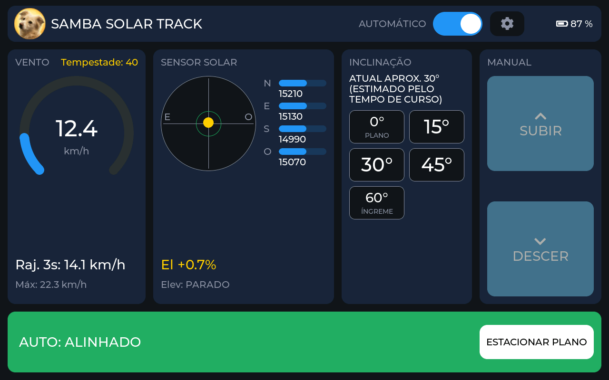
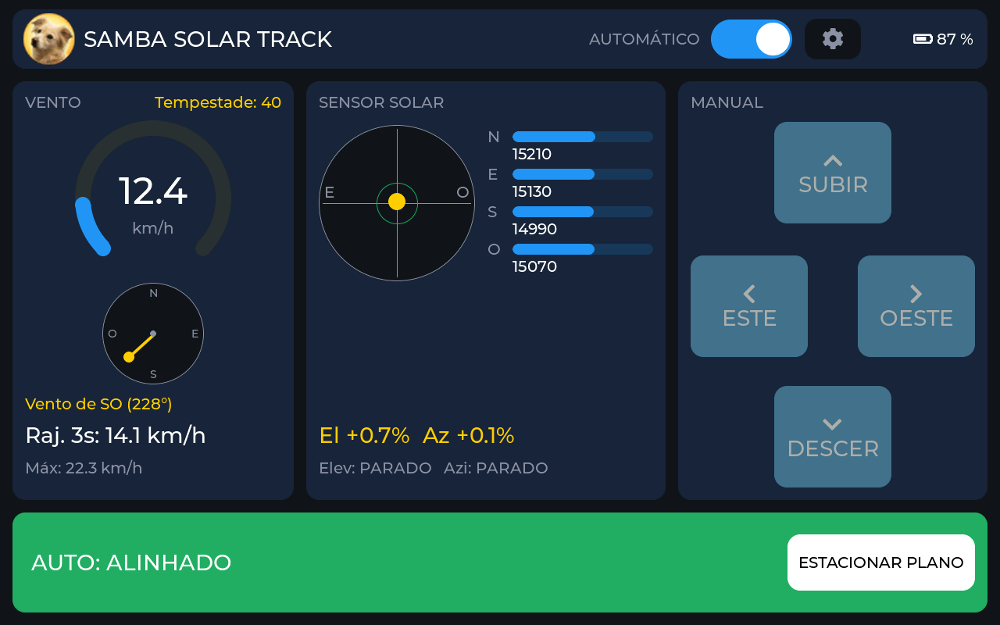
Também os restantes ecrãs (configuração, VALORES, rede, hora, acesso remoto, design, som, ecrã, firmware, calibração) usam o ecrã inteiro: estão concebidos para 1280 × 800 píxeis, com letra grande (por exemplo Fig. 24). O dashboard grande foi gravado no board de teste a 20.10.2026, e o aparelho fica depois acessível na rede. Ainda não está confirmado como fica lá, se os dedos acertam nas teclas e se funciona com fluidez; os restantes ecrãs ampliados foram apenas compilados no computador. As imagens aqui foram geradas pela ferramenta de capturas de ecrã a partir do código real da interface.
Idioma do ecrã (em preparação, gerado no computador, não verificado no aparelho)
O ecrã existe em sete idiomas: inglês, alemão, francês, espanhol, neerlandês, português e polaco. De fábrica é inglês. Por isso, no primeiríssimo arranque aparece primeiro a escolha do idioma (Fig. 13h), ainda antes da configuração. As teclas mostram o nome do idioma no próprio idioma, por exemplo PORTUGUÊS ou FRANÇAIS, para que você encontre o seu idioma mesmo que não entenda o que está selecionado.
- Escolher o idiomaToque no seu idioma. Esperado: a tecla fica azul com um visto, e todos os textos mudam imediatamente para esse idioma.
- ContinuarNo primeiro arranque, toque na tecla verde CONTINUAR (em inglês: NEXT). Esperado: a configuração aparece no idioma escolhido. A escolha fica guardada, mesmo depois de um reinício.
- Alterar mais tardeAbra a configuração (roda dentada no dashboard) e toque, em cima à direita, na tecla com o nome do idioma, por exemplo PORTUGUÊS .... Esperado: aparece a escolha do idioma; depois da escolha, VOLTAR leva de novo à configuração. O controlador continua a funcionar sem interrupção, incluindo a proteção contra tempestade.
As traduções foram criadas automaticamente pelo Claude a 28.10.2026; nenhum falante nativo as verificou (pressuposto). Se um aparelho já tiver uma firmware mais antiga e estiver configurado, fica em alemão depois da atualização. As mensagens do registo (log) ficam sempre em alemão. A interface web mostra o mesmo idioma que o aparelho; aí também pode escolhê-lo em CONFIGURAÇÃO (Fig. 23c). Este manual existe igualmente nos sete idiomas, como página e como PDF; o idioma muda-se em cima, no índice. A versão de referência é a alemã; também as restantes versões do manual são traduzidas automaticamente e não foram verificadas por falantes nativos (pressuposto).
Sons do altifalante (em preparação, ouvidos no board de teste)
O board de 10,1 polegadas tem um altifalante integrado. A firmware iniciada usa-o para sons. No board de teste, os sons ouvem-se desde 20.10.2026 (firmware 0.4.6); os níveis de volume e os sons de alarme ainda não foram verificados individualmente. O que aqui está descreve o que a firmware contém para isso.
| Som | Quando | Com que frequência |
|---|---|---|
| Confirmação: um bipe curto e agudo | a cada toque numa tecla ou num interruptor do ecrã | uma vez por toque; pode ser desligado |
| Falha de um módulo E/S: três sons curtos e agudos | o módulo das saídas de comutação na placa não responde | imediatamente, depois a cada 20 segundos |
| Tempestade: três vezes agudo-grave | a proteção contra tempestade pôs o módulo na posição plana | imediatamente, depois a cada minuto |
| Erro de atuador: dois sons longos | um atuador não atingiu o seu limite a tempo | imediatamente, depois a cada 30 segundos |
| Anemómetro em falha: agudo, depois grave | o anemómetro deixou de responder; não há proteção contra tempestade | imediatamente, depois a cada 2 minutos |
Os sons de alarme soam enquanto a situação durar. Se houver várias ao mesmo tempo, ouve-se apenas a mais importante (pela ordem da tabela). Um som de alarme tem sempre prioridade sobre o bipe de confirmação. Enquanto a configuração não estiver concluída, não há sons de alarme.
Ajustar: na configuração, a tecla SOM … leva a um ecrã próprio. Aí liga ou desliga os sons de confirmação e ajusta o volume com as teclas − e + em dez níveis. Esperado: após cada alteração do volume soa um breve som de teste no novo nível; o ajuste aplica-se de imediato e mantém-se depois de desligar. De fábrica, os sons de confirmação estão ligados e o volume está no nível 7.
Para que uma tempestade ou um erro não passe despercebido, os sons de alarme soam pelo menos no nível 7, mesmo que você defina um volume mais baixo. Mais alto do que o nível 10 não é possível: este limite está fixo, para que a fonte de alimentação e o fusível da placa não fiquem sobrecarregados mesmo com o som de alarme no máximo e a bateria a carregar. Se os níveis são bem audíveis no aparelho real e quanta corrente o altifalante realmente consome será medido logo que o board esteja disponível; até lá, o limite é um pressuposto.
Repouso e detetor de movimento (em preparação, não verificado no aparelho)
O board de 10,1 polegadas tem uma câmara integrada. A firmware iniciada usa-a como detetor de movimento: se durante algum tempo ninguém estiver à frente do ecrã, este mostra um protetor de ecrã ou desliga a iluminação. Quando alguém se aproxima do ecrã, este volta a acender-se sozinho. Até agora isto foi apenas compilado e testado no computador; ainda não foi verificado se a câmara deteta movimento de forma fiável no aparelho.
A firmware analisa as imagens da câmara apenas na memória de trabalho, para detetar movimento. Não guarda nenhuma imagem, não mostra nenhuma e não envia nenhuma pela rede, nem mesmo para a interface web. De cada imagem resta apenas o brilho médio de pequenos campos.
O que acontece:
- Após o tempo de espera definido sem toque e sem movimento à frente do ecrã, aparece o protetor de ecrã (Fig. 13e): uma superfície escura com o logótipo, a hora, o estado da faixa de estado na respetiva cor e o vento. O texto muda de lugar a cada 20 segundos, a luz está atenuada. Ou então o ecrã apaga-se completamente, se você o configurar assim.
- Acordar: movimento à frente do ecrã ou um toque. O toque que acorda o ecrã não aciona nada: pode, portanto, tocar em qualquer ponto sem premir uma tecla por engano. Só depois de levantar o dedo é que o toque seguinte tem efeito.
- Em caso de perigo, o ecrã fica ligado: com tempestade, falha do anemómetro, erro de atuador e falha de um módulo E/S, o ecrã acende-se e fica aceso enquanto a situação durar.
- Em repouso, o controlador continua a funcionar normalmente, incluindo a proteção contra tempestade.
- No escuro (divisão sem luz), a câmara não deteta movimento; nesse caso, só um toque acorda o ecrã. Se ficar claro de repente, por exemplo porque alguém acende a luz ou se põe mesmo à frente da câmara, o ecrã também acorda. Quem estiver completamente imóvel deixa de ser detetado como movimento após poucos segundos.
Ajustar:
- Abrir o ecrãAbra a configuração (roda dentada no dashboard) e toque em ECRÃ … (Fig. 13d). Esperado: aparece o ecrã ECRÃ.
- Escolher o modoToque em SEMPRE LIGADO, PROTETOR DE ECRÃ ou ECRÃ APAGADO. Esperado: a tecla escolhida fica azul com moldura amarela. Com SEMPRE LIGADO, o tempo de espera e o detetor de movimento não têm efeito e estão bloqueados.
- Definir o tempo de esperaCom − e + escolhe 1, 2, 3, 5, 10, 15, 20, 30, 45 ou 60 minutos. Esperado: o número no centro muda.
- Detetor de movimentoCom o interruptor liga ou desliga o detetor de movimento. Se estiver desligado, só um toque acorda o ecrã. Esperado: ao lado aparece «SENSOR MOV. LIGADO» ou «SENSOR MOV. DESLIGADO», e por baixo «Câmara pronta.». Se aparecer a laranja «Câmara indisponível», a firmware não encontrou a câmara; nesse caso, só um toque acorda o ecrã.
- Verificar o detetor de movimentoPor baixo, uma linha mostra continuamente o que a câmara vê: imagens por segundo, brilho (0 a 255) e quantos campos se estão a mover, por exemplo «5 img/s, brilho 92, movimento 412 (limiar 96)». Acene a cerca de um metro de distância à frente do ecrã. Esperado: o número a seguir a «movimento» sobe acima de 96 e a linha fica amarela; esse movimento acordaria então o ecrã. Se aparecer «muito escuro», a divisão está demasiado escura para a câmara; se aparecer «Câmara inativa», está escolhido SEMPRE LIGADO ou o detetor de movimento está desligado. Anote os valores caso o acordar não funcione: ajudam no ajuste.
- Bateria instaladaCom o interruptor BATERIA INSTALADA mostra ou oculta o nível da bateria no canto superior direito do dashboard (capítulo 7). Esperado: ao lado aparece «BATERIA INSTALADA» ou «SEM BATERIA»; no dashboard a indicação aparece ou desaparece, e a roda dentada e AUTOMÁTICO deslocam-se em conformidade.
- VoltarToque em VOLTAR. Esperado: a configuração volta a aparecer. Tudo se aplica de imediato e mantém-se depois de desligar; não é necessário reiniciar.
De fábrica, o repouso está em protetor de ecrã após 5 minutos, com o detetor de movimento ligado (proposta, ainda não definitiva). À distância (interface web, ioBroker) isto não pode ser ajustado.
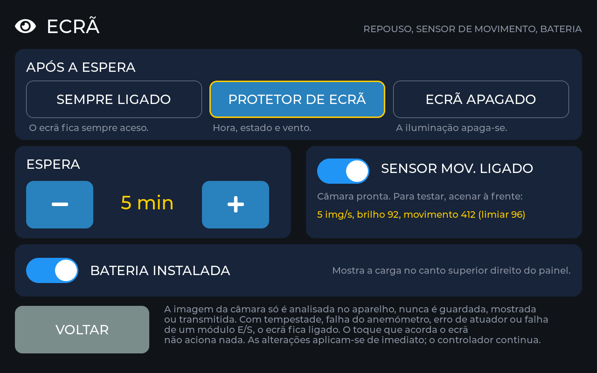
No board de teste (21.10.2026), o protetor de ecrã aparece e um toque acorda o ecrã; o movimento ainda não o acorda. Além disso, ao gravar uma nova firmware pela rede, o aparelho reiniciava imediatamente; por isso, a próxima firmware para a câmara antes de escrever. Grave essa firmware uma vez por USB (Gravar a firmware pela primeira vez); depois volta a funcionar pela rede. A próxima firmware determina também sozinha em que parte dos dados de imagem está o brilho e mostra os valores medidos da câmara no ecrã ECRÃ (passo «Verificar o detetor de movimento»). Continua em aberto se a câmara é encontrada, quão fiável é a deteção de movimento (distância, luz, falsos alarmes, por exemplo por luz a tremeluzir ou animais), se o ecrã se mantém estável com a câmara em funcionamento e se o brilho atenuado do protetor de ecrã é adequado. Os limiares de deteção são estimados (pressuposto) e serão ajustados após o teste.
Nova firmware da Internet (em preparação, não verificado no aparelho)
A firmware do board de 10,1 polegadas pode verificar sozinha se existe uma firmware mais recente e, a seu pedido, instalá-la a partir da Internet. Também isto foi até agora apenas compilado e testado no computador. O que aqui está descreve o que a firmware contém para isso.
Para que o aparelho aceite uma nova firmware, esta tem de estar assinada com a chave do projeto (assinatura). A chave atual está registada desde a firmware 0.4.7. A firmware mais antiga (até 0.4.6) conhece apenas uma chave anterior, que já não é usada: um aparelho com essa firmware nunca encontra uma nova versão pela Internet. Nesse caso, grave a 0.4.7 uma vez pela interface web (CONFIGURAÇÃO, atualização de firmware) ou, como acima, pelo cabo USB; depois disso continua pela Internet. Só com as versões 0.4.7 e 0.4.8 se vai testar se a verificação e a instalação no aparelho decorrem como aqui descrito. Se a verificação indicar um erro (por exemplo «sem conexão à fonte de releases»), a tecla INSTALAR fica bloqueada.
O que o aparelho faz sozinho: com o Wi-Fi ligado, verifica uma vez por dia (a primeira verificação 2 a 20 minutos após a ligação). Para isso descarrega um pequeno ficheiro, o manifesto, através de uma ligação cifrada (HTTPS) da fonte de releases do projeto em https://firmware.samba-solar.de/. Nunca instala sozinho. Se houver uma versão mais recente, na barra superior aparece em pequeno, a amarelo, NOVA FIRMWARE e por baixo o número. Não há nenhum som associado.
Ver e instalar:
- Abrir o ecrãRoda dentada em cima à direita e depois, na configuração, a tecla FIRMWARE …. A tecla só existe depois de a configuração ter sido guardada uma vez. Esperado: o ecrã FIRMWARE mostra a versão em execução com a data de compilação, quando foi a última verificação e o resultado.
- Verificar agora (opcional)Tecla VERIFICAR AGORA. Isto é possível no máximo uma vez por minuto e só com o Wi-Fi ligado. Esperado: após poucos segundos aparece «ATUALIZADO», «NOVA FIRMWARE DISPONÍVEL» com número, data e texto curto, ou «VERIFICAÇÃO FALHOU» com o motivo.
- InstalarTecla INSTALAR (só com «NOVA FIRMWARE DISPONÍVEL») e confirmar a pergunta com INSTALAR. Esperado: «A TRANSFERIR ...» com uma barra. O controlador continua a regular normalmente, incluindo a proteção contra tempestade. Com CANCELAR é possível terminar a transferência; nesse caso nada muda.
- Posição planaDepois da transferência, o aparelho verifica o ficheiro. Depois a elevação vai para a posição plana, como ao estacionar. Esperado: o ecrã FIRMWARE mostra «VAI PARA A POSIÇÃO PLANA ANTES DE ESCREVER», a barra de estado mostra o estacionamento e o módulo fica plano.
- Escrita e reinícioSó quando a elevação está plana o aparelho desliga todas as saídas e escreve a nova firmware. Esperado: por cima do ecrã aparece «ATUALIZAÇÃO DE FIRMWARE – A escrever a firmware verificada»; depois o controlador reinicia. Os ajustes mantêm-se.
- Depois do reinícioNão fazer nada e deixar o aparelho funcionar pelo menos dois minutos. Esperado: a nova versão aparece no ecrã FIRMWARE e o módulo fica, por agora, plano. Após dois minutos, a nova firmware confirma-se a si própria, logo que o ecrã e a placa funcionem e – só se o Wi-Fi estiver ligado – o aparelho se tenha ligado pelo menos uma vez ao Wi-Fi desde o reinício (o autoteste). Depois anula o estacionamento e volta à posição anterior: o automático volta a seguir o sol, ou um ângulo escolhido volta a ser atingido.
Antes de cada atualização, pela Internet ou pela interface web, a elevação vai para a posição plana. Assim o módulo fica plano se algo correr mal durante a atualização. Se a posição plana não for atingida, o aparelho não escreve nada e a firmware atual continua a funcionar; o motivo aparece no ecrã FIRMWARE e na interface web. Isto acontece em modo manual (ligar antes o AUTOMÁTICO), numa avaria, quando começa uma tempestade, quando alguém anula o estacionamento, ou quando o movimento demora mais do que o tempo máximo de curso mais cerca de meio minuto. Se antes não havia pedido de estacionamento, depois volta a valer a posição anterior. Se o aparelho voltar à firmware anterior após um autoteste falhado, também esta volta à posição anterior (pressuposto: ainda não experimentado no aparelho). Se ativar ou anular o estacionamento antes disso, vale a sua escolha.
A escrita demora, segundo uma estimativa, cerca de um minuto (pressuposto, ainda não medido). Durante este tempo, todos os atuadores estão parados e, em caso de tempestade, o módulo não é colocado na posição plana. Por isso, a instalação não começa enquanto a proteção contra tempestade estiver ativa ou um atuador estiver em movimento. Se surgir uma tempestade durante a transferência ou entre a transferência e a escrita, o aparelho cancela e rejeita o ficheiro transferido, mesmo que a tempestade passe depressa; depois disso, você tem de confirmar novamente a instalação. Instale de preferência com tempo calmo.
Se a nova firmware bloquear ou reiniciar nos primeiros dois minutos, o aparelho volta sozinho a arrancar a firmware anterior. O mesmo acontece se ela não passar o autoteste a tempo (por exemplo porque o ecrã ou a placa não respondem, ou porque nunca se liga ao Wi-Fi): nesse caso, desliga primeiro todas as saídas e arranca a firmware anterior. O prazo é de 12 minutos após o reinício; com o Wi-Fi ligado, 30 minutos, para que um router brevemente em falha não leve logo à reversão. Com o Wi-Fi desligado, este não conta para o autoteste. Ambos os prazos são valores propostos, ainda não testados no aparelho. Enquanto a nova firmware aguarda o autoteste, em cima, entre o nome do produto e AUTOMÁTICO, aparece uma faixa laranja por cima de todos os ecrãs: o tempo até à verificação, depois «AUTOTESTE FALHOU», o estado das condições (SAÍDAS e WI-FI: OK, FALTA ou DESL.) e o tempo até à reversão. Sem a placa RearCircuitBoard_10 aparece «SEM PLACA: ATIVAR SIMULAÇÃO» (Fig. 13c). O motivo da falha do autoteste aparece também no log. Após uma reversão, o ecrã indica «ATUALIZAÇÃO REVERTIDA»; toque em OK.
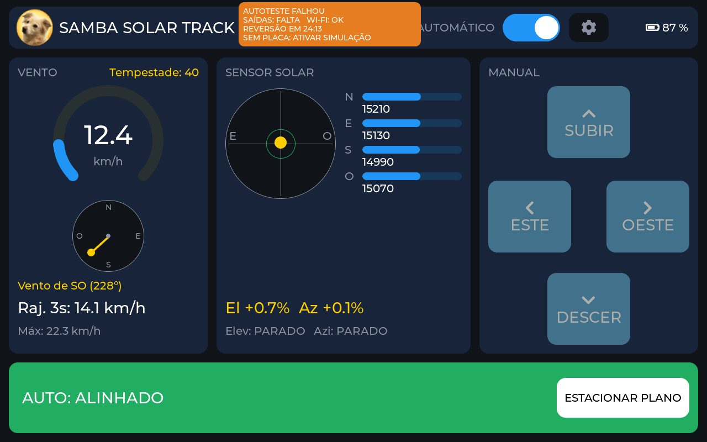
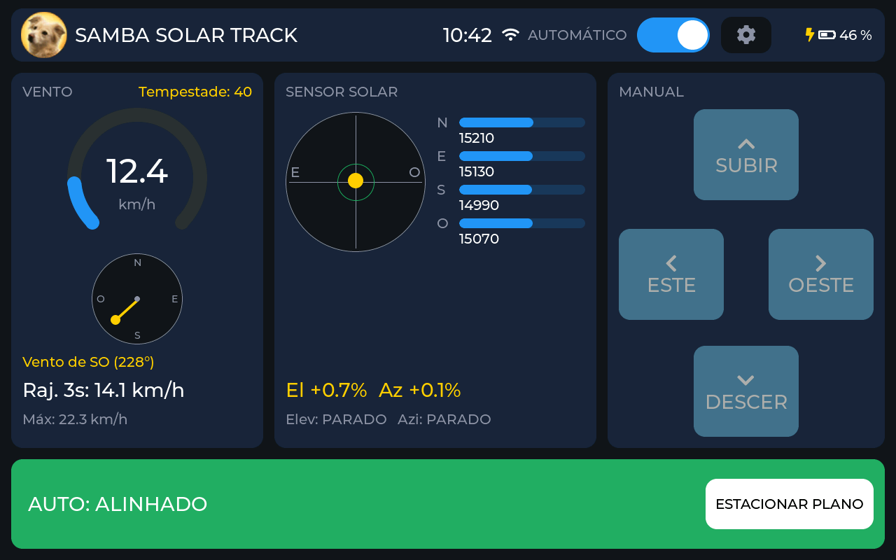
A mesma versão deixa depois de ser oferecida na barra superior, mas pode mesmo assim ser instalada mais uma vez no ecrã FIRMWARE. No board de 10,1 polegadas, isto aplica-se também a uma atualização pela interface web.
À distância: na interface web, em CONFIGURAÇÃO, está o bloco «Firmware da Internet» com as mesmas indicações e as teclas VERIFICAR AGORA e INSTALAR. Só um dispositivo com sessão iniciada (token) pode operar, e o interruptor «Comando remoto bloqueado» no ecrã bloqueia ambas. A verificação diária continua mesmo com o comando remoto bloqueado.
Ao verificar, o aparelho envia apenas um pedido simples com a sua versão de firmware; nenhum identificador, nenhuma senha, nenhum token. A página do projeto vê, como qualquer página da Internet, o endereço IP público da sua ligação à Internet. Não existe um interruptor que desligue a verificação; sem Wi-Fi, ela não acontece.
Inclinação por comando: ir para um ângulo fixo (em preparação, não verificado no aparelho)
Em vez de seguir o sol, a elevação pode, a seu comando, ir para um ângulo fixo, por exemplo um plano no verão ou um íngreme no inverno. Depois disso, o automático fica em pausa até você anular o pedido. Isto existe apenas na versão de 10 polegadas e só no modo de operação SÓ VERTICAL. Com dois eixos (vertical + horizontal), o cartão INCLINAÇÃO, os ângulos fixos, os tempos de curso e a estrutura estão ocultos. Também esta função foi até agora apenas compilada e testada no computador; as imagens foram geradas pela ferramenta de capturas de ecrã a partir do código real da interface.
De fábrica não há sensor de inclinação. A firmware calcula a inclinação a partir do tempo durante o qual ligou efetivamente o atuador e dos tempos de curso calibrados. Por isso, o ecrã mostra sempre «APROX. 30°» ou «DESCONHECIDA», nunca um número exato. A precisão é descrita mais abaixo; todas as indicações a esse respeito são pressupostos até haver medições no rack. Com a leitura Hall é mais preciso: a firmware conta então os impulsos do atuador e mostra a inclinação sem «APROX.».
Que ângulos existem: sempre 0° (plano), 30° e 60° (íngreme), mais até dois ângulos fixos que você define em VALORES (graus inteiros de 1 a 59, não 30, não duas vezes o mesmo; 0 significa desligado). As teclas estão sempre ordenadas pelo ângulo. Enquanto o tempo de curso não estiver calibrado, só 0° e 60° funcionam; os outros ângulos aparecem a cinzento.
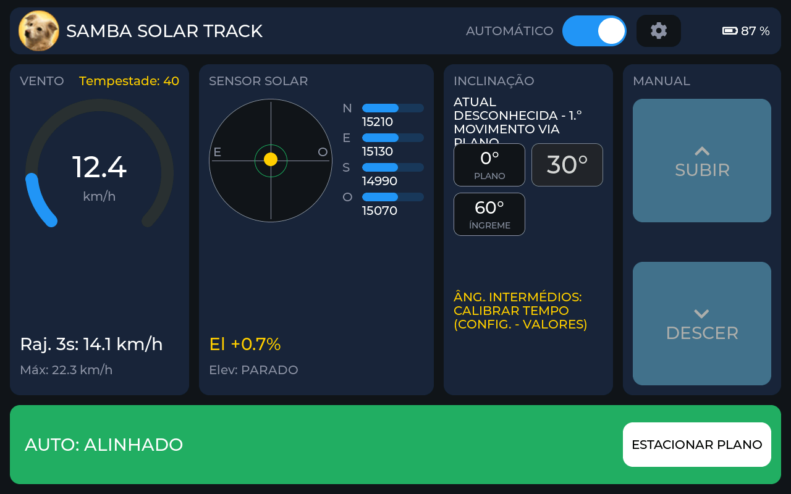
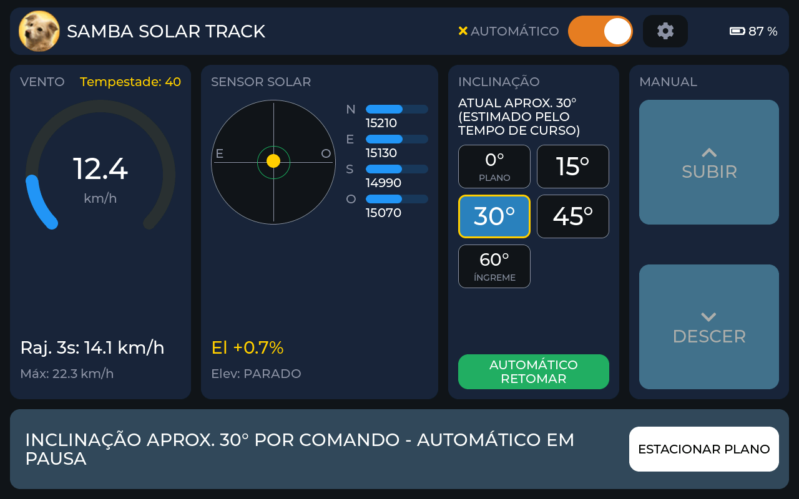
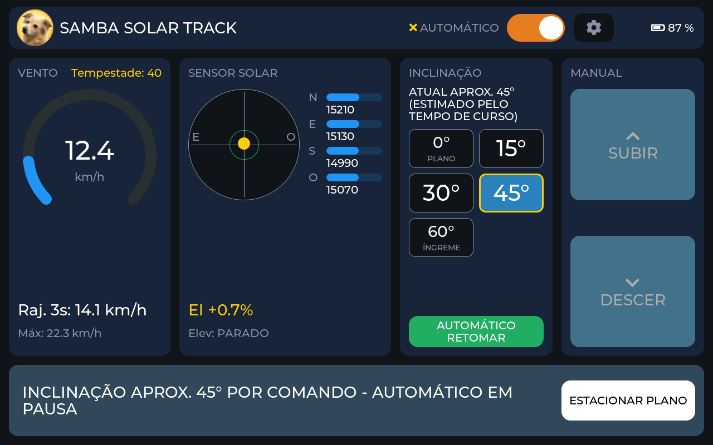
| Indicação no cartão INCLINAÇÃO | Significado |
|---|---|
| ATUAL DESCONHECIDA - 1.º MOVIMENTO VIA PLANO | A posição não é conhecida desde a ligação, ou a estimativa é demasiado incerta (mais de 6°). |
| ATUAL APROX. 31° (ESTIMADO PELO TEMPO DE CURSO) | Inclinação estimada. |
| Tecla de ângulo azul com moldura amarela | Esta inclinação por comando está ativa, também durante tempestade, estacionamento ou modo manual. Por baixo está a tecla RETOMAR AUTOMÁTICO. |
| Interruptor AUTOMÁTICO laranja, com uma cruz amarela antes | O automático está ligado, mas em pausa, porque existe uma inclinação por comando. Com RETOMAR AUTOMÁTICO, o interruptor volta a ficar azul e a cruz desaparece. |
| INDISPONÍVEL | Sem configuração concluída não há inclinação por comando; as teclas estão bloqueadas. |
Ir para um ângulo:
- Ler a posiçãoOlhe para o cartão INCLINAÇÃO no dashboard (Fig. 14 ou 15). Esperado: em cima aparece «ATUAL APROX. 31° (ESTIMADO PELO TEMPO DE CURSO)» ou «ATUAL DESCONHECIDA - 1.º MOVIMENTO VIA PLANO».
- Escolher o ânguloToque no cartão no ângulo desejado. Esperado: a tecla fica azul com moldura amarela, por baixo aparece RETOMAR AUTOMÁTICO, o interruptor AUTOMÁTICO em cima fica laranja com uma cruz amarela antes, e a faixa de estado mostra o decurso (passo seguinte).
- AcompanharSe a posição for desconhecida ou demasiado incerta, a elevação move-se primeiro para plano até ao limite, o movimento de referência. Sem fim de curso, este dura todo o tempo máximo de curso (no Samba-Solar-Rack 2.0-E Plus, 90 segundos), mesmo que o quadro já esteja parado há muito. Segue-se o movimento para o ângulo. Esperado: sucessivamente «INCLINAÇÃO 45°: REFERÊNCIA PARA POSIÇÃO PLANA», «INCLINAÇÃO 45°: MOVER MAIS ÍNGREME, APROX. 12°» e, por fim, «INCLINAÇÃO APROX. 45° POR COMANDO - AUTOMÁTICO EM PAUSA» (Fig. 17). Depois disso não há reajuste.
- Voltar ao automáticoToque no cartão em RETOMAR AUTOMÁTICO. Esperado: a faixa de estado volta a mostrar AUTO, o interruptor AUTOMÁTICO volta a estar azul sem cruz, e o seguimento recomeça.
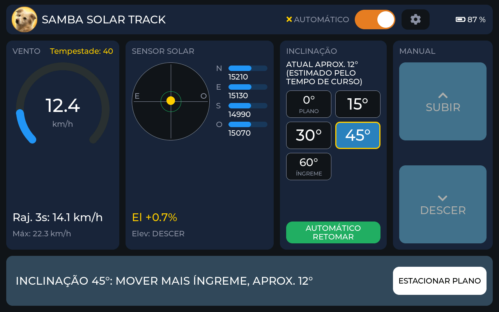
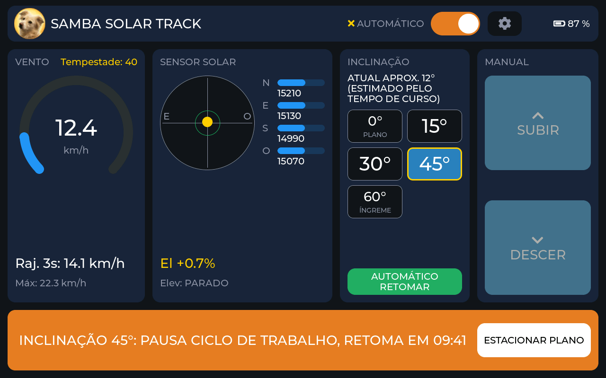
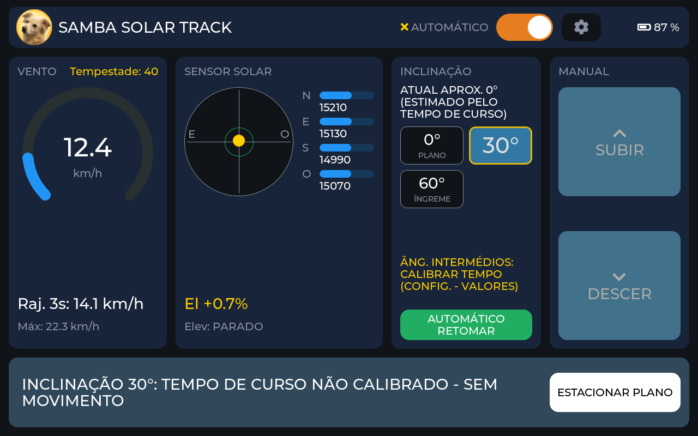
O que tem prioridade (a hierarquia do controlador): configuração em falta, falha de um módulo E/S, tempestade, erro de atuador, modo manual, estacionamento por comando e falha do anemómetro têm prioridade. Só depois vem a inclinação por comando, que, por sua vez, tem prioridade sobre erros de sensor, noite e automático. A inclinação por comando aplica-se, portanto, também de noite e com o sensor solar em falha.
| Situação | O que acontece |
|---|---|
| Tempestade, falha do anemómetro | Têm prioridade: a elevação move-se para plano. Depois volta sozinha ao ângulo comandado. O cartão indica «PROTEÇÃO TEMPESTADE TEM PRIORIDADE - DEPOIS O ÂNGULO É ATINGIDO» (Fig. 22). |
| ESTACIONAR PLANO | Continua a ser uma tecla própria e tem prioridade («ESTACIONAR TEM PRIORIDADE …»). Depois de anular o estacionamento, a instalação volta ao ângulo. |
| Modo manual (automático desligado) | A inclinação por comando fica suspensa; atua logo que o automático volte a estar ligado («ATUA LOGO QUE O AUTOMÁTICO ESTEJA LIGADO»). |
| Falha | Tem prioridade («FALHA TEM PRIORIDADE»), nada se move. |
| Falha de energia, reinício | A inclinação comandada fica guardada, tal como o pedido de estacionamento. Depois de ligar, porém, a posição é desconhecida: o primeiro movimento para um ângulo intermédio começa com um movimento de referência. |
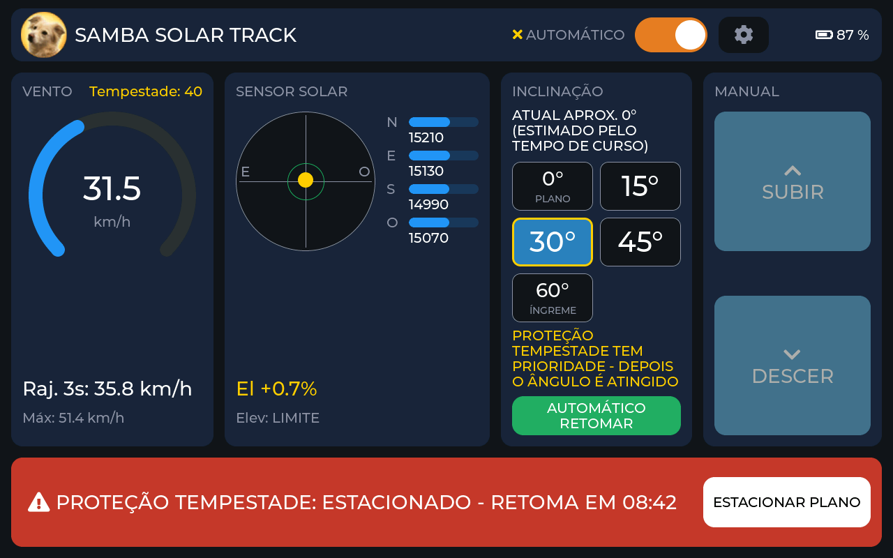
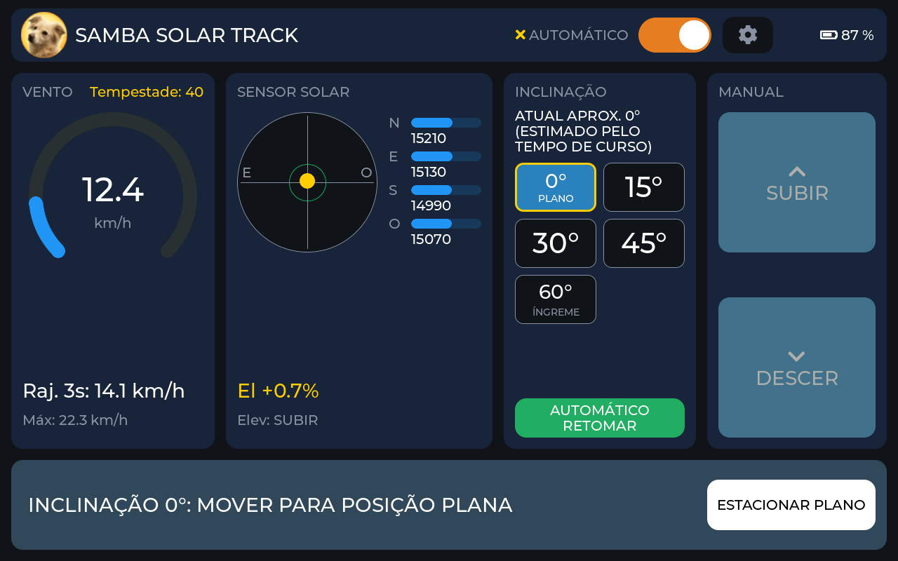
No browser: na versão de 10 polegadas, a interface web mostra a mesma disposição que o ecrã (Fig. 23a e 23b): num ecrã largo (PC, tablet, telemóvel na horizontal), a barra superior, os cartões VENTO (com rosa dos ventos, se estiver configurado um anemómetro com direção), SENSOR SOLAR, INCLINAÇÃO e MANUAL com as mesmas larguras e, por baixo, a faixa de estado; no telemóvel, uns por baixo dos outros. No cartão INCLINAÇÃO estão as mesmas teclas e o texto «Atual aprox. 31° (estimado pelo tempo de curso)». Tal como no ecrã, o interruptor AUTOMÁTICO fica laranja com uma cruz amarela à frente enquanto uma inclinação por comando pausa o automático, e no canto superior direito aparece a bateria com o nível de carga e, durante a carga, o raio amarelo; no telemóvel a bateria aparece pequena por baixo do nome (Fig. 23c). Em CONFIGURAÇÃO também escolhe o idioma: tocar muda-o ao mesmo tempo no ecrã e no navegador. Só um dispositivo com sessão iniciada pode operar, e apenas se o comando remoto não estiver bloqueado. A calibração existe apenas no ecrã. As imagens vêm da ferramenta de pré-visualização da interface web (python3 tools/web_vorschau.py) com um aparelho simulado, não do tracker real.
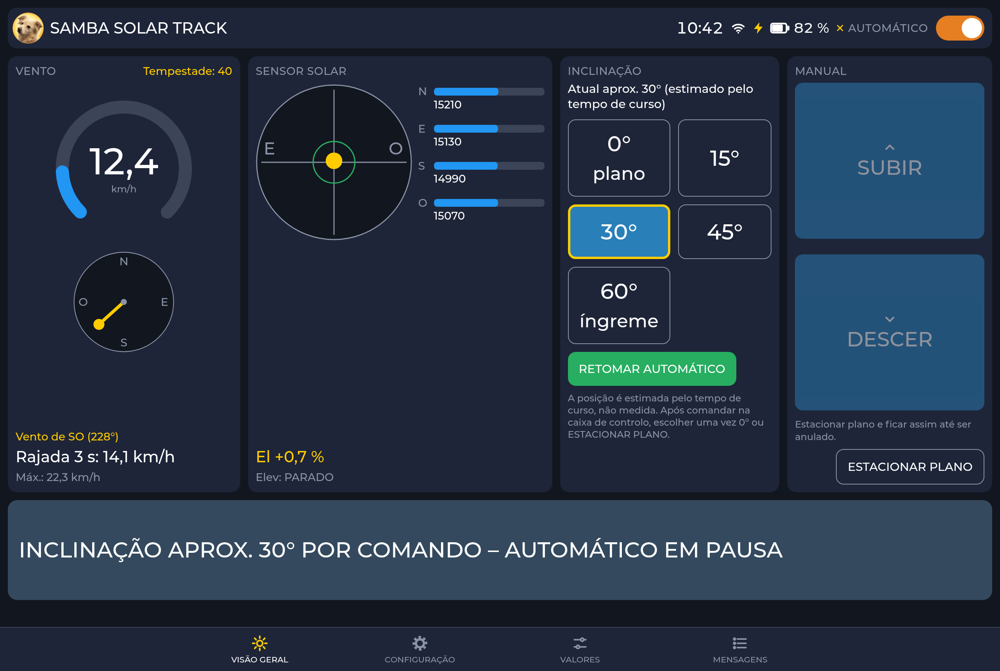
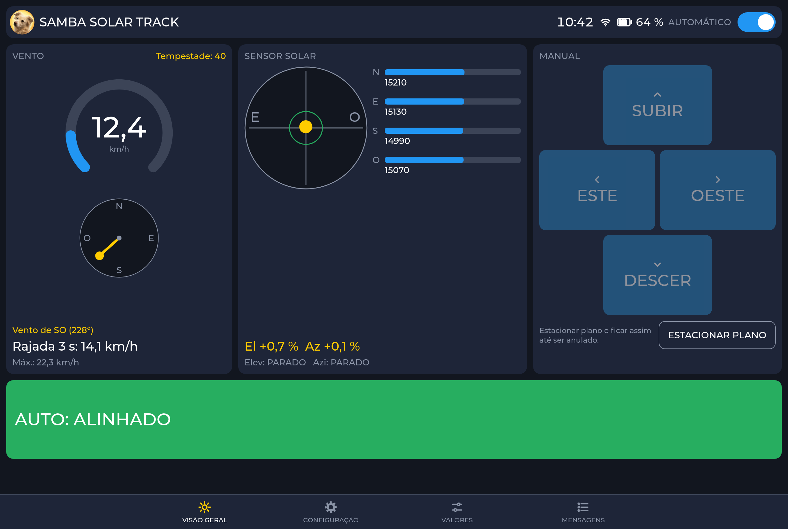
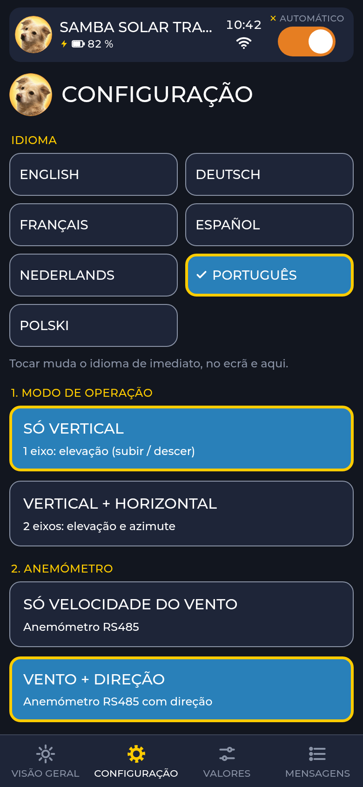
Definir ângulos fixos, tempos de curso e estrutura
Os valores estão na configuração, em VALORES: os dois ângulos fixos no grupo REGULAÇÃO; os tempos de curso, a estrutura, a perda de arranque e os três valores da leitura Hall no grupo ENTRADA EM SERVIÇO. Os valores do grupo ENTRADA EM SERVIÇO só podem ser alterados enquanto nenhum atuador estiver em movimento.
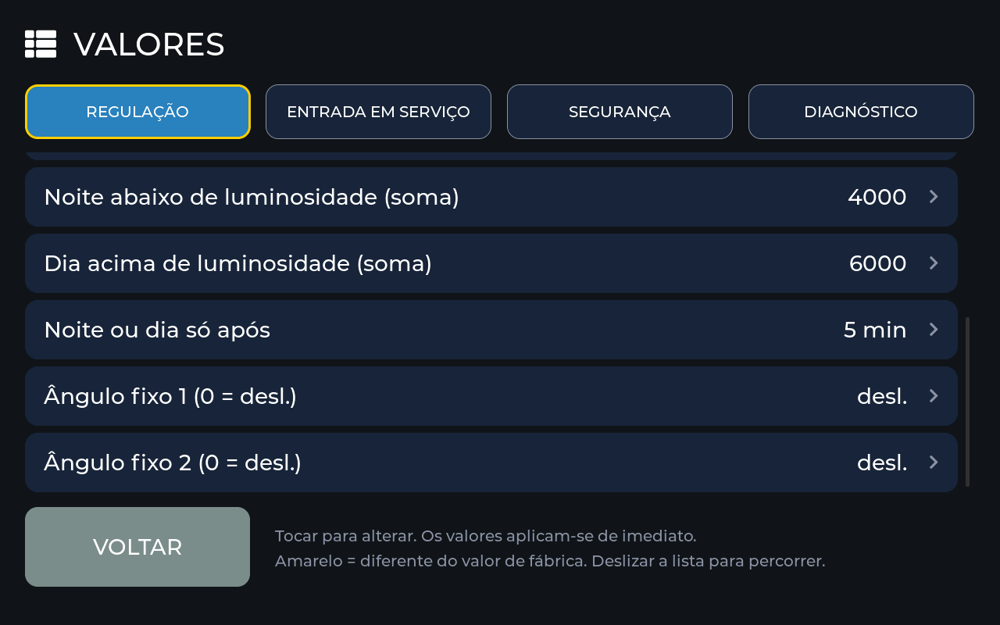
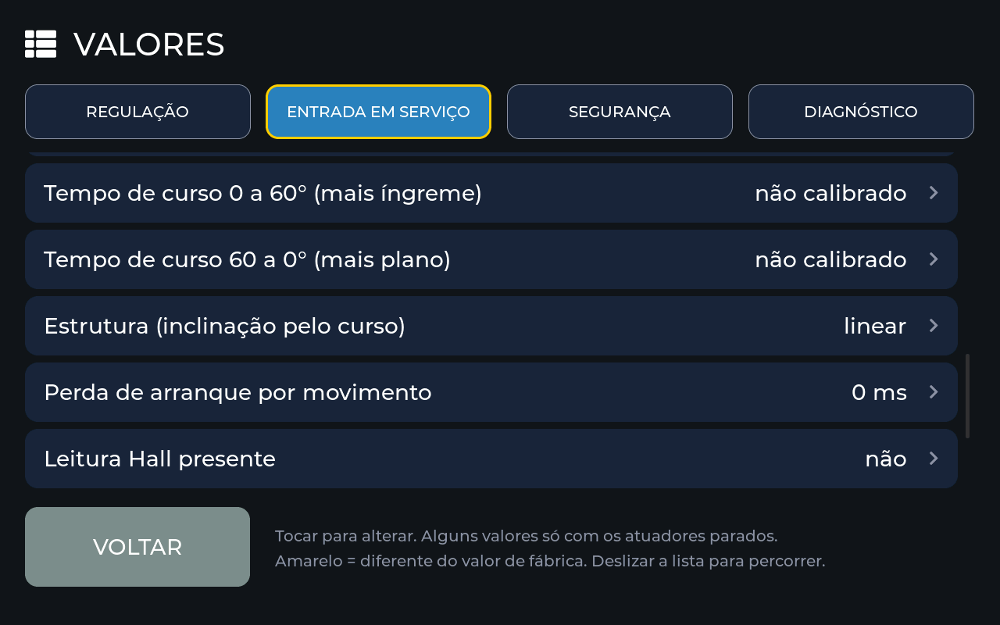
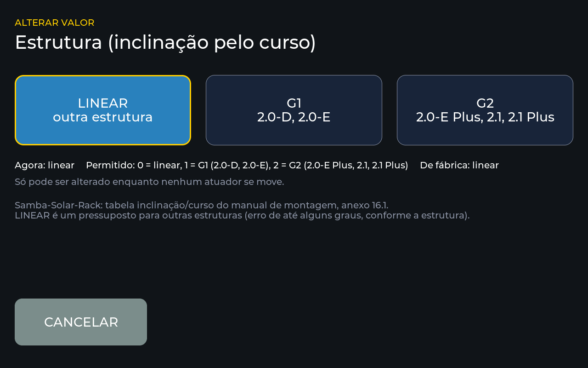
| Valor | De fábrica | Permitido | Para quê |
|---|---|---|---|
| Tempo de curso 0 a 60° (mais íngreme) | não calibrado | 10 a 300 s | Tempo para todo o percurso de plano a íngreme. De preferência, calibrar. |
| Tempo de curso 60 a 0° (mais plano) | não calibrado | 10 a 300 s | Tempo para o percurso de regresso. De preferência, calibrar. |
| Estrutura (inclinação pelo curso) | linear | linear, G1 (2.0-D, 2.0-E), G2 (2.0-E Plus, 2.1, 2.1 Plus) | Converte o curso do atuador em graus (tabela do manual de montagem, anexo 16.1). |
| Perda de arranque por movimento | 0 ms | 0 a 3000 ms | Parte de cada movimento em que o quadro ainda não se move. |
| Ângulo fixo 1 e 2 | desligado | 1 a 59°, não 30, sem repetição; 0 = desligado | Teclas adicionais no cartão INCLINAÇÃO. Aplica-se de imediato. |
Os tempos de curso só são válidos se forem inferiores a 0,9 × o tempo máximo de curso da elevação. Se encurtar o tempo máximo de curso, passam a contar como não calibrados até os valores voltarem a ser compatíveis. «LINEAR» é um pressuposto para outras estruturas; numa estrutura G2 estaria errado em até cerca de 2,6°. Se alterar um ângulo fixo que esteja a ser comandado nesse momento, ou o desligar, a inclinação por comando mantém-se; RETOMAR AUTOMÁTICO anula-a. Para o Samba-Solar-Rack 2.0-E Plus (controlador síncrono HAKIWO SCN4, sem fins de curso no tracker) aplica-se ainda: «Fim de curso elevação instalado» = não, tempo máximo de curso da elevação 90 s. Introduzido à mão, no 2.0-E Plus seriam cerca de 75 s segundo o manual de montagem; calibrar é mais preciso.
Calibrar o tempo de curso
Uma vez na entrada em serviço e, se possível, de novo no outono e na primavera: a temperatura altera a velocidade dos atuadores (pressuposto, não medido). Local: Configuração → VALORES → ENTRADA EM SERVIÇO → CALIBRAR TEMPO DE CURSO (última linha; deslizar a lista para baixo, Fig. 34; com leitura Hall, a tecla chama-se CALIBRAR: TEMPO DE CURSO E PASSOS HALL). O controlador e a proteção contra tempestade continuam a funcionar durante o processo.
- PrepararLibertar a zona de rotação: ninguém junto da estrutura, nada no caminho. Abrir o ecrã CALIBRAR TEMPO DE CURSO. Se o automático estiver LIGADO, toque em AUTOMÁTICO DESL.. Esperado: «PASSO 1 DE 4: PREPARAR» (Fig. 27); depois INICIAR pode ser escolhido.
- INICIARToque em INICIAR. Esperado: «MOVER PARA PLANO ATÉ AO LIMITE» (Fig. 28). Sem fim de curso, o contacto fica fechado durante todo o tempo máximo de curso, mesmo que o quadro já esteja parado há muito. Se o ciclo de trabalho não o permitir nesse momento, aparece «AGUARDA O CICLO DE TRABALHO» com o tempo restante.
- MEDIR SUBIDAToque em MEDIR SUBIDA. O tempo começa a contar (Fig. 29). Toque em CHEGOU logo que o quadro pare e o ruído do motor deixe de se ouvir (o atuador está então no seu próprio fim de curso). Esperado: «SUBIDA medida», com o tempo à décima de segundo. Com fins de curso no tracker e com leitura Hall, a medição termina sozinha.
- PausaRecomenda-se uma pausa de cerca de 15 minutos para que os atuadores arrefeçam (ciclo de trabalho; Fig. 30). A pausa não é imposta. Esperado: o ecrã mostra a recomendação e a tecla MEDIR DESCIDA.
- MEDIR DESCIDAToque em MEDIR DESCIDA e de novo em CHEGOU logo que o quadro esteja plano. Esperado: aparece o segundo tempo. Se o atuador parar a meio da medição devido a uma pausa do ciclo de trabalho, o ecrã mostra «PAUSA CICLO DE TRABALHO … NÃO chegou» (Fig. 31): nesse caso não toque; a medição continua depois sozinha.
- AceitarO ecrã mostra os dois tempos (Fig. 32). Toque em ACEITAR. Esperado: em VALORES aparecem os tempos em vez de «não calibrado»; no cartão INCLINAÇÃO todos os ângulos podem ser escolhidos.
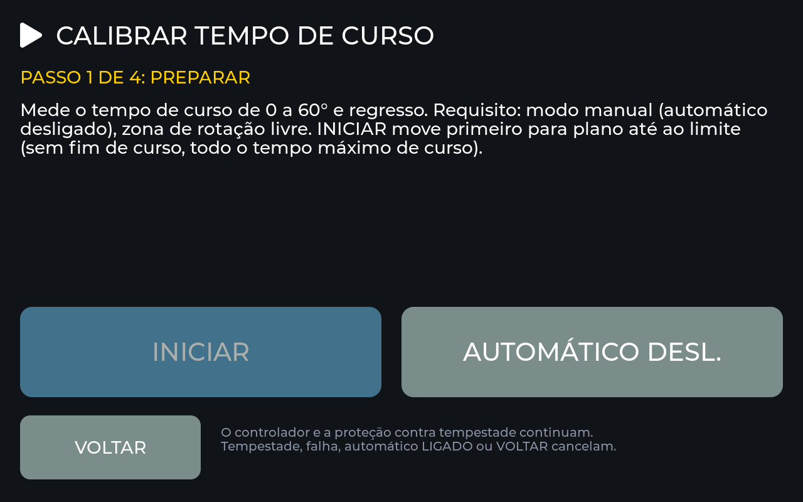
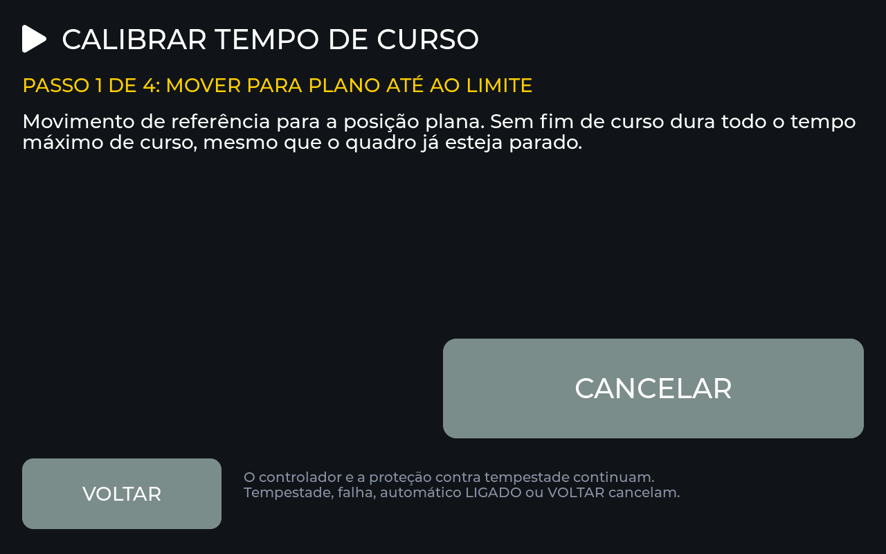
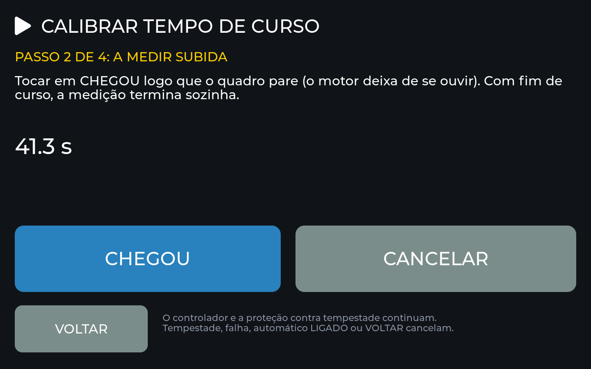
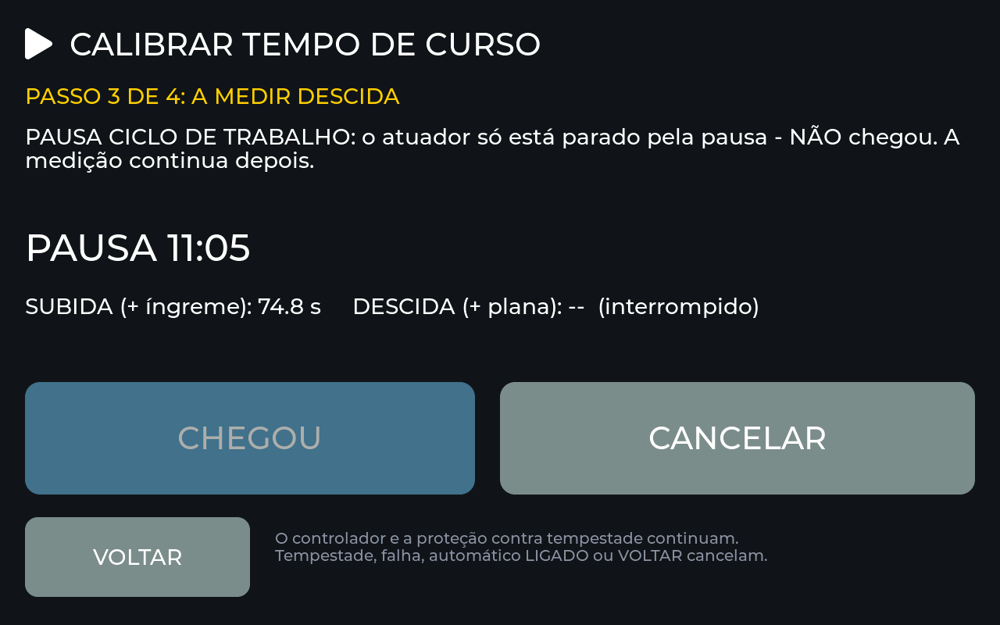
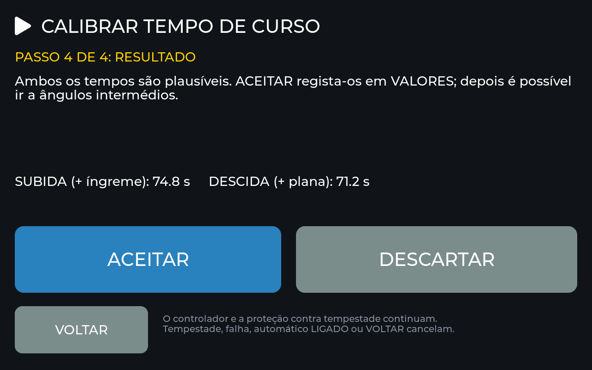
A firmware verifica a medição: cada tempo tem de durar pelo menos 10 segundos e ser inferior a 0,9 × o tempo máximo de curso, e SUBIDA e DESCIDA podem diferir no máximo por um fator de 2. Caso contrário, o motivo aparece a amarelo e nada é aceite (Fig. 33). Tempestade, uma falha, automático LIGADO ou VOLTAR cancelam a calibração. Enquanto você calibra, o aparelho recusa movimentos manuais à distância.
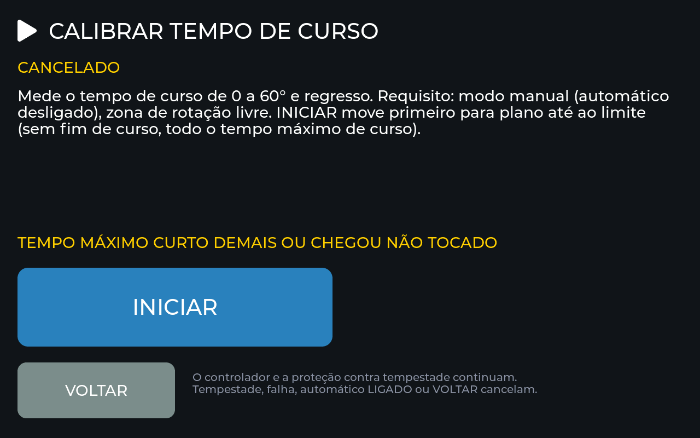
Qual é a precisão?
Todos os números desta tabela são pressupostos, não medições. Serão verificados no rack.
| Origem do desvio | Ordem de grandeza |
|---|---|
| Limites da mecânica | 0° ± 1°, 60° ± 1,5° (manual de montagem) |
| Tabela da estrutura G1/G2 | inferior a 0,1° |
| Velocidade após a calibração (carga, tensão) | cerca de ± 3 a 5 % do percurso, ± 1 a 1,5° a 30° |
| Temperatura (inverno face a calibração no verão) | até cerca de 3 a 6° a 30° |
| Arranque e inércia por movimento | até quase 1° por movimento |
Expectativa: um movimento a partir de uma referência ± 1 a ± 3°, no inverno com uma calibração do verão até cerca de ± 5°. Parado, a estimativa não se altera. Após um dia de automático com muitos movimentos curtos de seguimento, fica geralmente «DESCONHECIDA»; o primeiro movimento para um ângulo intermédio começa então com um movimento de referência. Com cada movimento cresce a incerteza; se for no máximo 3°, a elevação move-se diretamente, caso contrário primeiro para plano. Os valores fixos para isso (por movimento 0,3°, mais 8 % dos graus percorridos, tolerância de 1°, movimento mais curto 0,5 s, acréscimo de 2° após um reset a meio de um movimento) estão fixos na firmware e são igualmente pressupostos.
Se mover o módulo na caixa de comando (interruptor basculante, comando por rádio, teclas do controlador síncrono) ou com a manivela, a estimativa deixa de estar correta. Depois disso, escolha uma vez 0° ou ESTACIONAR PLANO, para que a firmware volte a ter uma referência. Com a leitura Hall ligada, ela conta os movimentos feitos através do controlador síncrono, desde que os respetivos impulsos cheguem.
Sem fins de curso no tracker, um limite considera-se atingido quando o contacto esteve fechado durante todo o tempo máximo de curso (limite por tempo de curso). Se nesse momento os atuadores não tinham tensão (a fonte de alimentação estava desligada e o board funcionava com a bateria, o fusível dos atuadores tinha disparado ou, com duas fontes, a dos atuadores estava desligada) ou se o controlador síncrono (por exemplo HAKIWO SCN4) cancelou o movimento sem aviso, esta referência não está correta, e a estimativa seguinte também não. Sem leitura Hall, a firmware não o consegue detetar; por isso nunca mostra mais do que «APROX.». Com leitura Hall deteta-o pela falta de impulsos.
Após um reinício sem perda de tensão (configuração guardada, atualização, falha do sistema), o firmware retoma a estimativa a partir de uma memória que sobrevive ao reinício; se um atuador estava em movimento no momento do reset, a estimativa fica 2° mais incerta. Que esta memória funcione no board é um pressuposto. Se os atuadores ficarem sem tensão durante um movimento (fonte de alimentação desligada e board a funcionar com a bateria, fusível dos atuadores disparado) ou se o controlador síncrono interromper o movimento, os contactos fecham mesmo assim; após o tempo máximo de curso, o firmware memoriza então um limite por tempo de curso errado e uma inclinação errada. Por isso, em caso de tempestade, falha do anemómetro e estacionamento, volta a mover para plano (ver abaixo). Se o atuador se move realmente é detetado pela leitura Hall, quando está instalada e ativada (também só verificado no computador). Na simulação, a função trabalha com atuadores simulados; a sua posição nunca é transferida para o funcionamento real.
[ 120.010][I][main ] Neigung auf Befehl: 45 Grad (vorher keine), Quelle Display [ 120.010][I][track ] Neigung 45 Grad: Bezugsfahrt noetig [ 210.020][I][elpos ] Bezug Flachstellung (Laufzeit-Endlage), Stellung war unbekannt [ 210.540][I][track ] Neigung 45 Grad: Zielfahrt STEILER von ca. 0.0 Grad, erwartet 55.1 s [ 266.160][I][track ] Neigung 45 Grad erreicht: ca. 45.0 Grad nach 55.6 s, Unsicherheit 3.9 Grad
As linhas são um exemplo no formato do firmware; os números foram calculados para o Rack 2.0-E Plus com estrutura G2 e 75 segundos de tempo de curso. A linha de estado a cada 5 segundos termina então com „| Neigung ca. 45 Grad (+-4), Ziel 45“ (inclinação aprox. 45 graus, alvo 45).
Com leitura Hall (mais precisa)
O que é? O atuador da elevação tem um sensor Hall: em cada rotação do seu motor emite impulsos curtos. A pequena placa HallTapBoard na caixa de comando capta estes impulsos no controlador síncrono (a leitura Hall) e transmite-os, através de optoacopladores e com isolamento galvânico, para a entrada de impulsos J22 do controlador (capítulo 6). O controlador conta-os com o seu contador de impulsos e sabe assim quanto o atuador se deslocou. Deixa de ter de estimar a inclinação a partir do tempo de curso. Isto só existe na versão de 10 polegadas e só no modo de operação SÓ VERTICAL. Só são contados os impulsos do atuador 1.
A avaliação só foi construída e testada no computador. A HallTapBoard é um projeto (0.3) e ainda não foi fabricada; ainda não está esclarecido se o controlador síncrono HAKIWO SCN4 tolera a leitura (capítulo 6). As imagens foram geradas pela ferramenta de capturas de ecrã a partir do código real da interface.
Sem ela, a inclinação por comando funciona como descrito acima: estimada a partir do tempo de curso, com „APROX.“ antes do número. Não precisa da leitura Hall para usar a inclinação por comando.
Ativar – passo a passo:
- LigarInstale e ligue a HallTapBoard (capítulo 6) e encaixe o seu cabo em J22 da placa RearCircuitBoard_10 (entrada de impulsos HALL). Esperado: No ecrã não se vê nada; na HallTapBoard acendem „24V“ (amarelo) e „5V OK“ (verde).
- AtivarNo ecrã: roda dentada → VALORES → ENTRADA EM SERVIÇO, deslize a lista até ao fim, toque em „Leitura Hall presente“ e escolha SIM (Fig. 34). Isto só é possível enquanto nenhum atuador estiver em movimento. Esperado: A linha mostra „sim“ a amarelo, porque o valor difere da predefinição. A tecla de baixo chama-se agora CALIBRAR: TEMPO DE CURSO E PASSOS HALL.
- CalibrarAutomático desligado (modo manual), depois abra CALIBRAR: TEMPO DE CURSO E PASSOS HALL. O ecrã continua a chamar-se CALIBRAR TEMPO DE CURSO. Proceda como na calibração do tempo de curso acima: INICIAR, MEDIR SUBIDA, pausa, MEDIR DESCIDA. As medições terminam sozinhas logo que o quadro pare (Fig. 35). Só precisa de CHEGOU se o quadro estiver visivelmente parado e o tempo continuar a contar. Esperado: No resultado aparecem para SUBIDA e DESCIDA um tempo e um número de passos Hall, sendo os dois números aproximadamente iguais (Fig. 36).
- AceitarToque em ACEITAR. Esperado: Em VALORES aparece em „Passos Hall por curso“ um número em vez de „não calibrado“ (a média de SUBIDA e DESCIDA) e, nos tempos de curso, os tempos medidos.
- Se não funcionarSe durante a calibração aparecer „HALL CONTA AO CONTRÁRIO - INVERTER SENTIDO DE CONTAGEM (VALORES)“ ou no cabeçalho „FALHA HALL“: VALORES → „Inverter sentido de contagem Hall“ → SIM, depois calibre de novo. Esperado: Na calibração seguinte a indicação já não aparece. Se aparecer „POUCOS PASSOS HALL - VERIFICAR LEITURA HALL“, quase não chegam impulsos: verifique o cabo em J22 e a HallTapBoard (as duas luzes têm de estar acesas, capítulo 6).
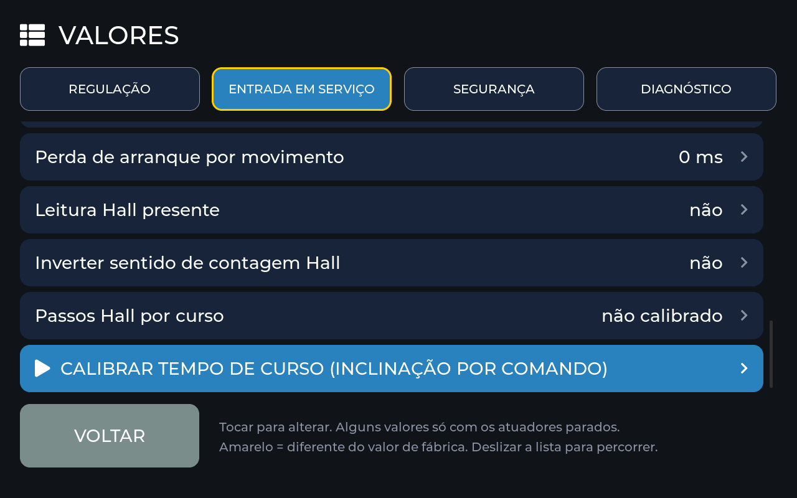
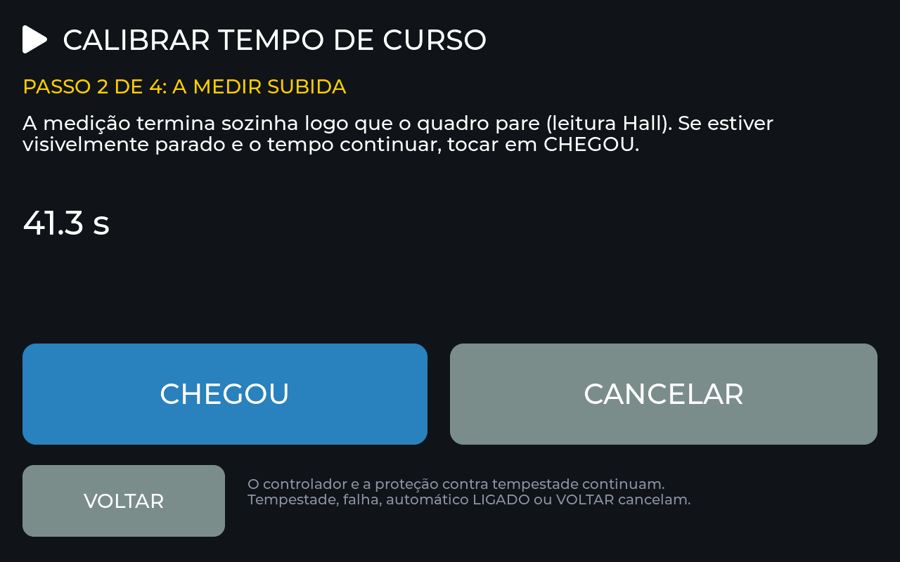
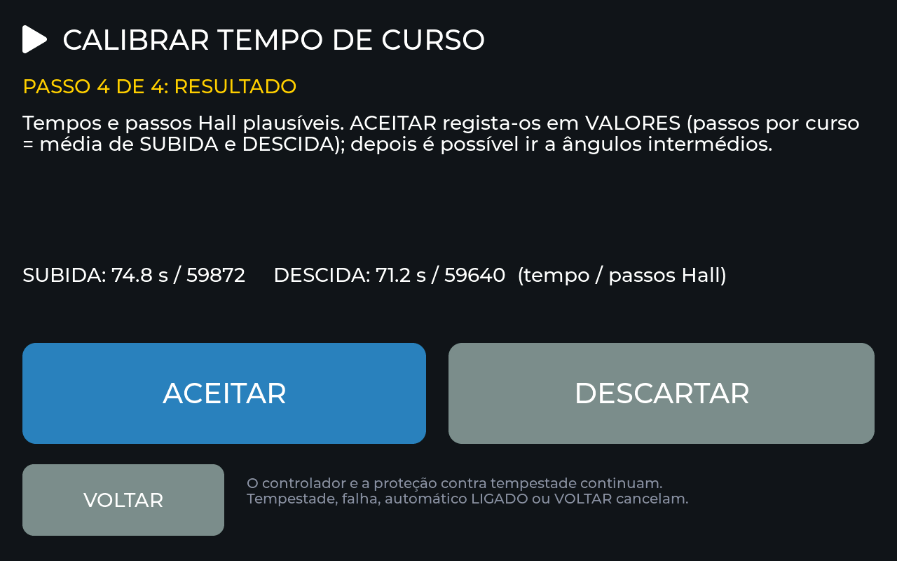
O firmware verifica o resultado: os tempos têm de passar a verificação descrita acima, SUBIDA e DESCIDA têm de contar cada uma pelo menos 1 000 passos Hall e não podem diferir mais de 3 % (valor proposto). Caso contrário, o motivo aparece a amarelo e nada é aceite.
Em funcionamento:
- O cartão INCLINAÇÃO mostra a inclinação contada sem „APROX.“, por exemplo „ATUAL 30° (LEITURA HALL)“ (Fig. 37). A precisão real será medida no rack; pressupõe-se 0,2° (pressuposto).
- Após ligar, a inclinação é desconhecida até a elevação atingir uma vez um limite. O primeiro movimento para um ângulo intermédio começa por isso com um movimento para a posição plana (movimento de referência). Com leitura Hall, este termina logo que o atuador pare e não só após o tempo máximo de curso (limite por paragem). Depois, a elevação move-se diretamente para o ângulo e desliga antecipadamente pelo valor aprendido de inércia.
- Se o atuador parar a meio do percurso (por exemplo, porque os atuadores não têm tensão ou o controlador síncrono interrompeu), o controlador termina o movimento; o log indica „Antrieb steht ohne Endlage“ (atuador parado sem limite). A inclinação continua conhecida.
- Se mover o módulo na caixa de comando (botões do controlador síncrono), o controlador conta junto; a inclinação mantém-se correta.
- Em caso de tempestade, falha do anemómetro e ESTACIONAR PLANO, a elevação move-se como sempre até à posição plana. A leitura Hall nunca interrompe este movimento a meio do percurso. Se a elevação já estiver comprovadamente plana, o movimento termina após cerca de 1,5 segundos; se a inclinação for desconhecida, dura, como sem leitura Hall, todo o tempo máximo de curso.
- Enquanto „Passos Hall por curso“ não estiver calibrado, o ecrã continua a mostrar a estimativa com „APROX.“; o fim de um movimento por paragem, porém, já existe.
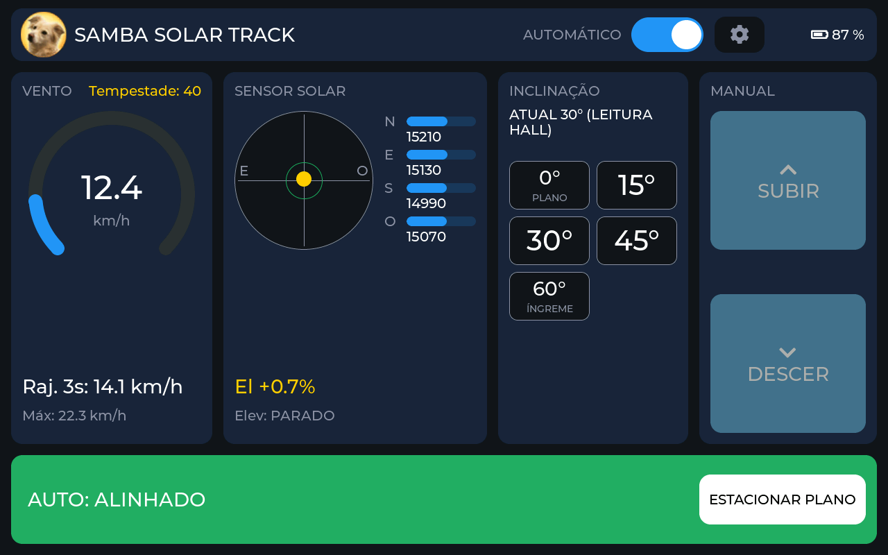
O controlador não conta impulsos adequados: não chegam nenhuns, embora o atuador devesse estar em movimento, contam contra o sentido do movimento, ou chegam demasiados (impulsos de interferência). Verifique o cabo em J22, a HallTapBoard (luzes „24V“ e „5V OK“), a tensão dos atuadores e o sentido de contagem. Enquanto o aviso estiver ativo, só 0° e 60° podem ser escolhidos; ângulos intermédios mostram „LEITURA HALL COM FALHA - SEM MOVIMENTO“ (Fig. 38). Proteção contra tempestade, estacionamento, automático e modo manual continuam a funcionar como sem leitura Hall. Logo que um movimento volte a fornecer impulsos adequados, o aviso desaparece sozinho; a inclinação volta a ser conhecida a partir do limite seguinte. Na interface web aparece o mesmo aviso.
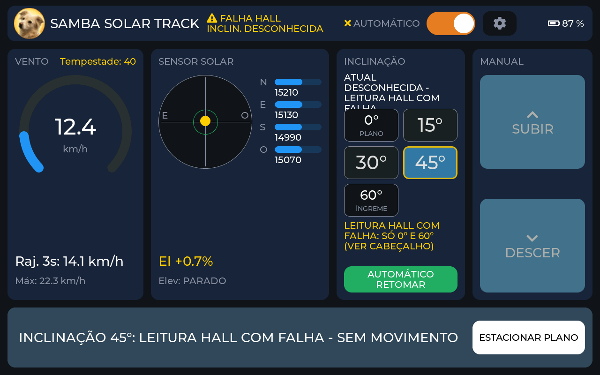
| Valor (VALORES → ENTRADA EM SERVIÇO) | De fábrica | Permitido | Para quê |
|---|---|---|---|
| Leitura Hall presente | não | sim ou não | Ativa a avaliação de J22. Ative apenas se a HallTapBoard estiver ligada. |
| Inverter sentido de contagem Hall | não | sim ou não | Para o caso de os dois canais A e B chegarem trocados; nesse caso o controlador conta ao contrário. |
| Passos Hall por curso | não calibrado | 1 000 a 2 000 000; 0 = não calibrado | Quantos passos Hall tem o percurso completo de 0° a 60°. É registado pela calibração. |
Os três valores só podem ser alterados enquanto nenhum atuador estiver em movimento.
[ 120.010][I][main ] Neigung auf Befehl: 30 Grad (vorher keine), Quelle Display [ 120.010][I][track ] Neigung 30 Grad: Bezugsfahrt noetig [ 168.420][I][motor ] Elevation: Endlage PLUS am Stillstand erkannt (Hall-Abgriff) nach 48410 ms [ 168.420][I][main ] Ausgang Elevation: RAUF -> STOP (Hall-Abgriff: Endlage am Stillstand) [ 168.420][I][hall ] Bezug Flachstellung (Stillstand, Stellung war unbekannt (Annahme: eigener Endschalter des Antriebs)), Stellung war unbekannt
As linhas são um exemplo no formato do firmware. Com leitura Hall, a linha de estado a cada 5 segundos termina com „| Neigung 30.2 Grad (Hall), Ziel 30“ (inclinação 30,2 graus, alvo 30).
Tempo de arranque 1,5 segundos e tempo de paragem 1 segundo; precisão 0,2°; filtro de interferências 5 µs com no máximo cerca de 1 000 impulsos por segundo e canal; o sentido de contagem do contador de impulsos; janela do limite 3 % do percurso; tolerância na calibração 3 %; que o controlador síncrono HAKIWO SCN4 possa partilhar a linha Hall do atuador 1 com a leitura; que a memória que sobrevive a um reinício funcione no board. Se a elevação estiver parada com inclinação desconhecida, o firmware assume que o atuador está no seu próprio fim de curso.
Pausas para os atuadores: o ciclo de trabalho (em preparação, não verificado no aparelho)
Os atuadores lineares elétricos não podem funcionar continuamente, caso contrário aquecem demasiado. O revendedor HAKIWO indica para os atuadores do Samba-Solar-Rack 2.0-E Plus um ciclo de trabalho de 10 % e no máximo 2 minutos seguidos (manual de montagem, capítulos 3.6 e 14.4). O firmware de 10 polegadas cumpre isto por si próprio para cada atuador. Também isto só foi construído e testado no computador.
- Conta de tempo de cursoPara cada atuador, o firmware mantém uma conta. Cada movimento desconta dela, cada segundo de paragem volta a enchê-la (com um nono do tempo). Cheia, a conta permite 120 segundos de movimento seguidos. Esperado: Em funcionamento normal, com movimentos de seguimento curtos, não dá por nada.
- PausaQuando a conta está vazia, começa uma pausa. Esperado: Um movimento em curso para. A faixa de estado fica laranja e mostra „PAUSA CICLO DE TRABALHO: ATUADOR LIVRE EM 13:30“ (no modo manual, em „alinhado“ e no tempo de repouso) ou, na inclinação por comando, „INCLINAÇÃO 45°: PAUSA CICLO DE TRABALHO, RETOMA EM …“ (Fig. 20). O tempo restante conta para trás.
- Novamente livreQuando estiverem acumulados 90 segundos de tempo de curso, o atuador fica novamente livre. Após uma conta completamente vazia, isso demora cerca de 13,5 minutos. Esperado: A faixa de estado volta a mostrar o estado normal; um movimento em espera (inclinação, calibração) continua sozinho.
Mesmo durante a pausa, a elevação move-se para plano quando chega uma tempestade, o anemómetro falha ou escolhe ESTACIONAR PLANO. Estes movimentos para plano têm prioridade. Tudo o resto espera: movimento manual, seguimento e o movimento para um ângulo. O automático termina um movimento de seguimento em curso quando a pausa começa e não inicia nenhum novo durante a pausa. O aparelho aceita comandos do navegador, mas o atuador aguarda o fim da pausa.
Sem fim de curso, um movimento só atinge o limite se percorrer todo o tempo máximo de curso sem parar. Um movimento de referência, o movimento para 0° ou 60° e o movimento de referência na calibração só começam por isso quando a conta permitir um movimento completo. Até lá, o ecrã mostra o tempo de espera. Por isso, não mude de ângulo com frequência.
Os 90 segundos até à libertação são um pressuposto (um movimento completo de 0° a 60° com reserva) e serão verificados no rack. Após um reinício, a conta começa de novo cheia; o tempo de curso antes do reinício não conta.
[ 930.100][W][motor ] Elevation: Einschaltdauer erreicht -> Pause, Fahrt wieder in 810 s (Flachfahrt bei Sturm, Windmesser-Ausfall und Parken bleibt frei) [ 930.100][I][motor ] Elevation: Fahrt PLUS wegen Einschaltdauer beendet [ 930.100][I][main ] Ausgang Elevation: RAUF -> STOP (Zustand MANUAL) [ 1740.110][I][motor ] Elevation: Pause der Einschaltdauer beendet, Antrieb wieder frei
Mover de novo para plano em caso de tempestade (em preparação, não verificado no aparelho)
Sem fins de curso no tracker, o firmware memoriza, após um movimento durante todo o tempo máximo de curso: „Aqui é o limite“ (limite por tempo de curso). Depois, não continua a mover-se nesse sentido. Isto está correto enquanto os atuadores se tiverem realmente movido. Mas se a fonte de alimentação falhar (o board continua então a funcionar com a bateria), o fusível dos atuadores disparar ou o controlador síncrono (por exemplo HAKIWO SCN4) interromper um movimento, os contactos da placa comutam mesmo assim, só que nada se move, e o firmware considera erradamente que o módulo está plano.
Por isso, o firmware de 10 polegadas anula um limite por tempo de curso no sentido „plano“ e volta a mover para plano:
- No inícioLogo que começa uma tempestade, o anemómetro falha ou escolhe ESTACIONAR PLANO (também logo após ligar num destes estados). Esperado: A elevação move-se para plano, mesmo que segundo o firmware já esteja plana. Sem fim de curso, o contacto permanece fechado durante todo o tempo máximo de curso.
- A cada 30 minutosEnquanto a tempestade ou a falha do anemómetro durar, isto repete-se a cada 30 minutos (no estacionamento não). Esperado: Cerca de 30 em 30 minutos, o contacto para „plano“ fecha mais uma vez durante o tempo máximo de curso.
Cada um destes movimentos continua a terminar, no máximo, após o tempo máximo de curso. Tem prioridade e funciona também durante uma pausa do ciclo de trabalho. Com fins de curso instalados não existe limite por tempo de curso; nesse caso nada muda. Com a leitura Hall ativada, o movimento termina após cerca de 1,5 segundos se a elevação já estiver comprovadamente plana; se a inclinação for desconhecida ou o atuador parar a meio do percurso, funciona como sem leitura Hall até ao tempo máximo de curso.
Não está esclarecido se o controlador síncrono HAKIWO SCN4 aceita que o controlador continue a pressionar „plano“ no limite até ao tempo máximo de curso sem indicar o código de erro 15. O fabricante não respondeu a isto (situação em 12.10.2026); será verificado no rack. Até lá, é um ponto em aberto. Com leitura Hall, um movimento até ao limite termina cerca de 1 segundo depois de deixarem de chegar impulsos, em vez de só após o tempo máximo de curso; a questão continua então em aberto para movimentos para plano com inclinação desconhecida e para o funcionamento sem leitura Hall.
Sem leitura Hall, o firmware não vê se os atuadores se movem. O novo movimento para plano só ajuda em caso de tempestade, falha do anemómetro e estacionamento. Com a leitura Hall ativada, a falta de impulsos é detetada (aviso „FALHA HALL“ ou „Antrieb steht ohne Endlage“ no log); só é observado o atuador 1. A entrada „24 V presente“ da placa indica apenas a tensão em J11: numa fonte de alimentação comum, portanto também a falha desta, mas nunca um fusível dos atuadores disparado.
[ 3600.000][I][track ] Zustand IDLE -> STORM (Auto ein, Boe 44.8 km/h, El +3, Az +0 Promille)
[ 3600.000][I][motor ] Elevation: Laufzeit-Endlage PLUS aufgehoben, neue Flachfahrt erlaubt
[ 3600.000][I][main ] Ausgang Elevation: STOP -> RAUF (Zustand STORM)
[ 3690.010][I][motor ] Elevation: Laufzeit-Endlage PLUS erreicht
… 30 Minuten später, der Sturm hält an …
[ 5400.000][D][track ] Zustand STORM haelt an: Flachfahrt wird erneut erlaubtSe no log aparece „PLUS“ ou „MINUS“ depende da definição „Sentido da posição plana“; de fábrica, plano = SUBIR = PLUS.
A placa RearCircuitBoard_10 só pode ser verificada no hardware (capítulo 9). Sem firmware, nenhum contacto e nenhuma luz comuta. Não ligue a bateria.
9Primeira entrada em serviço do hardware
Estes passos verificam a placa sem firmware. Cada passo tem um resultado claro. Só avance quando estiver correto. Os passos 4 a 7 são feitos com a placa em cima da mesa, ainda não no board.
- Desligar a bateriaA ficha da bateria no board permanece desligada. Esperado: A bateria não está ligada a nada.
- Inspeção visual e soldadurasObserve todas as soldaduras dos bornes. Com o testador de continuidade, verifique em J3 a J6 que nenhum pino está ligado ao vizinho. Coloque o jumper J16 conforme a secção „Anemómetro“, J21 em 2-3. Esperado: Nenhuma ponte de solda, ambos os jumpers encaixados.
- Verificação das fichasAntes de ligar pela primeira vez, compare cada ficha com a tabela dos bornes e com a imagem da placa (Fig. 5): ficha certa no borne certo, inscrição correta. Depois observe J7, J10, J14 e J22 de lado. Esperado: Cada ficha assenta rente na sua base, nenhum pino da base fica livre, nenhuma ficha ultrapassa o fim de um borne. Logo que exista um firmware para o board de 10,1 polegadas, acrescenta-se: no arranque não aparece nenhuma mensagem sobre fins de curso ou luzes.
- Forçar o bloqueio e medirLigue a placa sozinha (ainda não no board) a 24 V, jumper J21 em 1-2. Com o multímetro, meça nas soldaduras de J1: pino 2 contra pino 6. Esperado: 3,8 a 4,1 V. Se o valor for mais alto, o bloqueio está defeituoso: não use a placa.
- Funcionamento e tempo de esperaDesligue os 24 V, J21 em 2-3, ligue de novo os 24 V (a sala deve estar entre 15 e 30 °C). Observe a tensão em J1 pino 2 contra pino 6. Esperado: Primeiro cerca de 4 V; após 45 a 101 minutos (geralmente cerca de 71 minutos) salta para 4,9 a 5,2 V.
- Teste de frioCom 4,9 a 5,2 V, pulverize brevemente spray de frio ao lado da ilha de cobre em cima à esquerda, não diretamente sobre componentes. Esperado: A tensão cai imediatamente para cerca de 4 V. Após aquecer, mantém-se primeiro nos 4 V; só após o tempo de espera volta a subir para cerca de 5 V.
- Teste de calorAqueça cuidadosamente a ilha de cobre acima de 37 °C com um soprador de ar quente em potência baixa; verifique a temperatura com um termómetro na ilha, não acima de 60 °C. Esperado: A tensão cai para cerca de 4 V. Após arrefecer, volta a cerca de 5 V depois do tempo de espera. Este teste encontra defeitos de soldadura que o spray de frio não encontra.
- MontarColoque a placa no board com espaçadores e pads conforme o capítulo 5. Esperado: Espaçadores e pads assentam por baixo da ilha e não deslizam; a placa assenta plana sobre os quatro espaçadores.
- Ligar o boardInterruptor deslizante do board em LIGADO, ligue os 24 V. Esperado: O board arranca (o ecrã mostra a imagem do software de fábrica ou, sem firmware, permanece escuro). A luz de carga do board, se existir, permanece apagada: sem bateria não há carga, e nesse caso não acende de qualquer forma (pressuposto).
- Saídas de comutação e fins de cursoSó com o firmware para o board de 10,1 polegadas (em preparação): mantenha premida cada tecla no ecrã e meça com o testador de continuidade, através da ficha encaixada, entre os dois fios (ficha das saídas de comutação); prima cada fim de curso. Esperado: Fecha exatamente o contacto correspondente, é indicado exatamente o fim de curso premido.
Se o corte por sobretensão (capítulo 5) funciona só pode ser verificado com uma fonte de alimentação de laboratório no protótipo; o firmware não o pode verificar mais tarde. Esta verificação faz parte do plano de medições antes da encomenda (anexo 11 E).
Spray de frio só brevemente e a 10 a 20 cm de distância, ar quente só em potência baixa. Não toque em nada nos bornes dos 24 V enquanto estiverem sob tensão.
10Termos explicados de forma simples
- Tampa de fecho
- Uma tampa de plástico que fecha a extremidade aberta de um perfil de alumínio. O suporte do sensor solar substitui uma destas tampas e suporta também o sensor.
- Descarnar
- Remover o revestimento de plástico (isolamento) na extremidade de um fio num determinado comprimento, para que o metal nu faça contacto no borne. De preferência com um alicate de descarnar; os fios por baixo não podem ser cortados.
- Resistência de terminação
- Uma resistência de 120 Ω entre os fios A e B de uma linha RS485, nas suas duas extremidades. Impede que os sinais sejam refletidos no fim da linha.
- Espaçador
- Uma pequena coluna metálica com rosca. Com rosca exterior e interior, substitui um parafuso e suporta ao mesmo tempo uma segunda placa à distância correta. A HallTapBoard não precisa de nenhum: é aparafusada na sua caixa diretamente em pinos de plástico, para que a fixação não crie nenhuma ligação condutora.
- Conversor redutor
- Um circuito que transforma uma tensão contínua mais alta numa mais baixa, aqui de 24 V para os 5 V do board. Perde pouca energia e quase não aquece.
- Ponteira
- Um pequeno tubo metálico que é cravado com um alicate na extremidade descarnada de um fio flexível. Mantém juntos os muitos fios finos, para que nenhum fique solto e o fio fique bem preso no borne.
- ADS1115
- Um componente de medição. Converte a tensão dos sensores de luz em números com que o computador pode trabalhar.
- Perfil de alumínio (perfil ranhurado)
- Uma barra de alumínio com secção constante, aqui 40 × 40 mm, com uma ranhura em cada lado (ranhura 8) e um furo no centro. Com estes perfis constrói-se, por exemplo, o Samba-Solar-Rack.
- Bateria (bateria de lítio)
- Uma bateria recarregável. A bateria do board de 10,1 polegadas tem 3,7 V. As baterias de lítio só podem ser carregadas numa gama de temperaturas limitada, caso contrário envelhecem rapidamente ou tornam-se perigosas.
- Perda de arranque
- A parte de cada movimento em que o quadro ainda não se move, por exemplo porque os relés atracam ou o controlador dos atuadores arranca lentamente. Na inclinação por comando pode ser introduzida em VALORES.
- Ânodo / cátodo
- Os dois terminais de um díodo. Um díodo só deixa passar corrente num sentido, do ânodo para o cátodo. Num LED, o ânodo é por isso o positivo e o cátodo o negativo. Na placa, um traço ou ângulo na serigrafia indica geralmente o cátodo; no díodo grande D5, o cátodo é a patilha de refrigeração.
- ASA / PETG
- Dois plásticos para a impressora 3D. O ASA resiste ao sol e ao calor até cerca de 100 °C e é por isso adequado para a caixa da HallTapBoard na caixa de comando; o PETG é mais fácil de imprimir, mas amolece já a partir de cerca de 80 °C (valores indicativos, não consultados).
- Instalar (flashing)
- Escrever o firmware na memória do board, através de um cabo USB ou pela rede.
- Azimute
- A rotação do módulo de este para oeste.
- Pré-visualização da montagem
- Uma imagem da placa totalmente montada que a JLCPCB mostra na encomenda antes do pagamento. Nela verifica se cada componente está na orientação correta. Nos componentes polarizados, um ponto vermelho marca o lado que a JLCPCB toma como referência; nem sempre é o pino 1.
- Sensor de movimento
- Deteta se algo se move à frente de um aparelho. Aqui, esta função é assumida pela câmara integrada do ecrã: o firmware compara cada imagem com as anteriores, sem a guardar.
- Referência, movimento de referência
- Uma referência é um limite em que a posição é conhecida com segurança. O movimento de referência leva até lá (geralmente plano), antes de a inclinação por comando ir para um ângulo intermédio. Após uma referência, a incerteza é zero.
- Protetor de ecrã
- Uma visualização escura e calma que o ecrã mostra quando ninguém está à frente durante algum tempo. Poupa energia e não encandeia. Um toque ou movimento traz de volta a visualização normal.
- Rajada
- Uma lufada de vento curta e forte. O controlador calcula com a média de três segundos.
- Bootloader
- Um pequeno programa de arranque no início da memória. Ao ligar, inicia o firmware propriamente dito. Está incluído na imagem de fábrica.
- Barra de terminais fêmea / barra de pinos
- Duas peças complementares para encaixar placas entre si: a barra de pinos tem pinos, a barra de terminais fêmea tem as aberturas correspondentes. A placa RearCircuitBoard_10 encaixa com a sua barra de pinos J1 na barra de terminais fêmea J8 do board.
- Codec (codec de áudio)
- Um componente que converte números do computador numa tensão de som. No board de 10,1 polegadas chama-se ES8311; um pequeno amplificador (NS4150B) alimenta com ele o altifalante.
- dBFS
- Medida do volume de um som digital: 0 dBFS é o som mais alto que o codec pode emitir, valores menores (negativos) são mais baixos. 3 dB a menos significa metade da potência.
- Espaçador
- Uma pequena coluna de latão com rosca interior nas duas extremidades. Aqui, um deles fica sem parafuso entre dois pads térmicos e conduz a temperatura da parede traseira até ao sensor na placa.
- Modo de download
- Um estado de arranque especial do chip, em que aceita novo firmware por USB em vez de o iniciar. Normalmente o PC ativa-o sozinho; à mão: manter BOOT premido, premir RESET, soltar BOOT.
- Testador de continuidade
- Um aparelho de medição simples, ou uma posição do multímetro, que apita quando dois pontos estão ligados eletricamente. Com ele verifica, por exemplo, se um contacto está fechado.
- Rígido / flexível
- Um fio rígido é constituído por um único fio metálico duro. Um fio flexível (multifilar) é constituído por muitos fios finos e é maleável. Os fios flexíveis devem receber, de preferência, uma ponteira antes de serem inseridos num terminal de mola.
- Calibrar
- A medição guiada dos dois tempos de curso no ecrã (Configuração → VALORES → ENTRADA EM SERVIÇO → CALIBRAR TEMPO DE CURSO). Sem calibração, a inclinação por comando só conhece 0° e 60°.
- Ciclo de trabalho
- A fração do tempo em que um atuador pode funcionar sem aquecer demasiado. Aqui são 10 % e no máximo 2 minutos seguidos; depois o atuador precisa de uma pausa. O firmware de 10 polegadas cumpre isto por si próprio; só o movimento para plano em caso de tempestade, falha do anemómetro e estacionamento funciona também durante a pausa.
- Pé de elefante
- Na impressão 3D, a primeira camada é pressionada contra a base de impressão e fica um pouco mais larga. Por isso, reentrâncias finas na face inferior de uma peça podem fechar-se. Muitos programas de impressão têm uma definição de compensação para isso.
- eletricista qualificado
- Uma pessoa com formação e experiência em eletrotecnia, autorizada a realizar trabalhos com tensão de rede (230 V). Ligar fontes de alimentação, instalar tomadas ou passar cabos na rede elétrica é trabalho para ela.
- Fusível eletrónico
- Um pequeno componente que protege como um fusível, mas não queima. Se passar demasiada corrente, limita-a ou desliga e volta a tentar sozinho após pouco tempo. Na placa RearCircuitBoard_10, dois destes protegem a entrada de 24 V (U16) e os 5 V para o board (U15).
- Elevação
- A inclinação do módulo, de plano a íngreme.
- Fins de curso
- Um interruptor no fim do percurso. Indica: não é possível avançar mais.
- esptool
- O programa do fabricante de chips Espressif que escreve firmware em boards ESP32. As páginas do navegador utilizam-no em segundo plano.
- Extended / Basic
- As duas classes da biblioteca de componentes da JLCPCB. Para cada tipo de componente da classe „Extended“, a JLCPCB cobra por encomenda uma taxa de preparação; para „Basic“ não.
- Tempo de curso
- O tempo de que o atuador precisa para todo o percurso de 0° a 60° (mais íngreme) ou de volta (mais plano). A partir dele, o firmware estima a inclinação.
- Terminal de mola (push-in)
- Um terminal sem parafuso: uma mola na ficha prende o fio. Um fio rígido ou um fio com ponteira é simplesmente empurrado até ao batente. Para soltar, prima o pequeno botão ao lado da abertura e puxe o fio para fora.
- Comparador de janela
- Um circuito que verifica se um valor medido está entre dois limites, aqui se a temperatura está entre 10 e 35 °C.
- Firmware
- O software que corre no board.
- Flash
- A memória do board onde estão o firmware e as definições guardadas. Mantém o seu conteúdo mesmo sem corrente.
- Linha de deteção (remote sense)
- Dois fios adicionais finos de algumas fontes de alimentação, através dos quais a fonte mede a tensão num ponto distante e compensa a perda na linha. No Samba Solar Track ficam na fonte de alimentação: levados até aos atuadores, a tensão no controlador ficaria demasiado alta.
- Grau de enchimento (infill)
- Quão denso é o enchimento do interior de uma peça impressa, em percentagem. 100 % significa totalmente cheio; isso torna a peça pesada e resistente, mas gasta muito filamento.
- Com isolamento galvânico
- Dois circuitos sem ligação condutora entre si. Mesmo assim, um sinal passa de um para o outro, por exemplo com luz num optoacoplador. Assim, os dois lados podem ter massas e fontes de alimentação diferentes sem se perturbarem.
- Contraporca
- Uma porca que fixa um bucim pelo lado de dentro na parede da caixa. O bucim é inserido pelo exterior através do furo, por dentro a contraporca é enroscada na sua rosca; depois apertam-se ambos um contra o outro.
- Estrutura G1 / G2
- A forma construtiva do Samba-Solar-Rack (posição do eixo de rotação). Determina que curso do atuador corresponde a que inclinação. G1: Rack 2.0-D e 2.0-E; G2: 2.0-E Plus, 2.1 e 2.1 Plus. Para outras estruturas existe „linear“ (um pressuposto).
- Inserto roscado
- Uma pequena manga de latão com rosca interior que é fundida com o ferro de soldar quente num furo de uma peça impressa (também „porca de fusão“). Depois, é possível apertar e desapertar ali um parafuso metálico muitas vezes sem que a rosca se rasgue no plástico. A caixa da HallTapBoard tem oito insertos ruthex M3, o suporte do sensor solar dois insertos ruthex M4.
- Varão roscado
- Uma barra com rosca em todo o comprimento, aqui M8 em aço inoxidável. No suporte pendular, é o eixo em torno do qual o pêndulo roda.
- Filtro de glitches (filtro de interferências)
- Um filtro no contador de impulsos que não conta impulsos muito curtos. Na entrada de impulsos J22, impulsos inferiores a 5 µs são considerados interferência.
- GND
- Massa, o polo negativo comum do circuito.
- Leitura Hall
- A captação dos impulsos dos sensores Hall no controlador síncrono, sem os perturbar. Isso é feito pela HallTapBoard. Se em VALORES estiver ativado „Leitura Hall presente“, o firmware de 10 polegadas conta os impulsos e conhece assim a inclinação (capítulo 8).
- Passo Hall
- Cada mudança entre LOW e HIGH (flanco) num dos dois canais A e B. Cada impulso corresponde a 4 passos Hall. „Passos Hall por curso“ é o número de passos para todo o percurso de 0° a 60°.
- Sensor Hall
- Um pequeno sensor que deteta um campo magnético. Em muitos atuadores lineares há um no motor: em cada rotação emite impulsos. Quem conta os impulsos sabe quanto o atuador se deslocou. Com dois canais (A e B) também se reconhece o sentido.
- HallTapBoard
- Uma pequena placa própria para a caixa de comando (projeto 0.5 com caixa impressa em 3D, ainda não fabricada). Capta no controlador síncrono HAKIWO SCN4 os impulsos dos sensores Hall do atuador 1 e transmite-os, através de optoacopladores e com isolamento galvânico, como dois contactos livres de potencial para a entrada de impulsos J22 da placa RearCircuitBoard_10. É alimentada a partir dos 24 V dos atuadores (capítulo 6).
- HTTPS
- A forma cifrada da ligação a uma página da Internet. O aparelho verifica, com uma lista integrada de entidades de confiança (certificados), que está realmente a comunicar com a página do projeto.
- Hiccup
- Inglês para soluço: em caso de curto-circuito, o conversor desliga, espera um pouco e tenta de novo, repetidamente, até o defeito estar eliminado. Assim nada aquece demasiado. Algumas fontes de alimentação comportam-se da mesma forma em sobrecarga; para a fonte de alimentação comum isso não é adequado.
- HIGH / LOW
- Os dois estados de um sinal digital: há tensão (HIGH) ou não há tensão (LOW).
- Tempo máximo de curso
- Durante este tempo um atuador pode funcionar sem parar. Com fins de curso, um movimento mais longo é um erro; sem fins de curso, o limite considera-se depois atingido (limite por tempo de curso).
- Histerese
- A distância entre o limiar de ligar e o de desligar. Na entrada de impulsos J22, o comparador comuta num sentido a cerca de 2,05 V e só a cerca de 2,36 V no outro. Assim, pequenas interferências na linha não geram impulsos falsos.
- I2C
- Uma ligação de duas linhas (SDA e SCL) à qual estão ligados vários componentes. Cada um tem o seu próprio endereço.
- Blindagem do cabo
- Uma malha ou uma folha em volta dos fios de um cabo. Ligada a GND num dos lados, mantém as interferências afastadas dos fios.
- Bucim (bucim PG)
- Uma passagem para um cabo através de uma parede da caixa. Ao apertar a porca de cobertura, um anel de vedação comprime-se em volta da bainha do cabo: o cabo fica então estanque e protegido contra arrancamento (alívio de tração). „PG 11“ é o tamanho da rosca (rosca Panzergewinde); cada tamanho só veda cabos numa determinada gama de diâmetro exterior, no PG 11 da Lapp de 4 a 10 mm.
- Spray de frio
- Um spray de lojas de eletrónica que arrefece fortemente um ponto em segundos. Com ele verifica se um sensor de temperatura reage corretamente.
- Furo de rosca
- O furo no qual é aberta uma rosca. Para M8 tem 6,8 mm; o furo central de muitos perfis de alumínio 40 × 40 tem exatamente esta medida.
- Comparador
- Um componente que compara duas tensões e indica na saída qual é a mais alta. Na placa RearCircuitBoard_10 trabalham dois: no bloqueio de carga (U18) e na entrada de impulsos J22 (U22).
- Distância de fuga / distância no ar
- O caminho mais curto entre dois condutores pela superfície da placa (distância de fuga) ou pelo ar (distância no ar). Quanto mais longo, mais difícil é para uma corrente de fuga, por exemplo através de humidade e sujidade, encontrar um caminho.
- Rolamento de esferas
- Um anel com esferas entre o anel interior e o exterior, para que algo rode quase sem atrito. O rolamento 608 (8 × 22 × 7 mm) é muito comum, por exemplo em patins em linha.
- Patilha de refrigeração
- Uma grande superfície metálica na caixa de um componente, que assenta plana sobre a placa e é soldada. Através dela e do cobre da placa, o componente dissipa o seu calor. No díodo D5, a patilha de refrigeração é ao mesmo tempo um terminal, o cátodo.
- Carregador
- O circuito no board que carrega a bateria a partir dos 5 V. Só carrega quando a sua tensão de entrada é suficientemente alta (cerca de 4,5 V).
- Bloqueio de carga
- O circuito na placa RearCircuitBoard_10 que impede a carga da bateria quando está demasiado frio ou demasiado quente: baixa então os 5 V para o board para cerca de 4 V.
- Limite por tempo de curso
- Sem fins de curso no tracker, um limite considera-se atingido quando o contacto esteve fechado durante todo o tempo máximo de curso; o atuador está então no seu próprio fim de curso integrado. Pode estar errado se os atuadores não tinham tensão nesse momento ou se o seu controlador interrompeu o movimento. Com leitura Hall existe, em vez disso, o limite por paragem, mais preciso.
- Redução de potência (derating)
- Uma fonte de alimentação fornece menos do que a sua potência nominal quando está calor. Quanto menos, mostra uma curva na ficha técnica. Por isso, monte a fonte de alimentação à sombra.
- Díodo emissor de luz (LED)
- Um pequeno componente que acende quando a corrente passa por ele no sentido correto. Precisa de uma resistência em série que limite a corrente.
- Guia de luz
- Uma barra de plástico transparente (aqui acrílico, PMMA) que conduz a luz como um tubo: o que entra iluminado em baixo sai em cima, na extremidade. Assim vê-se do exterior uma luz dentro da caixa, e o furo na tampa fica mesmo assim fechado.
- Poço de luz
- Um tubo curto desde a tampa de uma caixa até pouco acima de uma luz na placa. Conduz a luz até ao furo na tampa, de modo que se vê a luz do exterior sem abrir a tampa.
- Atuador linear
- Um motor que faz entrar e sair uma haste.
- Ponte de solda
- Solda que, durante a soldadura, liga involuntariamente dois pinos vizinhos. O que deveria estar separado fica então ligado eletricamente. Encontra-a com o testador de continuidade: apita entre os dois pinos. Para a remover, retire a solda em excesso com o ferro de soldar quente e verifique de novo.
- Manifesto
- Um pequeno ficheiro de texto na página do projeto. Indica o firmware mais recente: número de versão, data, tamanho, uma soma de verificação do ficheiro e a assinatura. Por ele, o aparelho reconhece se existe um firmware mais recente e se o ficheiro é autêntico e está completo.
- Modbus-RTU
- Uma „linguagem“ comum para aparelhos de medição. O board pergunta, o aparelho responde com o valor medido e uma soma de verificação.
- Inércia
- Quanto o atuador continua a rodar depois de desligado. Com leitura Hall, o controlador mede a inércia em cada sentido e, no movimento para um ângulo, desliga essa quantidade mais cedo.
- NC / NO
- Contacto normalmente fechado (normally closed) e normalmente aberto (normally open). Descreve se um contacto está fechado ou aberto em repouso.
- Inclinação por comando
- A elevação move-se para um ângulo escolhido e fica lá; o automático fica em pausa até o retomar. No log, o estado chama-se POSITION. Só na versão de 10 polegadas, só com um eixo.
- NTC
- Uma resistência cujo valor diminui com o aumento da temperatura. Com ela, a placa mede a temperatura.
- Optoacoplador
- Um componente que transmite um sinal com luz: um pequeno LED de um lado comuta um transístor do outro. Entrada e saída estão separadas eletricamente. A saída funciona como um contacto livre de potencial.
- PCA9538
- Um componente com oito entradas e saídas adicionais, comandado por I2C.
- Pêndulo
- Um corpo suspenso de forma rotativa que, pelo seu peso, se coloca sozinho na vertical, para baixo. O suporte pendular aproveita isto para que o anemómetro esteja sempre na vertical.
- PhotoMOS
- Um interruptor eletrónico sem peças móveis. Um pequeno LED no interior comuta o contacto; os dois lados estão separados eletricamente.
- Inversão de polaridade
- Trocar positivo e negativo no motor para que ele funcione ao contrário.
- Condensador de polímero
- Um condensador com plástico sólido em vez de conteúdo líquido. Dura muito tempo e amortece bem as flutuações de tensão.
- Livre de potencial
- Um contacto que não está ligado a nenhuma tensão do controlador. Comporta-se como um simples botão com dois terminais.
- Pull-up / pull-down
- Uma resistência que puxa uma linha para um estado fixo enquanto ninguém a comanda.
- Contador de impulsos (PCNT)
- Uma parte do processador ESP32-P4 que conta autonomamente os impulsos num pino, mesmo muito rápidos, sem sobrecarregar o programa. O firmware de 10 polegadas conta com ele os impulsos da entrada J22 quando a leitura Hall está ativada.
- Quadratura
- Dois sinais (canal A e B) desfasados entre si de um quarto de período. Pela ordem em que mudam, o controlador reconhece o sentido do movimento.
- Passo
- A distância de centro a centro entre dois terminais vizinhos de um borne ou de uma barra de pinos, por exemplo 3,5 mm. Ficha e borne têm de ter o mesmo passo.
- RearCircuitBoard_10
- A placa própria para o board de 10,1 polegadas ESP32-P4-WIFI6-Touch-LCD-10.1. Fica no exterior, na parede traseira do aparelho, e encaixa com a barra de pinos J1 na barra de terminais fêmea J8 do board (em preparação).
- Relé
- Um interruptor comandado eletricamente. Uma corrente pequena comuta uma grande.
- Luz RGB
- Três LEDs numa só caixa: vermelho, verde e azul. Vermelho e verde juntos dão amarelo.
- RS485
- Uma ligação de dados robusta através de duas linhas (A e B), adequada para cabos longos ao ar livre.
- Chave (chave de assinatura)
- Um par de números que pertencem um ao outro. Com a parte secreta, o programador assina um novo firmware; cada firmware contém a parte pública e verifica com ela a assinatura. Só o programador tem a parte secreta.
- Grau de proteção (IP65, IP67)
- Indica quão bem um aparelho está protegido contra pó e água. O primeiro algarismo refere-se ao pó (6 = estanque ao pó), o segundo à água (5 = jatos de água, 7 = imersão breve). Uma fonte de alimentação ao ar livre precisa de um grau de proteção elevado.
- Muito baixa tensão de segurança (SELV)
- Abreviatura de „safety extra-low voltage“: uma tensão tão baixa que não é perigosa ao toque e que é gerada com separação segura da rede elétrica, por exemplo por uma fonte de alimentação aprovada para isso. No Samba Solar Track, a placa recebe no máximo 30 V de tensão contínua.
- Autorretenção
- Um circuito que se mantém sozinho no estado após disparar. Aqui mantém a entrada de 24 V desligada até os 24 V serem desligados.
- Autoteste
- Uma breve verificação que um firmware acabado de instalar faz a si próprio: o ecrã funciona, e o componente das saídas de comutação na placa responde (na simulação basta o ecrã)? Se o Wi-Fi estiver ativado, o aparelho também tem de se ter ligado ao Wi-Fi pelo menos uma vez desde o reinício. Só depois o novo firmware é considerado bom. Se não passar a verificação, o aparelho regressa ao firmware anterior.
- Assinatura (assinatura digital)
- Uma sequência de números que só pode ser gerada com a chave secreta do projeto. Se alguém alterar um único carácter do ficheiro assinado, ela deixa de corresponder. Assim, o aparelho só aceita firmware que provém realmente do projeto.
- Fusível rearmável
- Um fusível que, com corrente excessiva, aquece e fica de alta resistência, e que volta a fechar sozinho depois de arrefecer. Não é preciso substituí-lo.
- Simulação
- Um modo de teste sem a placa RearCircuitBoard_10: o firmware apenas simula tracker, sensores e atuadores e não comuta nada.
- SMD
- Abreviatura de „surface-mounted device“: componentes que são soldados planos sobre a superfície da placa, sem furos. A JLCPCB monta-os com máquinas. O contrário são os componentes de inserção, como bornes e barras de pinos, cujos pinos são inseridos em furos da placa e depois soldados.
- Soft termination
- Condensadores com terminais flexíveis. Se a placa dobrar, partem-se com menos frequência.
- Regulador de tensão
- Um componente que transforma uma tensão mais alta e variável numa tensão fixa mais baixa, por exemplo exatamente 5 V a partir de 24 V. Um regulador simples (regulador linear) como o TPS7B69 na HallTapBoard converte o resto da tensão em calor.
- Divisor de tensão
- Duas resistências em série que dividem uma tensão numa proporção fixa. No board de 10,1 polegadas, R92 e R93 dividem a tensão da bateria para um terço, para que a entrada de medição do chip a possa medir.
- Perda de tensão (queda de tensão)
- Cada linha tem uma pequena resistência. Quando passa corrente, perde-se nela uma parte da tensão: quanto mais longa e fina a linha e quanto maior a corrente, mais. O cálculo considera o fio de ida e o de retorno.
- Borne encaixável
- Um borne em duas partes: a base é soldada na placa, os fios vão para a ficha solta. Geralmente fixa-os um pequeno parafuso; nas saídas de comutação da placa RearCircuitBoard_10, um terminal de mola. Assim é possível trocar a placa sem desligar os fios.
- Jumper (ponte de encaixe)
- Uma pequena ficha que liga dois pinos lado a lado. Mudando-a de posição, uma ligação é ativada ou desativada.
- Anel de fixação
- Um anel metálico com um parafuso de aperto que é fixado num tubo ou num veio. Impede que uma peça deslize ou caia.
- Cablagem em estrela
- Cada consumidor recebe a sua própria linha diretamente dos bornes da fonte de alimentação, como os raios de uma estrela. Assim, a corrente elevada dos motores não passa pela linha do controlador, e cada linha tem o seu próprio fusível adequado.
- Limite por paragem
- Um limite que o controlador com leitura Hall reconhece pelo facto de deixarem de chegar passos Hall apesar de a saída estar ligada: após um arranque de 1,5 segundos, nenhum durante 1 segundo (pressupostos). O movimento termina então imediatamente, e não só após o tempo máximo de curso. Se, pelo contrário, o atuador parar a meio do percurso, o controlador termina o movimento sem limite („Antrieb steht ohne Endlage“, atuador parado sem limite).
- Parede frontal
- A parede fechada na extremidade da base de um borne encaixável. Segura a ficha lateralmente, para que não possa ser encaixada desalinhada.
- Limitação de corrente (CV+CC)
- Uma fonte de alimentação com tensão constante (CV) e limitação de corrente (CC) mantém a tensão até atingir a corrente máxima; acima disso, limita a corrente e continua a fornecer, em vez de desligar. O contrário é uma fonte de alimentação com hiccup.
- Comando síncrono
- Um aparelho de comando que faz dois atuadores moverem-se à mesma velocidade, para que a estrutura não torça, por exemplo o HAKIWO SCN4 no Samba-Solar-Rack 2.0-E Plus. A placa comuta apenas a sua entrada de botões.
- Tempo morto
- A pausa entre a paragem e o movimento no sentido oposto.
- Controlador (driver)
- Um pequeno programa para o PC, para que ele reconheça um aparelho ligado, aqui o componente USB CH343 do board, como porta.
- Zona de isolamento
- Uma faixa da placa sem cobre entre duas partes do circuito que não podem estar ligadas de forma condutora. Na HallTapBoard tem 7 mm de largura; só os optoacopladores a atravessam, com luz em vez de corrente.
- Incerteza
- Quanto a inclinação mostrada pode, no máximo, estar desviada, por estimativa. Cresce com cada movimento e é zero após uma referência. A partir de 6°, o ecrã mostra „DESCONHECIDO“.
- Proteção contra inversão de polaridade
- Um díodo na entrada da alimentação que só deixa passar corrente no sentido correto. Se positivo e negativo forem ligados trocados, bloqueia, e o circuito a seguir não recebe tensão nem sofre danos. Na HallTapBoard, as duas luzes ficam então apagadas.
- Via
- Um pequeno furo metalizado que liga as camadas de cobre de uma placa. Na placa RearCircuitBoard_10, todas as vias estão preenchidas e tapadas, para que a solda não entre nelas durante a soldadura.
- Pad térmico
- Uma almofada macia, eletricamente isolante, que conduz bem o calor e preenche folgas entre duas peças.
- Web Serial
- Uma capacidade de alguns navegadores (Chrome, Edge, Opera, Firefox mais recentes) de comunicar com um aparelho na porta USB. Com ela é possível instalar firmware sem um programa próprio.
- Imagem de fábrica (factory.bin)
- O ficheiro com tudo o que um board vazio precisa para arrancar: bootloader, divisão da memória e firmware. É escrito no início da memória (0x0) e apaga as definições guardadas.
- Ângulo personalizado
- Um ângulo definido pelo utilizador de 1 a 59° para a inclinação por comando, além de 0°, 30° e 60°.
- Borne encaixável de duas filas
- Um borne encaixável com duas filas de terminais sobrepostas. Nas saídas de comutação da placa RearCircuitBoard_10, só dois pinos em diagonal estão ocupados: em SUBIR e DESCER (J3, J4) dois de quatro, em ESTE e OESTE (J5, J6) os dois exteriores de seis. A sua ficha não encaixa em nenhum borne de uma fila nem em J11. Uma ficha de SUBIR ou DESCER em ESTE ou OESTE, ou vice-versa, mesmo encaixada desalinhada, toca no máximo num pino de contacto e não comuta nada; por isso, uma ficha alheia não consegue fazer ponte no contacto.
11Anexo
Lista de materiais, fornecedores, custos, a ocupação da barra de pinos, o plano de medições antes da encomenda e a HallTapBoard (G). Estado: projeto 0.10 de 11 de outubro de 2026 (projeto 0.9 de 8 de outubro de 2026, completado com as pontes na ilha do sensor e a entrada de impulsos J22).
A. Lista de materiais (variante de montagem smd)
A JLCPCB monta todas as 233 peças SMD (83 referências, das quais 37 da classe „Extended“ e 46 „Basic“; R92 e C38 ficam livres). Na variante de montagem „voll“ (completa), a JLCPCB solda adicionalmente os 15 bornes e barras de pinos (248 peças, 91 referências). A entrada de impulsos J22 (11.10.2026) acrescenta 20 peças SMD e nenhum novo tipo Extended. As designações constam também da serigrafia da placa.
| Componente | Tipo | N.º JLCPCB | Classe | Qtd. | Designação | Para quê |
|---|---|---|---|---|---|---|
| Componente de medição | ADS1115IDGS (VSSOP-10) | C37593 | Extended | 2 | U1, U20 | Sensor solar (0x48); monitorização (0x49) |
| Componente de E/S | PCA9538PW, TI (TSSOP-16) | C201530 | Extended | 2 | U2, U8 | Saídas de comutação/ |
| Contacto de comutação | PhotoMOS AQY212GS (SOP-4) | C415471 | Extended | 4 | K1–K4 | Saídas de comutação, 60 V / 1 A |
| Proteção contra sobretensão | TPD4E1U06DBV (SOT-23-6) | C124691 | Extended | 6 | U3, U4, U6, U10, U13, U14 | Entradas, alimentação dos sensores, luzes, LED_5V |
| Limitador de corrente | TPS2553DBV (SOT-23-6) | C55266 | Extended | 2 | U5, U9 | Alimentação dos sensores, luzes |
| Díodo TVS | SMAJ33CA (SMA), bidirecional | C115251 | Extended | 8 | D1–D4, D11, D12, D16, D17 | sobre os contactos; RS485 A/B; impulsos A/B (J22) |
| RS485-Transceiver | THVD2410DR, TI (SOIC-8), ±70 V | C1849398 | Extended | 1 | U11 | Anemómetro |
| Regulador de tensão 3,3 V | AP7361C-33Y5-13 (SOT-89-5) | C460397 | Extended | 1 | U12 | V3V3_AUX |
| Conversor de 5 V | LM5146RGYR, TI (VQFN-20) | C3188679 | Extended | 1 | U7 | 24 V → 5 V |
| MOSFET | CSD18543Q3A, TI (SON 3,3 × 3,3) | C840100 | Extended | 2 | Q2, Q3 | Interruptor do conversor |
| Bobina de armazenamento | Würth WE-LHMI 74437368100, 10 µH | C1519857 | Extended | 1 | L1 | Conversor |
| Shunt | Panasonic ERJ-8BWFR010V, 10 mΩ, 1206, 1 W | C2076185 | Extended | 1 | R53 | Limite de corrente do conversor |
| eFuse 5 V | TPS259470ARPWR, TI (VQFN-HR-10) | C3662799 | Extended | 1 | U15 | Fusível e bloqueio de retorno +5V |
| eFuse 24 V | TPS26600PWPR, TI (HTSSOP-16) | C544399 | Extended | 1 | U16 | Fusível na entrada de 24 V |
| Interruptor de temperatura | TMP390A2DRLR, TI (SOT-563) | C5219772 | Extended | 1 | U17 | desliga U16 acima de 110 °C |
| Comparador | LM2903BIDR, TI (SOIC-8) | C2869804 | Extended | 2 | U18, U22 | Janela do bloqueio de carga; entrada dos impulsos (J22) |
| Contador | 74HC4060D (SOIC-16) | C5649 | Extended | 1 | U19 | Tempo de espera do bloqueio de carga |
| Referência | TLV431BIDBZR, TI (SOT-23) | C398375 | Extended | 1 | U21 | Corte por sobretensão |
| Fusível | BSMD2920-200-60V, rearmável | C49233174 | Extended | 1 | F1 | Entrada de 24 V |
| Díodo Schottky | SS10P6-M3/86A, Vishay (TO-277A) | C2927414 | Extended | 1 | D5 | Proteção contra inversão de polaridade |
| Díodo TVS | SMBJ30A (SMB) | C113998 | Extended | 1 | D6 | Entrada de 24 V |
| Díodo Zener | BZT52C5V1 (SOD-123) | C173407 | Extended | 1 | D14 | TMP_VDD |
| Díodo Zener | BZT52C5V6 (SOD-123), „Preferred“ | C19077402 | Extended | 1 | D15 | Limitação V5_LOG (E36); verificar rotação e polaridade na pré-visualização da montagem (pressuposto) |
| Díodo | 1N4148WS (SOD-323) | C2128 | Basic | 1 | D13 | Temporizador U19 |
| NTC 10 kΩ | Murata NCU18XH103F60RB (0603) | C440252 | Extended | 2 | RT1, RT2 | Sensor do bloqueio de carga; medição do firmware |
| Transístor NPN | MMBT3904 (SOT-23) | C20526 | Basic | 3 | Q1, Q11, Q12 | Deteção de 24 V; autorretenção |
| Transístor PNP | SS8550 (SOT-23) | C8542 | Basic | 1 | Q10 | Autorretenção |
| MOSFET pequeno | 2N7002 (SOT-23) | C8545 | Basic | 6 | Q4–Q9 | Bloqueio de carga, ativação em U20 |
| LED verde | KT-0805G (0805) | C2297 | Basic | 1 | D9 | BEREIT (pronto) |
| LED RGB | S4-3528RGBTA-A, gemeinsame Anode | C2827321 | Extended | 1 | D10 | FAIL |
| Condensador eletrolítico 100 µF 63 V | Ymin VKMD1001J101MV (8 × 10) | C487384 | Extended | 1 | C14 | Entrada de 24 V |
| Condensador 2,2 µF 100 V | Samsung CL31B225KCHSFNE (1206, terminais flexíveis) | C16195971 | Extended | 8 | C15, C16, C56–C61 | Banco de entrada (pares em série) |
| Condensador 100 nF 100 V | Murata GCE21BR72A104KA01L (0805, terminais flexíveis) | C3011698 | Extended | 3 | C17, C39, C41 | AF em VIN_BUCK, entrada U16 |
| Condensador 47 µF 10 V | Murata GRJ32ER71A476KE11L (1210) | C7198516 | Extended | 4 | C20, C21, C65, C66 | Banco de saída |
| Polímero 220 µF 16 V | Chemi-Con APXG160ARA221MF80G | C709481 | Extended | 1 | C22 | Banco de saída |
| Condensador 10 µF X7R | Murata GRM188Z71A106KA73D (0603) | C2959727 | Extended | 1 | C31 | Saída U15 |
| Condensador 22 µF 25 V | 1206 X5R | C12891 | Basic | 1 | C28 | Saída U12 |
| Condensador 10 µF | 0603 X5R | C19702 | Basic | 4 | C1, C13, C26, C27 | Reserva |
| Condensador 100 nF | 0603 X7R | C14663 | Basic | 29 | C2–C12, C18, C24, C25, C29, C30, C32, C42–C46, C48–C53, C71 | Supressão de interferências, condensadores de desacoplamento (C71 em U22) |
| Condensador 1 µF 50 V | 0805 | C28323 | Basic | 1 | C34 | VCC do conversor |
| Condensador 1 µF | 0603 X5R | C15849 | Basic | 1 | C68 | Filtro V5_LOG |
| Condensador 220 nF | 0603 X7R | C21120 | Basic | 2 | C47, C67 | Temporizador U19 |
| Condensador 47 nF | 0603 | C1622 | Basic | 2 | C33, C40 | Arranque suave U7, dVdT U16 |
| Condensador 22 nF | 0603 | C21122 | Basic | 1 | C35 | Compensação |
| Condensador 10 nF | 0603 | C57112 | Basic | 3 | C54, C62, C64 | Tempo de corte U15, SHDN U16, autorretenção |
| Condensador 2,2 nF | 0603 | C1604 | Basic | 1 | C55 | U15 |
| Condensador 1 nF | 0603 | C1588 | Basic | 4 | C37, C63, C69, C70 | Compensação; filtro OV_REF; filtro dos impulsos (J22) |
| Condensador 22 pF | 0603 C0G | C1653 | Basic | 1 | C36 | Compensação |
| Resistência 79,6 kΩ 0,1 % | Yageo RT0603BRD0779K6L | C861560 | Extended | 1 | R24 | Tensão de saída |
| Resistência 15 kΩ 0,1 % | Yageo RT0603BRD0715KL | C326733 | Extended | 1 | R25 | Tensão de saída |
| Resistência 324 kΩ 0,1 % | Yageo RT0603BRD07324KL | C861321 | Extended | 1 | R61 | Limiares U15 |
| Resistência 64,9 kΩ 0,1 % | Yageo | C861510 | Extended | 1 | R62 | Limiares U15 |
| Resistência 100 kΩ 0,1 % | Yageo | C122538 | Extended | 1 | R63 | Limiares U15 |
| Resistência 332 kΩ | 0603, 1 % | C23139 | Extended | 1 | R67 | Limiar 110 °C em U17 |
| Resistência 4,7 kΩ 1206 (250 mW) | UNI-ROYAL 1206W4F4701T5E | C17936 | Basic | 2 | R102, R103 | Pull-up dos contactos de impulsos (24 V no fio) |
| Resistências 1 % (0603, exceto R39 0805) | 200 Ω C8218 (4) · 1 kΩ C21190 (12) · 2,2 kΩ C4190 (6) · 330 Ω C23138 (8) · 10 kΩ C25804 (15) · 200 kΩ C25811 (2) · 120 Ω C17437 (1, 0805) · 680 Ω C23228 (2) · 100 kΩ C25803 (11) · 12 kΩ C22790 (3) · 300 kΩ C23024 (1) · 1 MΩ C22935 (2) · 33 kΩ C4216 (4) · 9,1 kΩ C23260 (1) · 0 Ω C21189 (1) · 150 kΩ C22807 (1) · 15 kΩ C22809 (4) · 6,8 kΩ C23212 (2) · 56 kΩ C23206 (1) · 20 kΩ C4184 (1) · 13 kΩ C22797 (2) · 47 kΩ C25819 (6) · 3 kΩ C4211 (1) · 2 MΩ C22976 (2) · 470 kΩ C23178 (1) · 8,2 kΩ C25981 (1) · 22 kΩ C31850 (1) · 100 Ω C22775 (3, R101, R114, R115) | ver tipo | Basic | 99 | restantes R (mais R104–R115) | Medição, pull-ups, resistências em série, divisores, temporizador, resistências de bloqueio R85/R93/R94 (provisórias, E29); filtro, limiar, realimentação positiva, pull-up e resistência em série da entrada de impulsos |
| não montado (DNP) | R92 2,2 Ω (C25369), C38 1 nF 100 V (C43847) | – | – | 0 | R92, C38 | Espaço para um amortecedor no nó de comutação |
Escassez (stock na JLCPCB, instantâneo): L1 C1519857 289 unidades (segunda fonte reservada conforme E32: Changjiang FXL1040-100-M C475915 ou Sunlord MWSA1004S-100MT C408487, ambas só após verificação do desenho dimensional, do padrão de pads e da zona de exclusão), U15 C3662799 1 061, D5 C2927414 1 733, C7198516 2 019 (4 por placa), C3011698 2 442 (3 por placa), C201530 2 743 (2 por placa), U7 C3188679 3 583, R61 C861321 3 778, C709481 3 960, C5649 4 032, C544399 4 923; ficha KF2EDGKS-3.5-2*3P C2923216 apenas 90 unidades na LCSC. Data de verificação: números, classes e stocks das peças SMD consultados na JLCPCB em 7.10.2026 às 11:16–11:46 e 12:36–13:57 CEST, todos os 40 números novos ou alterados de novo em 8.10.2026 às 09:57:56–09:58:04 CEST (fabricante e tipo confirmados), toda a lista de materiais com preços e stocks em 8.10.2026 às 09:53–09:55 CEST (verificação de custos); R80 C23178 (Basic) em 7.10.2026 às 15:15; D15 C19077402 e R101 C22775 após a revisão E36 em 8.10.2026 às 10:49–10:51 CEST, de novo às 11:22 CEST (D15 Extended, 2 966 774 unidades; R101 Basic, 10 999 003 unidades). Os números da entrada de impulsos J22 consultados em 11.10.2026 às 14:02:05–14:02:21 e 14:23:18–14:23:21 CEST (stocks às 14:23 CEST: C115251 204 621, C2869804 119 902, C17936 3 149 389, C25804 33 719 722, C22790 1 090 057, C25819 2 212 225, C22775 10 430 569, C1588 7 097 647, C14663 56 390 393, base C441172 2 162, ficha C440848 1 778). Verificar de novo antes da encomenda.
B. Peças montadas à mão e fornecedores
A JLCPCB não envia peças soltas. Fichas, jumpers, a barra de pinos J1 e a mecânica são encomendados na LCSC (podem ir no mesmo pacote que a encomenda da JLCPCB) ou num revendedor que venda a particulares. Na variante de montagem „smd“ acrescem as bases dos bornes; essas soldam-se por conta própria. Para isso aplica-se a nota sobre responsabilidade do capítulo 2.
| Peça | Tipo (Kefa ou fabricante) | JLCPCB/LCSC | Qtd. | Variante de montagem | Alternativa com entrega a particulares (preço com IVA por unidade, consulta 7.10.2026) |
|---|---|---|---|---|---|
| J7–J10 base | KF2EDGR-3.5-2P | C441171 | 4 | smd por conta própria, voll JLCPCB | Reichelt MC 2 G 3,5 (Phoenix 1844210), 0,58 € |
| J15/J22 Grundleiste | KF2EDGR-3.5-3P | C441172 | 2 | idem | Reichelt MC 3 G 3,5 (Phoenix 1844223), 0,87 € (preço de 7.10.2026, não consultado de novo para J22) |
| J14 Grundleiste | KF2EDGR-3.5-5P | C441174 | 1 | idem | Reichelt MC 5 G 3,5 (Phoenix 1844249), 1,25 € |
| J2 Grundleiste | KF2EDGR-3.5-6P | C441175 | 1 | idem | Reichelt MC 6 G 3,5 (Phoenix 1844252), 1,50 € |
| J11 Grundleiste | KF2EDGRC-5.08-2P (paredes frontais) | C441236 | 1 | idem | Reichelt MSTBA 2-G 5,08 (Phoenix 1757242), 0,60 €; encaixa no mesmo footprint (E35) |
| J3/J4 Grundleiste | KF2EDGSR-3.5-2*2P | C2923260 | 2 | idem | DigiKey DMC 1,5/2-G1-3,5 P20THR (Phoenix 1786837), 1,23 € sem IVA |
| J5/J6 Grundleiste | KF2EDGSR-3.5-2*3P | C2923261 | 2 | idem | DigiKey DMC 1,5/3-G1-3,5 P20THR (Phoenix 1786840), 1,91 € (pressuposto sem IVA); Bürklin 62P6910, 2,38 € |
| J16/J21 Stiftleiste 1 × 3 | PZ254V-11-03P | C2937625 | 2 | idem | Reichelt MPE 087-1-003, 0,09 € |
| Fichas J7–J10 | KF2EDGK-3.5-2P | C440847 | 4 | ambas | Reichelt MC 2 ST 3,5 (Phoenix 1840366), 1,40 € |
| Ficha J15/J22 | KF2EDGK-3.5-3P | C440848 | 2 | ambas | Reichelt MC 3 ST 3,5 (Phoenix 1840379), 1,99 € (idem) |
| Ficha J14 | KF2EDGK-3.5-5P | C440850 | 1 | ambas | Reichelt MC 5 ST 3,5 (Phoenix 1840395), 3,45 € |
| Ficha J2 | KF2EDGK-3.5-6P | C440851 | 1 | ambas | Reichelt MC 6 ST 3,5 (Phoenix 1840405), 3,99 € |
| Ficha J11 | KF2EDGK-5.08-2P-AA | C440880 | 1 | ambas | Reichelt MSTB 2-ST 5,08 (Phoenix 1757019), 1,40 € |
| Fichas J3/J4 | KF2EDGKS-3.5-2*2P (terminal de mola) | C2923215 | 2 | ambas | DigiKey DFMC 1,5/2-ST-3,5 (Phoenix 1790108), 2,68 € (pressuposto sem IVA); Bürklin 62P6731, 3,43 € |
| Fichas J5/J6 | KF2EDGKS-3.5-2*3P (terminal de mola) | C2923216 | 2 | ambas | DigiKey DFMC 1,5/3-ST-3,5 (Phoenix 1790111), 4,18 € (pressuposto sem IVA); Bürklin 62P6743, 5,13 € |
| Jumper 2,54 mm | – | C5305 | 2 | ambas | Reichelt JUMPER 2,54 SW, 0,02 € |
| J1 barra de pinos 1 × 40, pinos longos (cortada em 2 × 1 × 20) | BOOMELE 21 mm (C51353), escolhida para 15 mm de distância; alternativas 15 mm (C52461, para 9 mm de distância na caixa de 40 mm), 17 mm (C44526) | C51353 | 1 | ambas | Reichelt ECON SL40G1F (17,8 mm no total, medida acima da placa não confirmada), 0,85 € |
| Espaçador de latão M3, chave 4,7 | Shuntian 13 mm para folga de 15 mm; 6 mm / 8 mm para 8,2–10 mm | C551333; C551326 / C551328 | 1 | ambas | Reichelt ECON D3X08I5MT (chave 5 em vez de 4,7), 0,11 € |
| Pad térmico 6 × 6 mm, 1,0/1,5 mm (2 recortes) | p. ex. Thermal Grizzly Minus Pad 8 TG-MP8-30-30-10-1R / -15-1R, Arctic TP-3 | – (não é peça JLCPCB, E31) | 2 | ambas | Reichelt TG-MP8-30-30-10-1R (30 × 30 × 1,0 mm, chega para todas as placas), 3,35 €; Alternate 2,90 € |
| Espaçador M2,5 rosca exterior/interior | XHHD DTTZ4309, latão, 12 + 6 mm (com porca e anilha 15 mm) | C50377852 | 4 | ambas | Amazon.de B0C1FY87PY (sortido de latão, segundo o vendedor com M2,5 × 12 + 6; conteúdo não verificado), 14,99 €; Reichelt RPI MOUNTINGKIT1 (espaçadores de 10 mm, curtos demais para 15 mm), 3,50 € por conjunto |
| Parafuso M2,5 | PM2.5X4 | C357536 | 4 | ambas | no conjunto RPI MOUNTINGKIT1; caso contrário Kessler SZKM2,5X6MM (saco de 100), 4,29 € |
| Anilha M2,5 (ISO 7089, no máximo 7 mm) | – | não encontrada na LCSC | 4 | ambas | em aberto, sem preço confirmado |
As fichas Kefa não estão disponíveis em revendedores na UE (Findchips, Reichelt; 7.10.2026). Se as fichas Phoenix encaixam nas bases Kefa não está confirmado (pressuposto); na variante de montagem voll, a placa tem bases Kefa, e fichas da Phoenix só com este pressuposto. Quem compra na Reichelt/DigiKey deve por isso escolher base e ficha do mesmo fabricante (variante de montagem smd). Segundo as páginas de ajuda, a LCSC também fornece particulares (não foi encontrada nenhuma restrição, pressuposto).
C. Custos
Base: dados de fabrico do projeto 0.9 (ambas as variantes de montagem), calculadora de preços e biblioteca de componentes da JLCPCB, preços LCSC, consultados em 8.10.2026 entre as 09:51 e as 10:02 CEST; câmbio 1 EUR = 1,1177 USD (taxa de referência do BCE de 7.10.2026). São sempre fabricadas 5 placas de circuito impresso, montadas 2 ou 5 (Economic PCBA, 2–50 unidades). Valores sem IVA, salvo indicação em contrário. Recalculado em 8.10.2026 para E36: a consulta foi feita para 212/81 ou 226/89 peças; D15 é mais um tipo Extended (+3,07 USD por encomenda, com IVA cerca de +3,27 €), o seu preço de peça é baixo e não foi incluído. As linhas com a taxa, a encomenda e os totais já incluem estes 3,07 USD.
| Item | smd · 2 | smd · 5 | voll · 2 | voll · 5 |
|---|---|---|---|---|
| Placa de circuito impresso, 5 unidades (4 camadas, ENIG, vias preenchidas) | 41,98 USD | 41,98 USD | 41,98 USD | 41,98 USD |
| Taxa base de montagem e stencil | 9,71 USD | 9,71 USD | 9,71 USD | 9,71 USD |
| Taxa de tipos Extended (3,07 USD × 37 ou 45) | 113,59 USD | 113,59 USD | 138,15 USD | 138,15 USD |
| Pontos de solda SMD (648 por placa) | 2,07 USD | 5,18 USD | 2,07 USD | 5,18 USD |
| Soldadura manual de componentes de inserção na JLCPCB | – | – | 5,22 USD | 7,68 USD |
| Raio X (U7, U15, Q2, Q3; pressuposto quanto a ser cobrado) | 13,12 USD | 16,40 USD | 13,12 USD | 16,40 USD |
| Peças na JLCPCB (com perdas e quantidades mínimas) | 87,58 USD | 175,99 USD | 94,72 USD | 190,96 USD |
| Encomenda JLCPCB (com 0,45 USD de verificação de colocação) | 268,51 USD | 363,31 USD | 305,42 USD | 410,52 USD |
| Peças manuais via LCSC (fichas, jumpers, J1, espaçadores, fixação; em smd também as bases) | 26,59 USD | 46,89 USD | 16,98 USD | 30,87 USD |
| Envio JLCPCB para a Alemanha (estimativa) + LCSC no mesmo pacote (estimativa) | 30 USD | 30 USD | 30 USD | 30 USD |
| Total com IVA, via A (peças manuais via LCSC, pad térmico na Reichelt, 19 % de IVA de importação, direitos aduaneiros 0 € estimativa) | 355 € | 478 € | 384 € | 511 € |
| por placa montada, via A | 178 € | 96 € | 192 € | 102 € |
| Total com IVA, via B (peças manuais da Reichelt/DigiKey, com o respetivo envio) | 449 € | 705 € | 460 € | 684 € |
- Corrigido em 22.10.2026, alfândega: Não estão incluídas nos totais a taxa do serviço de entregas pelo adiantamento dos direitos aduaneiros e do IVA de importação (DHL Alemanha 2 %, no mínimo 15 €) nem os direitos aduaneiros normais para placas de circuito impresso montadas (taxa não verificada), em conjunto, por estimativa, pelo menos 15 €.
- A taxa de preparação para peças Extended é o maior item individual; é cobrada por encomenda. Por isso, 5 placas custam por unidade pouco mais de metade de 2. A variante de montagem voll custa na JLCPCB 37–47 USD a mais (8 tipos Extended adicionais, soldadura manual), mas poupa a soldadura de 14 barras (desde J22: 15).
- Adenda de 11.10.2026, entrada de impulsos J22 (não incluída na tabela, estimativa): nenhum novo tipo Extended, portanto nenhuma taxa de preparação adicional. Peças por placa cerca de 0,29 USD (smd, preço unitário JLCPCB a partir de 1 unidade, sem quantidades mínimas nem perdas); em „voll“ acresce a base (0,0745 USD) e 3 pontos de soldadura manual; a ficha avulsa na LCSC 0,29 USD. A taxa para cerca de 50 pontos de solda SMD adicionais é de poucos cêntimos. A placa de circuito impresso custa o mesmo. Os preços da tabela não foram consultados de novo.
- Em relação ao projeto 0.7, cerca de 135–170 € a mais (via A com IVA): 18 tipos Extended adicionais (+55 USD), o dobro dos componentes, o preenchimento das vias (+17,38 USD) e mais peças com inspeção por raio X (pressuposto). A placa maior não custa nada a mais.
- Estimativas: envio (montante só visível no carrinho), alfândega (acima de 150 € de valor da mercadoria aplica-se a tarifa normal, taxa para placas de circuito impresso montadas não verificada), item de raio X. Não considerados: cupões, descontos para primeiros clientes, a taxa de processamento da UE anunciada a partir de novembro de 2026, as anilhas M2,5. Se a estrutura de camadas JLC04161H-7628 conta como padrão em Economic não está confirmado (a calculadora de preços não cobra suplemento); verificar na encomenda. Suplementos que só ficam definidos após o carregamento dos Gerber (densidade de furação, ranhuras da ilha do sensor) não são conhecidos pela consulta.
D. Ocupação da barra de pinos J1
Numeração como no planeamento, pino 1 = 3,3 V; o que conta é a posição no board. O esquema e a wiki da Waveshare numeram de outra forma: quem ligar segundo eles pode colocar 5 V nos 3,3 V do board. Verificar no aparelho antes da encomenda.
| Pino | Sinal | Pino | Sinal |
|---|---|---|---|
| 1, 17 | 3,3 V do board | 2, 4 | 5 V para o board |
| 3 | SDA (GPIO 7) | 5 | SCL (GPIO 8) |
| 16 | RS485 TX → DI (GPIO 21) | 18 | RS485 RX ← RO (GPIO 22) |
| 15 | RS485 DE/RE (GPIO 28) | 6, 9, 14, 20, 25, 30, 34, 39 | GND |
| 19 | Impulso A de J22 (GPIO 29) | 21 | Impulso B de J22 (GPIO 30) |
Todos os restantes pinos ficam sem ligação.
E. Plano de medições antes da encomenda (excerto)
- Corrente de carga em função da tensão (aprovação): No board entregue, medir a corrente da bateria a 3,8 até 4,4 V em J8, cada valor durante pelo menos 2 horas, também com a célula arrefecida. Até 4,1 V não pode passar corrente de carga mensurável; caso contrário, a placa não é encomendada assim.
- Posição da bateria e distância à parede traseira: determinam a posição da ilha do sensor, os espaçadores e os pads.
- Calor: transístor Q2 a 4 A e 30 V; se a sua face superior estiver mais de 50 K acima do ambiente, a frequência de comutação é reduzida.
- Nó de comutação: medir sobreoscilação e ondulação, se necessário montar o amortecedor previsto.
- Corte por sobretensão: disparo a 6,0 a 6,5 V, retenção até os 24 V serem desligados, tempo de desligamento necessário (definido: pelo menos 30 segundos).
- Consumo de corrente do board em todos os modos de operação, verificação das fichas num protótipo.
O plano de medições completo está no README do projeto (secção da placa RearCircuitBoard_10, „Offen, Messplan und Restrisiken“).
F. Documentação
O esquema, o desenho e as vistas 3D da placa estão no projeto em hardware/RearCircuitBoard_10/vorschau/ e os dados de fabrico em hardware/RearCircuitBoard_10/fertigung/. Para um teste de encaixe na caixa traseira existe em hardware/RearCircuitBoard_10/passprobe/ um modelo imprimível da placa com os componentes altos e as fichas encaixadas (pressuposto quanto à posição e às medidas das fichas).
G. HallTapBoard: lista de materiais, fornecedores e custos (projeto 0.5)
Os números JLCPCB foram consultados na biblioteca de componentes: os transitados em 12.10.2026 entre as 08:34 e as 08:51, os novos do projeto 0.4 (U1, D1/D5–D8, D2, D10, C2 e as resistências de 510 Ω e 5,1 kΩ) em 13.10.2026 entre as 18:02 e as 18:12. O projeto 0.5 não precisa de nenhum número novo (as quatro resistências antes dos díodos de proteção são de 10 kΩ, C25804). Classe, stock e preços de todos os números consultados de novo em 13.10.2026 às 18:46. A JLCPCB monta 45 peças SMD (20 referências, das quais 5 „Extended“). Documentação: hardware/HallTapBoard/ (pré-visualização em vorschau/, dados de fabrico em fertigung/), ferramenta tools/halltap_erzeugen.py.
| Componente | Tipo | N.º JLCPCB | Classe | Qtd. | Designação |
|---|---|---|---|---|---|
| Optoacoplador | Lite-On LTV-817S-TA1-C | C109227 | Basic | 2 | U3, U4 |
| Comparador | TI LM2903BIDR | C2869804 | Extended | 1 | U2 |
| Regulador de tensão 5 V (até 40 V) | TI TPS7B6950QDCYRQ1 (SOT-223) | C108469 | Extended | 1 | U1 |
| Fusível rearmável | TECHFUSE nSMD005 (50 mA) | C70064 | Extended | 1 | F1 |
| Díodo de proteção (ambos os sentidos) | MDD SMAJ30CA | C110043 | Extended | 5 | D1, D5–D8 |
| Díodo de proteção em 5 V | MDD SMAJ6.5A | C123817 | Extended | 1 | D10 |
| Díodo (proteção contra inversão de polaridade) | MDD M7 (1 A, 1000 V) | C95872 | Basic | 1 | D2 |
| LED verde „5V OK“ | KENTO KT-0805G (com R17 + R23, 2 × 1 kΩ: 1,0 a 1,4 mA) | C2297 | Basic | 1 | D4 |
| LED amarelo „24V“ | KENTO KT-0805Y (com R18 + R24, 2 × 10 kΩ: 0,9 a 1,4 mA) | C2296 | Basic | 1 | D9 |
| Resistência 1 kΩ (1206) | 1206W4F1001T5E | C4410 | Basic | 2 | R15, R16 |
| Resistências (0603) | 1 MΩ C22935 (2) · 10 kΩ C25804 (10) · 47 kΩ C25819 (2) · 5,1 kΩ C23186 (4) · 510 Ω C23193 (4) · 1 kΩ C21190 (2) | ver tipo | Basic | 24 | R3–R14, R17–R28 |
| Condensadores | 1 µF 50 V C28323 (1) · 10 µF 25 V C15850 (1) · 100 nF C14663 (1) · 10 pF C1634 (2) | ver tipo | Basic | 5 | C1–C5 |
| À mão | LCSC | Alternativa para particulares (Reichelt, com IVA) |
|---|---|---|
| J1 Grundleiste KF2EDGRC-5.08-2P / Stecker KF2EDGK-5.08-2P-AA | C441236 / C440880 | Phoenix MSTBA 2,5/2-G-5,08 0,60 € / MSTB 2,5/2-ST-5,08 1,40 € |
| J2 Grundleiste KF2EDGR-3.81-3P / Stecker KF2EDGK-3.81-3P | C441183 / C440859 | Phoenix MC 1,5/3-G-3,81 0,87 € / MC 1,5/3-ST-3,81 1,99 € |
| J3 Grundleiste KF2EDGR-3.5-3P / Stecker KF2EDGK-3.5-3P | C441172 / C440848 | Phoenix MC 1,5/3-G-3,5 0,87 € / MC 1,5/3-ST-3,5 1,99 € |
Lista de encomenda das fichas: que fichas pertencem a que borne, quantas é preciso encomendar no mínimo na LCSC e o que não se deve misturar está em hardware/HallTapBoard/STECKER-BESTELLLISTE.md (para a placa RearCircuitBoard_10, de forma correspondente, em hardware/RearCircuitBoard_10/STECKER-BESTELLLISTE.md). O encaixe mais seguro é com ficha e base do mesmo fabricante.
Custos da placa (preços de 13.10.2026, peças e placa de circuito impresso às 18:46; câmbio 1 EUR = 1,1188 USD; placa de circuito impresso 70 × 40 mm, 5 unidades 3,10 USD, das quais 2 ou 5 montadas; envio de 30 USD é uma estimativa, 19 % de IVA de importação incluído; corrigido em 22.10.2026: não estão incluídos 3 € de direitos aduaneiros por código pautal, cobrados desde 1.7.2026 em envios para particulares até 150 €, nem a taxa do serviço de entregas (DHL no mínimo 15 €), em conjunto, por estimativa, 18 € ou mais):
| Item | smd · 2 | smd · 5 | voll · 2 | voll · 5 |
|---|---|---|---|---|
| Encomenda JLCPCB sem IVA (placa de circuito impresso 3,10 USD, taxas, peças) | 35,90 USD | 39,25 USD | 49,49 USD | 53,84 USD |
| Peças manuais via LCSC (fichas, em smd também as bases) | 5,08 USD | 5,08 USD | 3,41 USD | 3,41 USD |
| Total com IVA, peças manuais da LCSC | 75 € | 79 € | 88 € | 93 € |
| por placa montada | 38 € | 16 € | 44 € | 19 € |
| Total com IVA, peças manuais da Reichelt | 86 € | 113 € | 96 € | 117 € |
As quatro resistências do projeto 0.5 custam 0,07 a 0,17 USD a mais por encomenda; os totais em euros, arredondados, ficam iguais. A alimentação segura do projeto 0.4 custa por encomenda cerca de 4 a 5 USD a mais do que o projeto 0.3, sobretudo por uma referência Extended adicional (3,07 USD) e pelo regulador (0,33 USD por unidade).
Caixa (preços com IVA de 13.10.2026, revendedores com entrega a particulares; envio não considerado):
| Peça | Quantidade por caixa | Fornecedor | Preço |
|---|---|---|---|
| Inserto roscado ruthex RX-M3x5,7 (GE-M3x57-001) | 8 | ruthex.de | 8,99 € por 100 |
| Parafuso M3 × 8 cabeça cilíndrica DIN 84 (Würth) | 8 | Kessler-Electronic SZKM3X8MM | 3,79 € por 100 |
| Anilha M3, exterior 7 mm | 4 | Reichelt 433596 | 2,19 € por 100 |
| Bucim Lapp SKINTOP ST PG 11, 4–10 mm, preto (53015220) | 3 | Reichelt 158578 | 0,95 € |
| Contraporca Lapp SKINTOP GMP-GL PG 11, preta (53019220) | 3 | Reichelt 285444 | 0,31 € |
| Parafuso M4 × 10 cabeça cilíndrica DIN 84 (comprimento conforme a placa de montagem) | 4 | Kessler-Electronic SZKM4X10MM | 4,99 € por 100 |
| Filamento ASA (ou PETG), cerca de 90 g | – | qualquer | cerca de 2 € (estimativa) |
| Guia de luz: varão redondo de acrílico (PMMA) Ø 3 mm, transparente | 2 × 26 mm | Loja de bricolage ou modelismo (ao metro) | não consultado (em aberto) |
Para uma caixa, os bucins e as contraporcas custam 3,78 €; com embalagens completas das peças pequenas, uma única vez cerca de 24 €, que chegam para muitas caixas.
Se encomendar a HallTapBoard juntamente com a placa RearCircuitBoard_10, o envio só é cobrado uma vez. Pormenores e justificação estão no README (secção „Platine HallTapBoard“).
12Licença e copyright
Pode construir o Samba Solar Track para uso próprio. Ninguém pode ganhar dinheiro com ele sem autorização.
© Silvio Sternitzke, 10/2026. Todo o projeto – firmware, esquema, placa, desenhos, logótipo e este manual – está sob a licença Creative Commons Atribuição – Não Comercial – Partilha nos Mesmos Termos 4.0 Internacional, abreviada CC BY-NC-SA 4.0.
Permitido
Construção para fins privados. Copiar, partilhar e modificar, desde que não seja para fins comerciais.
Condições
Indicar o autor e a licença. Partilhar versões modificadas apenas sob a mesma licença.
Proibido
Qualquer utilização comercial por terceiros: venda de aparelhos, placas, kits ou do firmware, construção mediante pagamento.
É vinculativo o texto da licença no ficheiro LICENSE na pasta do projeto. Um resumo em alemão está em LIZENZ.md. Aí também consta o que não está abrangido por esta licença: a documentação da Waveshare, software de terceiros que é descarregado durante a compilação e, no firmware para o board de 10,1 polegadas, a tabela de inicialização do ecrã retirada da Waveshare (licença Apache 2.0, texto da licença em LICENSES/Apache-2.0.txt). Para uma utilização comercial precisa da autorização escrita do autor.
A proibição da utilização comercial aplica-se a todos os que usam o projeto sob esta licença. O titular dos direitos, Silvio Sternitzke, não está vinculado a ela: pode vender ele próprio a placa ou, excecionalmente, permitir a outros uma utilização comercial.
Atualmente, o projeto destina-se à construção para fins privados. Uma venda comercial da placa, de um kit ou de um aparelho exige uma verificação separada, por exemplo: marcação CE e conformidade CEM (compatibilidade eletromagnética), registo segundo a lei alemã de equipamentos elétricos e eletrónicos (ElektroG, REEE), RoHS (restrição de substâncias perigosas), segurança dos produtos segundo o regulamento da UE GPSR e a lei das embalagens. Nenhum destes pontos foi verificado ou cumprido.
A documentação é disponibilizada sem garantia. A montagem e o funcionamento são da responsabilidade de cada um. Não é assumida qualquer responsabilidade por danos causados por soldadura inadequada, inversão de polaridade ou ligação errada de componentes externos, na medida permitida por lei (capítulo 2).